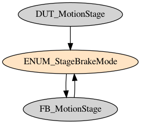
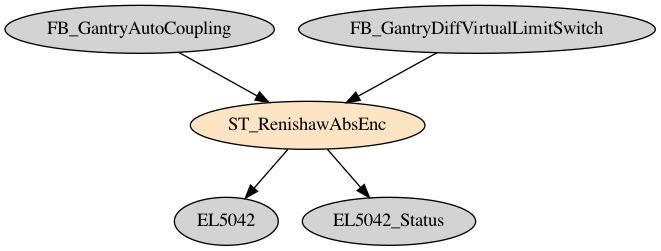
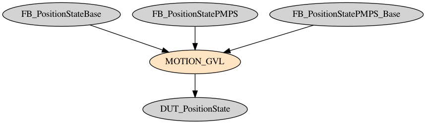
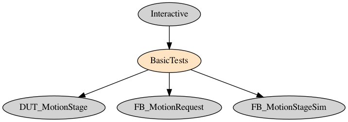
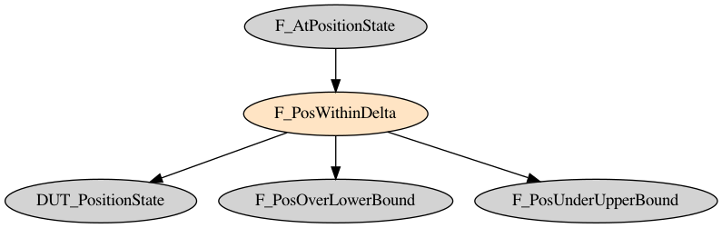
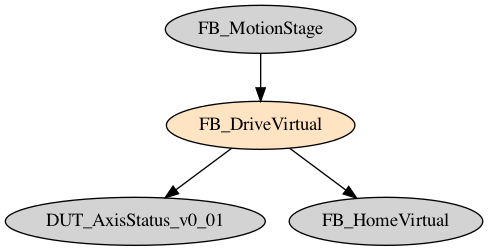
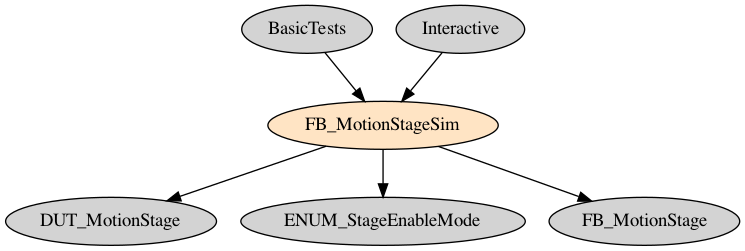

DUTs
DUT_AxisStatus_v0_01
| Line | Code | Notes |
|---|---|---|
| 1 | TYPE DUT_AxisStatus_v0_01 : | |
| 2 | STRUCT | |
| 3 | bEnable: BOOL; | |
| 4 | bReset: BOOL; | |
| 5 | bExecute: BOOL; | |
| 6 | nCommand: UINT; | |
| 7 | nCmdData: UINT; | |
| 8 | fVelocity: LREAL; | |
| 9 | fPosition: LREAL; | |
| 10 | fAcceleration: LREAL; | |
| 11 | fDeceleration: LREAL; | |
| 12 | bJogFwd: BOOL; | |
| 13 | bJogBwd: BOOL; | |
| 14 | bLimitFwd: BOOL; | |
| 15 | bLimitBwd: BOOL; | |
| 16 | fOverride: LREAL := 100; | Velocity override in % for all motion commands. (0 ≤ Override ≤ 100.0). Beckhoff proprietary input. |
| 17 | bHomeSensor: BOOL; | |
| 18 | bEnabled: BOOL; | |
| 19 | bError: BOOL; | |
| 20 | nErrorId: UDINT; | |
| 21 | fActVelocity: LREAL; | |
| 22 | fActPosition: LREAL; | |
| 23 | fActDiff: LREAL; | |
| 24 | bHomed:BOOL; | |
| 25 | bBusy:BOOL; | |
| 26 | END_STRUCT | |
| 27 | END_TYPE |
DUT_AxisStatus_v0_01 - API Usage Requirements
- There are no special requirements to use this DUT.
DUT_AxisStatus_v0_01 - Assumptions for Correct Functionality
- m-epics-twincat-ads assumes this DUT is named identically; "DUT_AxisStatus_v0_01".
- ethercatmc has a complicated method for retrieving this data. A general read request of the structure is made by ethercatmc. twincat-ads maps the retrieved structure members to a formatted block of text, which is then parsed by ethercatmc by way of sscanf.
DUT_AxisStatus_v0_01 - Failure Modes
- Any deviation in lcls-twincat-general, ethercatmc, or twincat-ads of this structure (in name or members) without a corresponding fix in the remaining codebases would disable motion for an entire PLC.
DUT_AxisStatus_v0_01 - Summary
This is a status information structure that is passed to EPICS to summarize a single axis's status.DUT_ErrorState
| Line | Code | Notes |
|---|---|---|
| 1 | {attribute 'qualified_only'} | |
| 2 | {attribute 'strict'} | |
| 3 | TYPE DUT_ErrorState : | |
| 4 | ( | |
| 5 | None, | |
| 6 | Active, | |
| 7 | Inactive, | |
| 8 | Acknowledged | |
| 9 | ); | |
| 10 | END_TYPE |
DUT_ErrorState - Summary
- This DUT is an enumeration type.
DUT_MotionPneumaticActuator
| Line | Code | Notes |
|---|---|---|
| 1 | {attribute 'qualified_only'} | |
| 2 | {attribute 'strict'} | |
| 3 | TYPE DUT_MotionPneumaticActuator : | |
| 4 | // Defines the EPICS interface to actuating a pneumatic stage | |
| 5 | STRUCT | |
| 6 | (* Hardware *) | |
| 7 | //Readbacks | |
| 8 | //Limit Switch | |
| 9 | {attribute 'pytmc' := ' | |
| 10 | pv: PLC:bInLimitSwitch | |
| 11 | io: i | |
| 12 | field: ZNAM FALSE | |
| 13 | field: ONAM TRUE | |
| 14 | field: DESC TRUE if IN limit is reached | |
| 15 | '} | |
| 16 | i_bInLimitSwitch : BOOL; | |
| 17 | {attribute 'pytmc' := ' | |
| 18 | pv: PLC:bOutLimitSwitch | |
| 19 | io: i | |
| 20 | field: ZNAM FALSE | |
| 21 | field: ONAM TRUE | |
| 22 | field: DESC TRUE if OUT limit is reached | |
| 23 | '} | |
| 24 | i_bOutLimitSwitch : BOOL; | |
| 25 | //Controls | |
| 26 | //Digital outputs | |
| 27 | {attribute 'pytmc' := ' | |
| 28 | pv: bRetractDigitalOutput; | |
| 29 | io: i; | |
| 30 | field: ONAM FALSE | |
| 31 | field: ZNAM TRUE | |
| 32 | field: DESC TRUE if Retract digital output is active | |
| 33 | '} | |
| 34 | q_bRetract : BOOL; | |
| 35 | {attribute 'pytmc' := ' | |
| 36 | pv: bInsetDigitalOutput; | |
| 37 | io: i; | |
| 38 | field: ONAM FALSE | |
| 39 | field: ZNAM TRUE | |
| 40 | field: DESC TRUE if Insert digital output is active | |
| 41 | '} | |
| 42 | q_bInsert : BOOL; | |
| 43 | ||
| 44 | ||
| 45 | //Logic and supervisory | |
| 46 | {attribute 'pytmc' := ' | |
| 47 | pv: bInterlockOK; | |
| 48 | io: i; | |
| 49 | field: ZNAM FALSE | |
| 50 | field: ONAM TRUE | |
| 51 | field: DESC True if the actuator has permission to move in either direction | |
| 52 | '} | |
| 53 | bILK_OK: BOOL; | |
| 54 | {attribute 'pytmc' := ' | |
| 55 | pv: bInsertEnable; | |
| 56 | io: i; | |
| 57 | field: ZNAM FALSE | |
| 58 | field: ONAM TRUE | |
| 59 | field: DESC True if the actuator had permission to be retracted | |
| 60 | '} | |
| 61 | bInsertOK : BOOL; | |
| 62 | {attribute 'pytmc' := ' | |
| 63 | pv: bRetractEnable; | |
| 64 | io: i; | |
| 65 | field: ZNAM FALSE | |
| 66 | field: ONAM TRUE | |
| 67 | field: DESC True if the actuator had permission to be inserted | |
| 68 | '} | |
| 69 | bRetractOK : BOOL; | |
| 70 | ||
| 71 | (* Commands *) | |
| 72 | // Used from Epics to comand the actuator to move | |
| 73 | {attribute 'pytmc' := ' | |
| 74 | pv: CMD:IN; | |
| 75 | io: io; | |
| 76 | field: DESC Used by EPICS and internally to request Insert motion | |
| 77 | '} | |
| 78 | bInsert_SW : BOOL; | |
| 79 | {attribute 'pytmc' := ' | |
| 80 | pv: CMD:OUT; | |
| 81 | io: io; | |
| 82 | field: DESC Used by EPICS and internally to request retract motion | |
| 83 | '} | |
| 84 | bRetract_SW : BOOL; | |
| 85 | ||
| 86 | (*Returns*) | |
| 87 | // TRUE if in the middle of a command | |
| 88 | {attribute 'pytmc' := ' | |
| 89 | pv: bBusy | |
| 90 | io: i | |
| 91 | field: ONAM FALSE | |
| 92 | field: ZNAM TRUE | |
| 93 | field: DESC TRUE if in the middle of a command | |
| 94 | '} | |
| 95 | bBusy: BOOL; | |
| 96 | // TRUE if we've done a command and it has finished | |
| 97 | {attribute 'pytmc' := ' | |
| 98 | pv: bDone | |
| 99 | io: i | |
| 100 | field: ONAM FALSE | |
| 101 | field: ZNAM TRUE | |
| 102 | field: DESC TRUE if command finished successfully | |
| 103 | '} | |
| 104 | bDone: BOOL; | |
| 105 | {attribute 'pytmc' := ' | |
| 106 | pv: bReset | |
| 107 | io: io | |
| 108 | field: ZNAM FALSE | |
| 109 | field: ONAM TRUE | |
| 110 | field: DESC Used internally to reset errors | |
| 111 | '} | |
| 112 | bReset: BOOL; | |
| 113 | // TRUE if we're in an error state | |
| 114 | {attribute 'pytmc' := ' | |
| 115 | pv: PLC:bError | |
| 116 | io: i | |
| 117 | field: ONAM FALSE | |
| 118 | field: ZNAM TRUE | |
| 119 | field: DESC TRUE if we're in an error state | |
| 120 | '} | |
| 121 | bError: BOOL; | |
| 122 | ||
| 123 | // Error code if nonzero | |
| 124 | {attribute 'pytmc' := ' | |
| 125 | pv: PLC:nErrorId | |
| 126 | io: i | |
| 127 | field: DESC Error code if nonzero | |
| 128 | '} | |
| 129 | nErrorId: UDINT; | |
| 130 | // Message to identify the error state | |
| 131 | {attribute 'pytmc' := ' | |
| 132 | pv: PLC:sErrorMessage | |
| 133 | io: i | |
| 134 | field: DESC Message to identify the error state | |
| 135 | '} | |
| 136 | sErrorMessage: STRING; | |
| 137 | {attribute 'pytmc' := ' | |
| 138 | pv: nPositionState ; | |
| 139 | type: mbbi ; | Deprecated/invalid pytmc pragma key |
| 140 | field: ZRST RETRACTED ; | |
| 141 | field: ONST INSERTED ; | |
| 142 | field: TWST MOVING ; | |
| 143 | field: THST INVALID ; | |
| 144 | io: i | |
| 145 | field: DESC Pneumatic actuator position | |
| 146 | '} | |
| 147 | ||
| 148 | eState : ENUM_PnuematicActuatorPositionState := ENUM_PnuematicActuatorPositionState.INVALID; | |
| 149 | ||
| 150 | END_STRUCT | |
| 151 | END_TYPE |
Related:
DUT_MotionPneumaticActuator - API Usage Requirements
- None. See FB_MotionPneumaticActuator for implementation details.
DUT_MotionPneumaticActuator - Assumptions for Correct Functionality
- This DUT requires a pytmc pragma.
DUT_MotionStage
| Line | Code | Notes |
|---|---|---|
| 1 | TYPE DUT_MotionStage : | |
| 2 | // Defines the EPICS interface to moving a motor in TwinCAT | |
| 3 | STRUCT | |
| 4 | (* Hardware *) | |
| 5 | ||
| 6 | // PLC Axis Reference | |
| 7 | Axis: AXIS_REF; | This is an internal Beckhoff NC axis reference, which defines the interface between the PLC and the NC. See AXIS_REF |
| 8 | // NC Forward Limit Switch: TRUE if ok to move | |
| 9 | {attribute 'pytmc' := ' | |
| 10 | pv: PLC:bLimitForwardEnable | |
| 11 | io: i | |
| 12 | field: ZNAM FALSE | |
| 13 | field: ONAM TRUE | |
| 14 | field: DESC FALSE if forward limit hit | |
| 15 | '} | |
| 16 | bLimitForwardEnable AT %I*: BOOL; | NC Forward Limit Switch; TRUE if it's OK to move in that direction. |
| 17 | // NC Backward Limit Switch: TRUE if ok to move | |
| 18 | {attribute 'pytmc' := ' | |
| 19 | pv: PLC:bLimitBackwardEnable | |
| 20 | io: i | |
| 21 | field: ZNAM FALSE | |
| 22 | field: ONAM TRUE | |
| 23 | field: DESC FALSE if reverse limit hit | |
| 24 | '} | |
| 25 | bLimitBackwardEnable AT %I*: BOOL; | NC Backward Limit Switch; TRUE if it's OK to move in that direction. |
| 26 | // NO Home Switch: TRUE if at home | |
| 27 | {attribute 'pytmc' := ' | |
| 28 | pv: PLC:bHome | |
| 29 | io: i | |
| 30 | field: ZNAM FALSE | |
| 31 | field: ONAM TRUE | |
| 32 | field: DESC TRUE if at homing switch | |
| 33 | '} | |
| 34 | bHome AT %I*: BOOL; | Home limit switch current status. Active high. |
| 35 | // NC Brake Output: TRUE to release brake | |
| 36 | {attribute 'pytmc' := ' | |
| 37 | pv: PLC:bBrakeRelease | |
| 38 | io: i | |
| 39 | field: ZNAM FALSE | |
| 40 | field: ONAM TRUE | |
| 41 | field: DESC TRUE if brake released | |
| 42 | '} | |
| 43 | bBrakeRelease AT %Q*: BOOL; | Output to brake for release. Active high. |
| 44 | // NC STO Input: TRUE if ok to move | |
| 45 | {attribute 'pytmc' := ' | |
| 46 | pv: PLC:bHardwareEnable | |
| 47 | io: i | |
| 48 | field: ZNAM FALSE | |
| 49 | field: ONAM TRUE | |
| 50 | field: DESC TRUE if STO not hit | |
| 51 | '} | |
| 52 | bHardwareEnable AT %I*: BOOL; | Safe torque off input. Motion OK (TRUE), no motion allowed (FALSE). |
| 53 | ||
| 54 | // Raw encoder IO for ULINT (Biss-C) | |
| 55 | nRawEncoderULINT AT %I*: ULINT; | See note below. |
| 56 | // Raw encoder IO for UINT (Relative Encoders) | |
| 57 | nRawEncoderUINT AT %I*: UINT; | See note below. |
| 58 | // Raw encoder IO for INT (LVDT) | |
| 59 | nRawEncoderINT AT %I*: INT; | See note below. |
| 60 | ||
| 61 | (* Psuedo-hardware *) | |
| 62 | ||
| 63 | // Forward enable EPS summary | |
| 64 | {attribute 'pytmc' := ' | |
| 65 | pv: PLC:bAllForwardEnable | |
| 66 | io: i | |
| 67 | field: ZNAM FALSE | |
| 68 | field: ONAM TRUE | |
| 69 | field: DESC Summary of axis permission to move forward | |
| 70 | '} | |
| 71 | bAllForwardEnable: BOOL:=FALSE; | |
| 72 | // Backward enable EPS summary | |
| 73 | {attribute 'pytmc' := ' | |
| 74 | pv: PLC:bAllBackwardEnable | |
| 75 | io: i | |
| 76 | field: ZNAM FALSE | |
| 77 | field: ONAM TRUE | |
| 78 | field: DESC Summary of axis permission to move backward | |
| 79 | '} | |
| 80 | bAllBackwardEnable: BOOL:=FALSE; | |
| 81 | // Enable EPS summary encapsulating emergency stop button and any additional motion preventive hardware | |
| 82 | {attribute 'pytmc' := ' | |
| 83 | pv: PLC:bAllEnable | |
| 84 | io: i | |
| 85 | field: ZNAM FALSE | |
| 86 | field: ONAM TRUE | |
| 87 | field: DESC Summary of axis permission to have power | |
| 88 | '} | |
| 89 | bAllEnable: BOOL:=FALSE; | |
| 90 | // Forward virtual gantry limit switch | |
| 91 | {attribute 'pytmc' := ' | |
| 92 | pv: PLC:bGantryForwardEnable | Currently only set by FB_GantryDiffVirtualLimitSwitch as part of FB_GantryAutoCoupling |
| 93 | io: i | |
| 94 | field: ZNAM FALSE | |
| 95 | field: ONAM TRUE | |
| 96 | field: DESC TRUE if gantry ok to move forward | |
| 97 | '} | |
| 98 | bGantryForwardEnable: BOOL:=FALSE; | |
| 99 | // Backward virtual gantry limit switch | |
| 100 | {attribute 'pytmc' := ' | |
| 101 | pv: PLC:bGantryBackwardEnable | |
| 102 | io: i | |
| 103 | field: ZNAM FALSE | |
| 104 | field: ONAM TRUE | |
| 105 | field: DESC TRUE if gantry ok to move backward | |
| 106 | '} | |
| 107 | bGantryBackwardEnable: BOOL:=FALSE; | |
| 108 | // Encoder count summary, if linked above | |
| 109 | {attribute 'pytmc' := ' | |
| 110 | pv: PLC:nEncoderCount | |
| 111 | io: i | |
| 112 | field: DESC Count from encoder hardware | |
| 113 | '} | |
| 114 | nEncoderCount: UDINT; | Raw encoder counts to report to user, a summary of the 3 raw types above. (Note: UDINT, 32-bit unsigned integer) This is not intended to be linked or used directly. |
| 115 | ||
| 116 | (* Settings *) | |
| 117 | // Name to use for log messages, fast faults, etc. | |
| 118 | {attribute 'pytmc' := ' | |
| 119 | pv: PLC:sName | |
| 120 | io: i | |
| 121 | field: DESC PLC program name | |
| 122 | '} | |
| 123 | sName: STRING; | Required to be set, or the axis will not initialize. |
| 124 | // If TRUE, we want to enable the motor independently of PMPS or other safety systems. | |
| 125 | {attribute 'pytmc' := ' | |
| 126 | pv: PLC:bPowerSelf | |
| 127 | io: i | |
| 128 | field: ZNAM FALSE | |
| 129 | field: ONAM TRUE | |
| 130 | field: DESC FALSE if axis is in PMPS | |
| 131 | '} | |
| 132 | bPowerSelf: BOOL:=FALSE; | Moves are automatically allowed if no safety issues are raised. Otherwise, some other code must manually set this. |
| 133 | // Determines when we automatically enable the motor | |
| 134 | {attribute 'pytmc' := ' | |
| 135 | pv: PLC:nEnableMode | |
| 136 | io: i | |
| 137 | field: DESC Describes when the axis will automatically get power | |
| 138 | '} | |
| 139 | nEnableMode: ENUM_StageEnableMode:=ENUM_StageEnableMode.DURING_MOTION; | Default is DURING_MOTION; Enable before motion, disable after motion |
| 140 | // Determines when we automatically disengage the brake | |
| 141 | {attribute 'pytmc' := ' | |
| 142 | pv: PLC:nBrakeMode | |
| 143 | io: i | |
| 144 | field: DESC Describes when the brake will be released | |
| 145 | '} | |
| 146 | nBrakeMode: ENUM_StageBrakeMode:=ENUM_StageBrakeMode.IF_ENABLED; | Default is "IF_ENABLED"; disengage brake when the motor is enabled. |
| 147 | // Determines our encoder homing strategy | |
| 148 | {attribute 'pytmc' := ' | |
| 149 | pv: PLC:nHomingMode | |
| 150 | io: i | |
| 151 | field: DESC Describes our homing strategy | |
| 152 | '} | |
| 153 | nHomingMode: ENUM_EpicsHomeCmd:=ENUM_EpicsHomeCmd.NONE; | Default is to never home. |
| 154 | // Set true to activate gantry EPS | |
| 155 | {attribute 'pytmc' := ' | |
| 156 | pv: PLC:bGantryAxis | |
| 157 | io: i | |
| 158 | field: ZNAM FALSE | |
| 159 | field: ONAM TRUE | |
| 160 | field: DESC TRUE if gantry EPS active | |
| 161 | '} | |
| 162 | bGantryAxis: BOOL:=FALSE; | Developer flag to mark this as a gantry axis. |
| 163 | ||
| 164 | // Set to gantry difference tolerance | |
| 165 | nGantryTol: LINT:=0; | Gantry tolerance in raw encoder counts. |
| 166 | ||
| 167 | // Encoder count at which this axis is aligned with other axis | |
| 168 | nEncRef: ULINT:=0; |
(Issue) This appears to be unused. Other projects do not appear to have any reference to this. Naming does not indicate it pairs with the gantry settings. |
| 169 | ||
| 170 | (* Commands *) | |
| 171 | // Used internally to request enables | |
| 172 | {attribute 'pytmc' := ' | |
| 173 | pv: PLC:bEnable | |
| 174 | io: io | |
| 175 | field: ZNAM FALSE | |
| 176 | field: ONAM TRUE | |
| 177 | field: DESC Used internally to request enables | |
| 178 | '} | |
| 179 | bEnable: BOOL; | Reset when bReset is flagged. |
| 180 | // Used internally to reset errors and other state | |
| 181 | {attribute 'pytmc' := ' | |
| 182 | pv: PLC:bReset | |
| 183 | io: io | |
| 184 | field: ZNAM FALSE | |
| 185 | field: ONAM TRUE | |
| 186 | field: DESC Used internally to reset errors | |
| 187 | '} | |
| 188 | bReset: BOOL; | Reset when bReset is flagged. |
| 189 | // Used internally and by the IOC to start or stop a move | |
| 190 | {attribute 'pytmc' := ' | |
| 191 | pv: PLC:bExecute | |
| 192 | io: io | |
| 193 | field: ZNAM FALSE | |
| 194 | field: ONAM TRUE | |
| 195 | field: DESC Used internally and by the IOC to start or stop | |
| 196 | '} | |
| 197 | bExecute: BOOL; | Reset when bReset is flagged. |
| 198 | // Used by the IOC to disable an axis | |
| 199 | {attribute 'pytmc' := ' | |
| 200 | pv: PLC:bUserEnable | |
| 201 | io: io | |
| 202 | field: ZNAM DISABLE | |
| 203 | field: ONAM ENABLE | |
| 204 | field: DESC Used to disable power entirely for an axis | |
| 205 | '} | |
| 206 | bUserEnable: BOOL := 1; | |
| 207 | ||
| 208 | (* Shortcut Commands *) | |
| 209 | // Start a move to fPosition with fVelocity | |
| 210 | {attribute 'pytmc' := ' | |
| 211 | pv: PLC:bMoveCmd | |
| 212 | io: io | |
| 213 | field: DESC Start a move | |
| 214 | '} | |
| 215 | bMoveCmd: BOOL; | (Rising trigger) Set this to request a move to fPosition with fVelocity |
| 216 | // Start the homing routine | |
| 217 | {attribute 'pytmc' := ' | |
| 218 | pv: PLC:bHomeCmd | |
| 219 | io: io | |
| 220 | field: DESC Start the homing routine | |
| 221 | '} | |
| 222 | bHomeCmd: BOOL; | (Rising trigger) Set this to request to perform the homing routine (set by nHomingMode) |
| 223 | ||
| 224 | (* Command Args *) | |
| 225 | // Used internally and by the IOC to pick what kind of move to do | |
| 226 | {attribute 'pytmc' := ' | |
| 227 | pv: PLC:nCommand | This is actually ENUM_EpicsMotorCmd. TODO: what if set manually in code? What if invalid value? |
| 228 | io: io | |
| 229 | field: DESC Used internally and by the IOC to pick move type | |
| 230 | '} | |
| 231 | nCommand: INT; | |
| 232 | // Used internally and by the IOC to pass additional data to some commands | |
| 233 | {attribute 'pytmc' := ' | |
| 234 | pv: PLC:nCmdData | |
| 235 | io: io | |
| 236 | field: DESC Used internally and by the IOC to pass extra args | |
| 237 | '} | |
| 238 | nCmdData: INT; | |
| 239 | // Used internally and by the IOC to pick a destination for the move | |
| 240 | {attribute 'pytmc' := ' | |
| 241 | pv: PLC:fPosition | |
| 242 | io: io | |
| 243 | field: DESC Used internally and by the IOC as the set position | |
| 244 | '} | |
| 245 | fPosition: LREAL; | |
| 246 | // Used internally and by the IOC to pick a move velocity | |
| 247 | {attribute 'pytmc' := ' | |
| 248 | pv: PLC:fVelocity | |
| 249 | io: io | |
| 250 | field: DESC Used internally and by the IOC to set velocity | |
| 251 | '} | |
| 252 | fVelocity: LREAL; | |
| 253 | // Used internally and by the IOC to pick a move acceleration | |
| 254 | {attribute 'pytmc' := ' | |
| 255 | pv: PLC:fAcceleration | |
| 256 | io: io | |
| 257 | field: DESC Used internally and by the IOC to set acceleration | |
| 258 | '} | |
| 259 | fAcceleration: LREAL; | |
| 260 | // Used internally and by the IOC to pick a move deceleration | |
| 261 | {attribute 'pytmc' := ' | |
| 262 | pv: PLC:fDeceleration | |
| 263 | io: io | |
| 264 | field: DESC Used internally and by the IOC to set deceleration | |
| 265 | '} | |
| 266 | fDeceleration: LREAL; | |
| 267 | // Used internally and by the IOC to pick a home position | |
| 268 | {attribute 'pytmc' := ' | |
| 269 | pv: PLC:fHomePosition | |
| 270 | io: io | |
| 271 | field: DESC Used internally and by the IOC to pick home position | |
| 272 | '} | |
| 273 | fHomePosition: LREAL; | |
| 274 | ||
| 275 | (* Info *) | |
| 276 | // Unique ID assigned to each axis in the NC | |
| 277 | {attribute 'pytmc' := ' | |
| 278 | pv: PLC:nMotionAxisID | |
| 279 | io: i | |
| 280 | field: DESC Unique ID assigned to each axis in the NC | |
| 281 | '} | |
| 282 | nMotionAxisID: UDINT:=0; | |
| 283 | ||
| 284 | (* Returns *) | |
| 285 | // TRUE if done enabling | |
| 286 | {attribute 'pytmc' := ' | |
| 287 | pv: PLC:bEnableDone | |
| 288 | io: i | |
| 289 | field: ZNAM FALSE | |
| 290 | field: ONAM TRUE | |
| 291 | field: DESC TRUE if done enabling | |
| 292 | '} | |
| 293 | bEnableDone: BOOL; | |
| 294 | // TRUE if in the middle of a command | |
| 295 | {attribute 'pytmc' := ' | |
| 296 | pv: PLC:bBusy | |
| 297 | io: i | |
| 298 | field: ZNAM FALSE | |
| 299 | field: ONAM TRUE | |
| 300 | field: DESC TRUE if in the middle of a command | |
| 301 | '} | |
| 302 | bBusy: BOOL; | |
| 303 | // TRUE if we've done a command and it has finished | |
| 304 | {attribute 'pytmc' := ' | |
| 305 | pv: PLC:bDone | |
| 306 | io: i | |
| 307 | field: ZNAM FALSE | |
| 308 | field: ONAM TRUE | |
| 309 | field: DESC TRUE if command finished successfully | |
| 310 | '} | |
| 311 | bDone: BOOL; | |
| 312 | // TRUE if the motor has been homed, or does not need to be homed | |
| 313 | {attribute 'pytmc' := ' | |
| 314 | pv: PLC:bHomed | |
| 315 | io: i | |
| 316 | field: DESC TRUE if the motor has been homed | |
| 317 | '} | |
| 318 | bHomed: BOOL; | |
| 319 | // TRUE if we have safety permission to move | |
| 320 | {attribute 'pytmc' := ' | |
| 321 | pv: PLC:bSafetyReady | |
| 322 | io: i | |
| 323 | field: ZNAM FALSE | |
| 324 | field: ONAM TRUE | |
| 325 | field: DESC TRUE if safe to start a move | |
| 326 | '} | |
| 327 | bSafetyReady: BOOL; | |
| 328 | // TRUE if we're in an error state | |
| 329 | {attribute 'pytmc' := ' | |
| 330 | pv: PLC:bError | |
| 331 | io: i | |
| 332 | field: ZNAM FALSE | |
| 333 | field: ONAM TRUE | |
| 334 | field: DESC TRUE if we're in an error state | |
| 335 | '} | |
| 336 | bError: BOOL; | Reset when bReset is flagged. |
| 337 | // Error code if nonzero | |
| 338 | {attribute 'pytmc' := ' | |
| 339 | pv: PLC:nErrorId | |
| 340 | io: i | |
| 341 | field: DESC Error code if nonzero | |
| 342 | '} | |
| 343 | nErrorId: UDINT; | Reset when bReset is flagged. |
| 344 | // Message to identify the error state | |
| 345 | {attribute 'pytmc' := ' | |
| 346 | pv: PLC:sErrorMessage | |
| 347 | io: i | |
| 348 | field: DESC Message to identify the error state | |
| 349 | '} | |
| 350 | sErrorMessage: STRING; | Reset when bReset is flagged. |
| 351 | // Internal hook for custom error messages | |
| 352 | sCustomErrorMessage: STRING; | Reset when bReset is flagged. |
| 353 | // MC_ReadParameterSet Output | |
| 354 | stAxisParameters: ST_AxisParameterSet; | |
| 355 | // True if we've updated stAxisParameters at least once | |
| 356 | bAxisParamsInit: BOOL; | |
| 357 | ||
| 358 | // Misc axis status information for the IOC | |
| 359 | stAxisStatus: DUT_AxisStatus_v0_01; | This axis status information is passed to the IOC in one structure. It is updated by FB_DriveVirtual |
| 360 | ||
| 361 | (* Other status information for users of the IOC *) | |
| 362 | // Position lag difference | |
| 363 | {attribute 'pytmc' := ' | |
| 364 | pv: PLC:fPosDiff | |
| 365 | io: i | |
| 366 | field: DESC Position lag difference | |
| 367 | '} | |
| 368 | fPosDiff: LREAL; | AXIS_REF.NcToPlc.PosDiff (LREAL) |
| 369 | END_STRUCT | |
| 370 | END_TYPE |
Related:
DUT_MotionStage - API Usage Requirements
- For each axis, required settings may differ.
- At minimum, sName must be set.
- If the axis is configured in a gantry, bGantryAxis and nGantryTol must be set.
- If the axis is has a brake, nBrakeMode must be set appropriately. bBrakeRelease must be linked to the brake output.
- Only one of nRawEncoder{ULINT,UINT,INT} may be linked. FB_EncoderValue chooses ULINT, UINT, and then finally INT respectively, only checking for a nonzero value
- nEncoder
- nCommand (internally + IOC)
- nCmdData (internally + IOC)
- bAxisParamsInit; could use invalid encoder values on initialization in FB_PositionStateInternal for all states.
DUT_MotionStage - Mappable Inputs
- bLimitForwardEnable (BOOL); NC Forward Limit Switch: TRUE if ok to move
- bLimitBackwardEnable (BOOL); NC Backward Limit Switch: TRUE if ok to move
- bHome (BOOL); normally open home switch, TRUE if at home
- bHardwareEnable (BOOL); NC STO Input: TRUE if ok to move
- nRawEncoderULINT (ULINT); Raw encoder IO for ULINT (Biss-C)
- nRawEncoderUINT (UINT); Raw encoder IO for UINT (Relative Encoders)
- nRawEncoderINT (INT); Raw encoder IO for INT (LVDT)
DUT_MotionStage - Mappable Outputs
- bBrakeRelease (BOOL); NC Brake Output: TRUE to release brake
DUT_MotionStage - Assumptions for Correct Functionality
- Gantry should have the same encoder resolution, as comparisons are done on raw encoder counts. See FB_GantryDiffVirtualLimitSwitch.
DUT_MotionStage - Summary
- Defines the EPICS interface to moving a motor in TwinCAT.
- Can be used internally in a PLC project as well.
- Users must be careful to configure this structure correctly.
DUT_PositionState
| Line | Code | Notes |
|---|---|---|
| 1 | TYPE DUT_PositionState : | |
| 2 | // Defines settings and current safety status for moves to specific positions for an axis | |
| 3 | STRUCT | |
| 4 | // Name as queried via the NAME PV in EPICS | |
| 5 | {attribute 'pytmc' := ' | |
| 6 | pv: NAME | |
| 7 | io: input | |
| 8 | field: DESC Name of this position state | |
| 9 | '} | |
| 10 | sName: STRING := 'Invalid'; | |
| 11 | ||
| 12 | // Position associated with this state | |
| 13 | {attribute 'pytmc' := ' | |
| 14 | pv: SETPOINT | |
| 15 | io: io | |
| 16 | field: DESC Axis position associated with this state | |
| 17 | '} | |
| 18 | fPosition: LREAL; | |
| 19 | ||
| 20 | {attribute 'pytmc' := ' | |
| 21 | pv: ENCODER | |
| 22 | io: i | |
| 23 | field: DESC Encoder count associated with this state | |
| 24 | '} | |
| 25 | nEncoderCount: UDINT; | |
| 26 | ||
| 27 | // Maximum allowable deviation from fPosition while at the state | |
| 28 | {attribute 'pytmc' := ' | |
| 29 | pv: DELTA | |
| 30 | io: io | |
| 31 | field: DRVL 0.0 | |
| 32 | field: DESC Max deviation from position at this state | |
| 33 | '} | |
| 34 | fDelta: LREAL; | |
| 35 | ||
| 36 | // Speed at which to move to this state | |
| 37 | {attribute 'pytmc' := ' | |
| 38 | pv: VELO | |
| 39 | io: io | |
| 40 | field: DESC Speed at which to move to this state | |
| 41 | '} | |
| 42 | fVelocity: LREAL; | |
| 43 | ||
| 44 | // (optional) Acceleration to use for moves to this state | |
| 45 | {attribute 'pytmc' := ' | |
| 46 | pv: ACCL | |
| 47 | io: io | |
| 48 | field: DESC Acceleration to use for moves to this state | |
| 49 | '} | |
| 50 | fAccel: LREAL; | |
| 51 | ||
| 52 | // (optional) Deceleration to use for moves to this state | |
| 53 | {attribute 'pytmc' := ' | |
| 54 | pv: DCCL | |
| 55 | io: io | |
| 56 | field: DESC Deceleration to use for moves to this state | |
| 57 | '} | |
| 58 | fDecel: LREAL; | |
| 59 | ||
| 60 | // Safety parameter. This must be set to TRUE by the PLC program to allow moves to this state. This is expected to change as conditions change. | |
| 61 | {attribute 'pytmc' := ' | |
| 62 | pv: MOVE_OK | |
| 63 | io: i | |
| 64 | field: ZNAM FALSE | |
| 65 | field: ONAM TRUE | |
| 66 | field: DESC TRUE if the move would be safe | |
| 67 | '} | |
| 68 | bMoveOk: BOOL; | |
| 69 | ||
| 70 | // Signifies to FB_PositionStateLock that this state should be immutable | |
| 71 | {attribute 'pytmc' := ' | |
| 72 | pv: LOCKED | |
| 73 | io: i | |
| 74 | field: ZNAM FALSE | |
| 75 | field: ONAM TRUE | |
| 76 | field: DESC TRUE if state is immutable | |
| 77 | '} | |
| 78 | bLocked: BOOL; | |
| 79 | ||
| 80 | // Set this to TRUE when you make your state. This defaults to FALSE so that uninitialized states can never be moved to | |
| 81 | {attribute 'pytmc' := ' | |
| 82 | pv: VALID | |
| 83 | io: i | |
| 84 | field: ZNAM FALSE | |
| 85 | field: ONAM TRUE | |
| 86 | field: DESC TRUE if this is a real state | |
| 87 | '} | |
| 88 | bValid: BOOL; | |
| 89 | ||
| 90 | // Set this to TRUE when you want to use the raw encoder counts to define the state | |
| 91 | bUseRawCounts: BOOL; | |
| 92 | ||
| 93 | // Is set to TRUE by FB_PositionStateInternal when called | |
| 94 | bUpdated: BOOL; | |
| 95 | ||
| 96 | // Beam parameters associated with this state | |
| 97 | stBeamParams: ST_BeamParams := PMPS_GVL.cst0RateBeam; | |
| 98 | ||
| 99 | // Transition ID associated with this state | |
| 100 | nRequestAssertionID: UDINT; | |
| 101 | END_STRUCT | |
| 102 | END_TYPE |
Related:
DUT_PositionState - API Usage Requirements
- This DUT should not have a pytmc pragma attached.
- Must be set: sName
- Must be set: fPosition
- Must be set: fVelocity (TODO: or 0 velocity request will be made?)
- Must be set: bMoveOk (Safety parameter. This must be set to TRUE by the PLC program to allow moves to this state.)
- Should be set: fDelta (or position value needs to be exact)
- Optional: fAccel (or default NC acceleration will be used)
- Optional: fDecel (or default NC deceleration will be used)
- Optional: bUseRawCounts (only if raw counts should be used)
- Optional: bLocked (set only if the state should be immutable; TODO check logic with zeros for fAccel etc)
- Set automatically: nEncoderCount (by FB_PositionStateInternal)
- bUpdated: could interfere with motion
DUT_PositionState - Summary
- This is an integral part of the state positioner system.
- This is part of both the old, deprecated API (not under review here; FB_EpicsInOut, FB_PositionStateManager, and FB_StatePTPMove) and also the new states API.
- Defines settings and current safety status for moves to specific positions for an axis.
- Includes PMPS integration by way of ST_BeamParams and nRequestAssertionID.
DUT_TerminalError
| Line | Code | Notes |
|---|---|---|
| 1 | TYPE DUT_TerminalError : | |
| 2 | STRUCT | |
| 3 | //Error system related | |
| 4 | iTerminalID : INT; //ID of the terminal | |
| 5 | Error_ID : ULINT := 0; //ID for the Error entry | |
| 6 | ErrorState : DUT_ErrorState; //State of the error | |
| 7 | ||
| 8 | //Error related | |
| 9 | nDateTimeOn : ULINT; //Date and time when the error occured. Raw data | Uses Tc2_EtherCAT.F_GetActualDcTime64 |
| 10 | sDateTimeOn : STRING(24); //Date and time when the error occured. Readable format | From nDateTimeOn, using Tc2_EtherCat.DCTIME64_TO_STRING |
| 11 | nDateTimeOff : ULINT; //Date and time when the error disapeared. Raw data | |
| 12 | sDateTimeOff : STRING(24); //Date and time when the error disapeared. Readable format | |
| 13 | bWcState : BOOL; //WcState variable of the terminal | Status of the working counter (TRUE means invalid) |
| 14 | uiInfoDataState : UINT; //InfoData.State variable of the terminal | Beckhoff documentation: InfoData.State |
| 15 | sErrorMessage : STRING (128); //Error message corresponding to WcState and InfoData.State | |
| 16 | ErrorType : INT; //Error types (priorities) need to be developed | (Isssue) Appears to be unused |
| 17 | END_STRUCT | |
| 18 | END_TYPE |
Related:
DUT_TerminalError - Summary
- Terminal error indicator. Used by FB_TerminalError> as part of the error system ST_ErrorSystem.
- Summary error states: None, Active, Inactive, Acknowledged
EL5042_Status
| Line | Code | Notes |
|---|---|---|
| 1 | TYPE EL5042_Status : | |
| 2 | STRUCT | |
| 3 | END_STRUCT | |
| 4 | END_TYPE |
EL5042_Status - Summary
- (Issue) This type is empty and unused.
ENUM_EpicsHomeCmd
| Line | Code | Notes |
|---|---|---|
| 1 | {attribute 'qualified_only'} | |
| 2 | {attribute 'strict'} | |
| 3 | TYPE ENUM_EpicsHomeCmd : | |
| 4 | // Defines the valid options for homing in FB_MotionStage | |
| 5 | ( | |
| 6 | LOW_LIMIT := 1, // Low limit switch | |
| 7 | HIGH_LIMIT := 2, // High limit switch | |
| 8 | HOME_VIA_LOW := 3, // Home switch via low switch | |
| 9 | HOME_VIA_HIGH := 4, // Home switch via high switch | |
| 10 | ABSOLUTE_SET := 15, // Set here to be fHomePosition | |
| 11 | NONE := -1 // Do not home, ever | |
| 12 | ); | |
| 13 | END_TYPE |
Related:
ENUM_EpicsHomeCmd - API Usage Requirements
ENUM_EpicsHomeCmd - Assumptions for Correct Functionality
ENUM_EpicsHomeCmd - Failure Modes
ENUM_EpicsHomeCmd - Summary
ENUM_EpicsInOut
| Line | Code | Notes |
|---|---|---|
| 1 | {attribute 'qualified_only'} | |
| 2 | // Example EPICS states enum for use in FB_PositionStateManager | |
| 3 | // Remove strict attribute for easier handling | |
| 4 | TYPE ENUM_EpicsInOut : | |
| 5 | ( | |
| 6 | UNKNOWN := 0, // UNKNOWN must be in slot 0 or the FB breaks | |
| 7 | OUT := 1, // OUT at slot 1 is a convention | |
| 8 | IN := 2 | |
| 9 | ); | |
| 10 | END_TYPE |
Related:
ENUM_EpicsInOut - API Usage Requirements
ENUM_EpicsInOut - Assumptions for Correct Functionality
ENUM_EpicsInOut - Failure Modes
ENUM_EpicsInOut - Summary
ENUM_EpicsMotorCmd
| Line | Code | Notes |
|---|---|---|
| 1 | {attribute 'qualified_only'} | |
| 2 | {attribute 'strict'} | |
| 3 | TYPE ENUM_EpicsMotorCmd : | |
| 4 | // Defines valid EPICS commands for nCommand | |
| 5 | ( | |
| 6 | JOG := 0, | |
| 7 | MOVE_VELOCITY := 1, | |
| 8 | MOVE_RELATIVE := 2, | |
| 9 | MOVE_ABSOLUTE := 3, | |
| 10 | MOVE_MODULO := 4, | |
| 11 | HOME := 10, | |
| 12 | GEAR := 30 | |
| 13 | ); | |
| 14 | END_TYPE |
ENUM_EpicsMotorCmd - API Usage Requirements
ENUM_EpicsMotorCmd - Assumptions for Correct Functionality
ENUM_EpicsMotorCmd - Failure Modes
ENUM_EpicsMotorCmd - Summary
ENUM_MotionRequest
| Line | Code | Notes |
|---|---|---|
| 1 | {attribute 'qualified_only'} | |
| 2 | {attribute 'strict'} | |
| 3 | TYPE ENUM_MotionRequest : | |
| 4 | // Defines behavior options for when FB_MotionRequest is run during an active move from another source | |
| 5 | ( | |
| 6 | WAIT := 0, | |
| 7 | INTERRUPT := 1, | |
| 8 | ABORT := 2 | |
| 9 | ); | |
| 10 | END_TYPE |
Related:
ENUM_MotionRequest - API Usage Requirements
ENUM_MotionRequest - Assumptions for Correct Functionality
ENUM_MotionRequest - Failure Modes
ENUM_MotionRequest - Summary
ENUM_PnuematicActuatorPositionState
| Line | Code | Notes |
|---|---|---|
| 1 | {attribute 'qualified_only'} | |
| 2 | {attribute 'strict'} | |
| 3 | // Defines the positions for a pnuematic actuator | |
| 4 | TYPE ENUM_PnuematicActuatorPositionState : | |
| 5 | ( | |
| 6 | RETRACTED := 0, // Out limit switch is active | |
| 7 | INSERTED := 1, // In limit switch is active | |
| 8 | MOVING := 2, // Neither limit switches is Active | |
| 9 | INVALID :=3 // Invalid state | |
| 10 | ); | |
| 11 | END_TYPE |
ENUM_PnuematicActuatorPositionState - API Usage Requirements
ENUM_PnuematicActuatorPositionState - Assumptions for Correct Functionality
ENUM_PnuematicActuatorPositionState - Failure Modes
ENUM_PnuematicActuatorPositionState - Summary
ENUM_StageBrakeMode
| Line | Code | Notes |
|---|---|---|
| 1 | {attribute 'qualified_only'} | |
| 2 | {attribute 'strict'} | |
| 3 | TYPE ENUM_StageBrakeMode : | |
| 4 | // Defines when to send the brake disengage signal in FB_MotionStage | |
| 5 | ( | |
| 6 | IF_ENABLED, // Disengage brake when the motor is enabled | |
| 7 | IF_MOVING, // Disengage brake when the motor is moving | |
| 8 | NO_BRAKE // Do not change the brake state in FB_MotionStage | |
| 9 | ); | |
| 10 | END_TYPE |
Related:
ENUM_StageBrakeMode - API Usage Requirements
ENUM_StageBrakeMode - Assumptions for Correct Functionality
ENUM_StageBrakeMode - Failure Modes
ENUM_StageBrakeMode - Summary
ENUM_StageEnableMode
| Line | Code | Notes |
|---|---|---|
| 1 | {attribute 'qualified_only'} | |
| 2 | {attribute 'strict'} | |
| 3 | TYPE ENUM_StageEnableMode : | |
| 4 | // Define conditions when FB_MotionStage automatically sets bEnable | |
| 5 | ( | |
| 6 | ALWAYS, // Always set bEnable to TRUE | |
| 7 | NEVER, // Only change bEnable on errors | |
| 8 | DURING_MOTION // Enable before motion, disable after motion | |
| 9 | ); | |
| 10 | END_TYPE |
Related:
ENUM_StageEnableMode - API Usage Requirements
ENUM_StageEnableMode - Assumptions for Correct Functionality
ENUM_StageEnableMode - Failure Modes
ENUM_StageEnableMode - Summary
ST_ErrorSystem
| Line | Code | Notes |
|---|---|---|
| 1 | TYPE ST_ErrorSystem : | |
| 2 | STRUCT | |
| 3 | //Array of error data. Size = cSizeOfErrorData in the GVL | |
| 4 | aErrorData : ARRAY [0..GVL_ErrorSystem.cSizeOfErrorData - 1] OF DUT_TerminalError; | |
| 5 | lNextErrorID : ULINT := 1; //ErrorID for the next error entry | |
| 6 | nNoErrors : UINT; //Number of errors in the list | |
| 7 | nNoOverflows : INT := 0; //Number of overflows. How many error entries have been lost | |
| 8 | END_STRUCT | |
| 9 | END_TYPE |
Related:
ST_ErrorSystem - API Usage Requirements
ST_ErrorSystem - Assumptions for Correct Functionality
ST_ErrorSystem - Failure Modes
ST_ErrorSystem - Summary
ST_RenishawAbsEnc
| Line | Code | Notes |
|---|---|---|
| 1 | // Renishaw BiSS-C absolute encoder used with an EL5042 | |
| 2 | TYPE ST_RenishawAbsEnc : | |
| 3 | STRUCT | |
| 4 | Count AT %I*: ULINT; // Connect to encoder "Position" input | |
| 5 | Status: EL5042_Status; // Status struct placeholder | |
| 6 | Ref: ULINT; // Encoder zero position (useful for aligned position with gantries) | |
| 7 | END_STRUCT | |
| 8 | END_TYPE |
Related:
ST_RenishawAbsEnc - API Usage Requirements
ST_RenishawAbsEnc - Assumptions for Correct Functionality
ST_RenishawAbsEnc - Failure Modes
ST_RenishawAbsEnc - Summary
GVLs
Global_Version
| Line | Code | Notes |
|---|---|---|
| 1 | {attribute 'TcGenerated'} | |
| 2 | // This function has been automatically generated from the project information. | |
| 3 | VAR_GLOBAL CONSTANT | |
| 4 | {attribute 'const_non_replaced'} | |
| 5 | {attribute 'linkalways'} | |
| 6 | stLibVersion_lcls_twincat_motion : ST_LibVersion := (iMajor := 0, iMinor := 0, iBuild := 0, iRevision := 0, sVersion := '0.0.0'); | |
| 7 | END_VAR |
Global_Version - API Usage Requirements
Global_Version - Assumptions for Correct Functionality
Global_Version - Failure Modes
Global_Version - Summary
GVL
| Line | Code | Notes |
|---|---|---|
| 1 | VAR_GLOBAL | |
| 2 | nHomingError:UDINT:=16#14D00; | |
| 3 | END_VAR |
GVL - API Usage Requirements
GVL - Assumptions for Correct Functionality
GVL - Failure Modes
GVL - Summary
GVL_ErrorSystem
| Line | Code | Notes |
|---|---|---|
| 1 | {attribute 'qualified_only'} | |
| 2 | VAR_GLOBAL CONSTANT | |
| 3 | cSizeOfErrorData : UINT := 128; | |
| 4 | ||
| 5 | END_VAR |
GVL_ErrorSystem - API Usage Requirements
GVL_ErrorSystem - Assumptions for Correct Functionality
GVL_ErrorSystem - Failure Modes
GVL_ErrorSystem - Summary
MOTION_GVL
| Line | Code | Notes |
|---|---|---|
| 1 | {attribute 'qualified_only'} | |
| 2 | VAR_GLOBAL | |
| 3 | stUnknownState: DUT_PositionState := (sName := 'Unknown'); | |
| 4 | stInvalidState: DUT_PositionState; | |
| 5 | END_VAR | |
| 6 | VAR_GLOBAL CONSTANT | |
| 7 | // Allocated space for 9 states besides Unknown (16 including Unknown is the max for an EPICS MBBI) | |
| 8 | MAX_STATES: INT := 9; | |
| 9 | END_VAR |
Related:
MOTION_GVL - API Usage Requirements
MOTION_GVL - Assumptions for Correct Functionality
MOTION_GVL - Failure Modes
MOTION_GVL - Summary
POUs
BasicTests
| Line | Code | Notes |
|---|---|---|
| 1 | PROGRAM BasicTests | |
| 2 | VAR | |
| 3 | Motor: DUT_MotionStage; | |
| 4 | fbMotion: FB_MotionStageSim; | |
| 5 | fbRequest: FB_MotionRequest; | |
| 6 | ||
| 7 | bError: BOOL; | |
| 8 | errState: MC_AxisStates; | |
| 9 | END_VAR | |
| 10 | fbRequest(stMotionStage := Motor); | |
| 11 | fbMotion(stMotionStage := Motor); | |
| 12 | ||
| 13 | CASE Motor.Axis.Status.MotionState OF | |
| 14 | MC_AXISSTATE_ERRORSTOP, | |
| 15 | MC_AXISSTATE_STOPPING, | |
| 16 | MC_AXISSTATE_HOMING, | |
| 17 | MC_AXISSTATE_DISCRETEMOTION, | |
| 18 | MC_AXISSTATE_CONTINOUSMOTION, | |
| 19 | MC_AXISSTATE_SYNCHRONIZEDMOTION: | |
| 20 | IF NOT Motor.bBrakeRelease THEN | |
| 21 | bError := TRUE; | |
| 22 | errState := Motor.Axis.Status.MotionState; | |
| 23 | END_IF | |
| 24 | END_CASE | |
| 25 | ||
| 26 | END_PROGRAM |
Related:
BasicTests - API Usage Requirements
BasicTests - Assumptions for Correct Functionality
BasicTests - Failure Modes
BasicTests - Summary
CheckBounds
| Line | Code | Notes |
|---|---|---|
| 1 | // Implicitly generated code : DO NOT EDIT | |
| 2 | FUNCTION CheckBounds : DINT | |
| 3 | VAR_INPUT | |
| 4 | index, lower, upper: DINT; | |
| 5 | END_VAR | |
| 6 | // Implicitly generated code : Only an Implementation suggestion | |
| 7 | {noflow} | |
| 8 | IF index < lower THEN | |
| 9 | CheckBounds := lower; | |
| 10 | ELSIF index > upper THEN | |
| 11 | CheckBounds := upper; | |
| 12 | ELSE | |
| 13 | CheckBounds := index; | |
| 14 | END_IF | |
| 15 | {flow} | |
| 16 | ||
| 17 | END_FUNCTION |
CheckBounds - API Usage Requirements
CheckBounds - Assumptions for Correct Functionality
CheckBounds - Failure Modes
CheckBounds - Summary
CheckDivDInt
| Line | Code | Notes |
|---|---|---|
| 1 | // Implicitly generated code : DO NOT EDIT | |
| 2 | FUNCTION CheckDivDInt : DINT | |
| 3 | VAR_INPUT | |
| 4 | divisor:DINT; | |
| 5 | END_VAR | |
| 6 | // Implicitly generated code : Only an Implementation suggestion | |
| 7 | {noflow} | |
| 8 | IF divisor = 0 THEN | |
| 9 | CheckDivDInt:=1; | |
| 10 | ELSE | |
| 11 | CheckDivDInt:=divisor; | |
| 12 | END_IF; | |
| 13 | {flow} | |
| 14 | ||
| 15 | END_FUNCTION |
CheckDivDInt - API Usage Requirements
CheckDivDInt - Assumptions for Correct Functionality
CheckDivDInt - Failure Modes
CheckDivDInt - Summary
CheckDivLInt
| Line | Code | Notes |
|---|---|---|
| 1 | // Implicitly generated code : DO NOT EDIT | |
| 2 | FUNCTION CheckDivLInt : LINT | |
| 3 | VAR_INPUT | |
| 4 | divisor:LINT; | |
| 5 | END_VAR | |
| 6 | // Implicitly generated code : Only an Implementation suggestion | |
| 7 | {noflow} | |
| 8 | IF divisor = 0 THEN | |
| 9 | CheckDivLInt:=1; | |
| 10 | ELSE | |
| 11 | CheckDivLInt:=divisor; | |
| 12 | END_IF; | |
| 13 | {flow} | |
| 14 | ||
| 15 | END_FUNCTION |
CheckDivLInt - API Usage Requirements
CheckDivLInt - Assumptions for Correct Functionality
CheckDivLInt - Failure Modes
CheckDivLInt - Summary
CheckDivLReal
| Line | Code | Notes |
|---|---|---|
| 1 | // Implicitly generated code : DO NOT EDIT | |
| 2 | FUNCTION CheckDivLReal : LREAL | |
| 3 | VAR_INPUT | |
| 4 | divisor:LREAL; | |
| 5 | END_VAR | |
| 6 | // Implicitly generated code : Only an Implementation suggestion | |
| 7 | {noflow} | |
| 8 | IF divisor = 0 THEN | |
| 9 | CheckDivLReal:=1; | |
| 10 | ELSE | |
| 11 | CheckDivLReal:=divisor; | |
| 12 | END_IF; | |
| 13 | {flow} | |
| 14 | ||
| 15 | END_FUNCTION |
CheckDivLReal - API Usage Requirements
CheckDivLReal - Assumptions for Correct Functionality
CheckDivLReal - Failure Modes
CheckDivLReal - Summary
CheckDivReal
| Line | Code | Notes |
|---|---|---|
| 1 | // Implicitly generated code : DO NOT EDIT | |
| 2 | FUNCTION CheckDivReal : REAL | |
| 3 | VAR_INPUT | |
| 4 | divisor:REAL; | |
| 5 | END_VAR | |
| 6 | // Implicitly generated code : Only an Implementation suggestion | |
| 7 | {noflow} | |
| 8 | IF divisor = 0 THEN | |
| 9 | CheckDivReal:=1; | |
| 10 | ELSE | |
| 11 | CheckDivReal:=divisor; | |
| 12 | END_IF; | |
| 13 | {flow} | |
| 14 | ||
| 15 | END_FUNCTION |
CheckDivReal - API Usage Requirements
CheckDivReal - Assumptions for Correct Functionality
CheckDivReal - Failure Modes
CheckDivReal - Summary
EK1200
| Line | Code | Notes |
|---|---|---|
| 1 | FUNCTION_BLOCK EK1200 | |
| 2 | VAR_INPUT | |
| 3 | En: BOOL; | |
| 4 | END_VAR | |
| 5 | VAR_OUTPUT | |
| 6 | EnO: BOOL; | |
| 7 | END_VAR | |
| 8 | EnO:=En; | |
| 9 | ||
| 10 | END_FUNCTION_BLOCK |
EK1200 - API Usage Requirements
EK1200 - Assumptions for Correct Functionality
EK1200 - Failure Modes
EK1200 - Summary
EL1008
| Line | Code | Notes |
|---|---|---|
| 1 | ///EL1008 | 8-channel digital input terminal 24 V DC, 3 ms | |
| 2 | FUNCTION_BLOCK EL1008 | |
| 3 | ||
| 4 | VAR_INPUT | |
| 5 | En: BOOL; | |
| 6 | iTerminal_ID : INT; | |
| 7 | ErrorSystem : POINTER TO ST_ErrorSystem; | |
| 8 | END_VAR | |
| 9 | ||
| 10 | VAR_OUTPUT | |
| 11 | EnO: BOOL; | |
| 12 | bDi_1: BOOL; | |
| 13 | bDi_2: BOOL; | |
| 14 | bDi_3: BOOL; | |
| 15 | bDi_4: BOOL; | |
| 16 | bDi_5: BOOL; | |
| 17 | bDi_6: BOOL; | |
| 18 | bDi_7: BOOL; | |
| 19 | bDi_8: BOOL; | |
| 20 | bError: BOOL; | |
| 21 | END_VAR | |
| 22 | ||
| 23 | VAR | |
| 24 | Channel_1_Input AT %I*: BOOL; | |
| 25 | Channel_2_Input AT %I*: BOOL; | |
| 26 | Channel_3_Input AT %I*: BOOL; | |
| 27 | Channel_4_Input AT %I*: BOOL; | |
| 28 | Channel_5_Input AT %I*: BOOL; | |
| 29 | Channel_6_Input AT %I*: BOOL; | |
| 30 | Channel_7_Input AT %I*: BOOL; | |
| 31 | Channel_8_Input AT %I*: BOOL; | |
| 32 | WcState_WcState AT %I*: BOOL; | |
| 33 | InfoData_State AT %I*: UINT; | |
| 34 | ||
| 35 | //FB-s | |
| 36 | EL1008_Error : FB_TerminalError; | |
| 37 | END_VAR | |
| 38 | EnO:=En; | |
| 39 | ||
| 40 | //Error FB instance | |
| 41 | EL1008_Error( | |
| 42 | En := TRUE, | |
| 43 | iTerminal_ID := iTerminal_ID, | |
| 44 | bWcState := WcState_WcState, | |
| 45 | uiInfoData_State := InfoData_State, | |
| 46 | pErrorSystem := ErrorSystem, | |
| 47 | bError => bError, | |
| 48 | ); | |
| 49 | ||
| 50 | IF En THEN | |
| 51 | IF bError=FALSE THEN | |
| 52 | bDi_1:=Channel_1_Input; | |
| 53 | bDi_2:=Channel_2_Input; | |
| 54 | bDi_3:=Channel_3_Input; | |
| 55 | bDi_4:=Channel_4_Input; | |
| 56 | bDi_5:=Channel_5_Input; | |
| 57 | bDi_6:=Channel_6_Input; | |
| 58 | bDi_7:=Channel_7_Input; | |
| 59 | bDi_8:=Channel_8_Input; | |
| 60 | ELSE | |
| 61 | bDi_1:=FALSE; | |
| 62 | bDi_2:=FALSE; | |
| 63 | bDi_3:=FALSE; | |
| 64 | bDi_4:=FALSE; | |
| 65 | bDi_5:=FALSE; | |
| 66 | bDi_6:=FALSE; | |
| 67 | bDi_7:=FALSE; | |
| 68 | bDi_8:=FALSE; | |
| 69 | END_IF | |
| 70 | END_IF | |
| 71 | ||
| 72 | END_FUNCTION_BLOCK |
Related:
EL1008 - API Usage Requirements
EL1008 - Assumptions for Correct Functionality
EL1008 - Failure Modes
EL1008 - Summary
EL1018
| Line | Code | Notes |
|---|---|---|
| 1 | ///EL1018 | 8-channel digital input terminal 24 V DC, 10 µs | |
| 2 | FUNCTION_BLOCK EL1018 | |
| 3 | ||
| 4 | VAR_INPUT | |
| 5 | En: BOOL; | |
| 6 | iTerminal_ID : INT; | |
| 7 | ErrorSystem : POINTER TO ST_ErrorSystem; | |
| 8 | END_VAR | |
| 9 | ||
| 10 | VAR_OUTPUT | |
| 11 | EnO: BOOL; | |
| 12 | bDi_1: BOOL; | |
| 13 | bDi_2: BOOL; | |
| 14 | bDi_3: BOOL; | |
| 15 | bDi_4: BOOL; | |
| 16 | bDi_5: BOOL; | |
| 17 | bDi_6: BOOL; | |
| 18 | bDi_7: BOOL; | |
| 19 | bDi_8: BOOL; | |
| 20 | bError : BOOL; | |
| 21 | END_VAR | |
| 22 | ||
| 23 | VAR | |
| 24 | Channel_1_Input AT %I*: BOOL; | |
| 25 | Channel_2_Input AT %I*: BOOL; | |
| 26 | Channel_3_Input AT %I*: BOOL; | |
| 27 | Channel_4_Input AT %I*: BOOL; | |
| 28 | Channel_5_Input AT %I*: BOOL; | |
| 29 | Channel_6_Input AT %I*: BOOL; | |
| 30 | Channel_7_Input AT %I*: BOOL; | |
| 31 | Channel_8_Input AT %I*: BOOL; | |
| 32 | WcState_WcState AT %I*: BOOL; | |
| 33 | InfoData_State AT %I*: UINT; | |
| 34 | ||
| 35 | //FB-s | |
| 36 | EL1018_Error : FB_TerminalError; | |
| 37 | END_VAR | |
| 38 | EnO:=En; | |
| 39 | ||
| 40 | //Error FB instance | |
| 41 | EL1018_Error( | |
| 42 | En := TRUE, | |
| 43 | iTerminal_ID := iTerminal_ID, | |
| 44 | bWcState := WcState_WcState, | |
| 45 | uiInfoData_State := InfoData_State, | |
| 46 | pErrorSystem := ErrorSystem, | |
| 47 | bError => bError, | |
| 48 | ); | |
| 49 | ||
| 50 | IF En THEN | |
| 51 | IF bError=FALSE THEN | |
| 52 | bDi_1:=Channel_1_Input; | |
| 53 | bDi_2:=Channel_2_Input; | |
| 54 | bDi_3:=Channel_3_Input; | |
| 55 | bDi_4:=Channel_4_Input; | |
| 56 | bDi_5:=Channel_5_Input; | |
| 57 | bDi_6:=Channel_6_Input; | |
| 58 | bDi_7:=Channel_7_Input; | |
| 59 | bDi_8:=Channel_8_Input; | |
| 60 | ELSE | |
| 61 | bDi_1:=FALSE; | |
| 62 | bDi_2:=FALSE; | |
| 63 | bDi_3:=FALSE; | |
| 64 | bDi_4:=FALSE; | |
| 65 | bDi_5:=FALSE; | |
| 66 | bDi_6:=FALSE; | |
| 67 | bDi_7:=FALSE; | |
| 68 | bDi_8:=FALSE; | |
| 69 | END_IF | |
| 70 | END_IF | |
| 71 | ||
| 72 | END_FUNCTION_BLOCK |
Related:
EL1018 - API Usage Requirements
EL1018 - Assumptions for Correct Functionality
EL1018 - Failure Modes
EL1018 - Summary
EL1808
| Line | Code | Notes |
|---|---|---|
| 1 | ///EL1808 | HD EtherCAT Terminals, 8-channel digital input 24 V DC, 3 ms, 2-wire connection | |
| 2 | FUNCTION_BLOCK EL1808 | |
| 3 | ||
| 4 | VAR_INPUT | |
| 5 | En: BOOL; | |
| 6 | iTerminal_ID : INT; | |
| 7 | ErrorSystem : POINTER TO ST_ErrorSystem; | |
| 8 | END_VAR | |
| 9 | ||
| 10 | VAR_OUTPUT | |
| 11 | EnO: BOOL; | |
| 12 | bDi_1: BOOL; | |
| 13 | bDi_2: BOOL; | |
| 14 | bDi_3: BOOL; | |
| 15 | bDi_4: BOOL; | |
| 16 | bDi_5: BOOL; | |
| 17 | bDi_6: BOOL; | |
| 18 | bDi_7: BOOL; | |
| 19 | bDi_8: BOOL; | |
| 20 | bError: BOOL; | |
| 21 | END_VAR | |
| 22 | ||
| 23 | VAR | |
| 24 | Channel_1_Input AT %I*: BOOL; | |
| 25 | Channel_2_Input AT %I*: BOOL; | |
| 26 | Channel_3_Input AT %I*: BOOL; | |
| 27 | Channel_4_Input AT %I*: BOOL; | |
| 28 | Channel_5_Input AT %I*: BOOL; | |
| 29 | Channel_6_Input AT %I*: BOOL; | |
| 30 | Channel_7_Input AT %I*: BOOL; | |
| 31 | Channel_8_Input AT %I*: BOOL; | |
| 32 | WcState_WcState AT %I*: BOOL; | |
| 33 | InfoData_State AT %I*: UINT; | |
| 34 | ||
| 35 | //FB-s | |
| 36 | EL1808_Error : FB_TerminalError; | |
| 37 | END_VAR | |
| 38 | EnO:=En; | |
| 39 | ||
| 40 | //Error FB instance | |
| 41 | EL1808_Error( | |
| 42 | En := TRUE, | |
| 43 | iTerminal_ID := iTerminal_ID, | |
| 44 | bWcState := WcState_WcState, | |
| 45 | uiInfoData_State := InfoData_State, | |
| 46 | pErrorSystem := ErrorSystem, | |
| 47 | bError => bError, | |
| 48 | ); | |
| 49 | ||
| 50 | IF En THEN | |
| 51 | IF bError=FALSE THEN | |
| 52 | bDi_1:=Channel_1_Input; | |
| 53 | bDi_2:=Channel_2_Input; | |
| 54 | bDi_3:=Channel_3_Input; | |
| 55 | bDi_4:=Channel_4_Input; | |
| 56 | bDi_5:=Channel_5_Input; | |
| 57 | bDi_6:=Channel_6_Input; | |
| 58 | bDi_7:=Channel_7_Input; | |
| 59 | bDi_8:=Channel_8_Input; | |
| 60 | ELSE | |
| 61 | bDi_1:=FALSE; | |
| 62 | bDi_2:=FALSE; | |
| 63 | bDi_3:=FALSE; | |
| 64 | bDi_4:=FALSE; | |
| 65 | bDi_5:=FALSE; | |
| 66 | bDi_6:=FALSE; | |
| 67 | bDi_7:=FALSE; | |
| 68 | bDi_8:=FALSE; | |
| 69 | END_IF | |
| 70 | END_IF | |
| 71 | ||
| 72 | END_FUNCTION_BLOCK |
Related:
EL1808 - API Usage Requirements
EL1808 - Assumptions for Correct Functionality
EL1808 - Failure Modes
EL1808 - Summary
EL1809
| Line | Code | Notes |
|---|---|---|
| 1 | ///EL1809 | HD EtherCAT Terminals, 16-channel digital input 24 V DC, 3 ms | |
| 2 | FUNCTION_BLOCK EL1809 | |
| 3 | ||
| 4 | VAR_INPUT | |
| 5 | En: BOOL; | |
| 6 | iTerminal_ID : INT; | |
| 7 | ErrorSystem : POINTER TO ST_ErrorSystem; | |
| 8 | END_VAR | |
| 9 | ||
| 10 | VAR_OUTPUT | |
| 11 | EnO: BOOL; | |
| 12 | bDi_1: BOOL; | |
| 13 | bDi_2: BOOL; | |
| 14 | bDi_3: BOOL; | |
| 15 | bDi_4: BOOL; | |
| 16 | bDi_5: BOOL; | |
| 17 | bDi_6: BOOL; | |
| 18 | bDi_7: BOOL; | |
| 19 | bDi_8: BOOL; | |
| 20 | bDi_9: BOOL; | |
| 21 | bDi_10: BOOL; | |
| 22 | bDi_11: BOOL; | |
| 23 | bDi_12: BOOL; | |
| 24 | bDi_13: BOOL; | |
| 25 | bDi_14: BOOL; | |
| 26 | bDi_15: BOOL; | |
| 27 | bDi_16: BOOL; | |
| 28 | bError: BOOL; | |
| 29 | END_VAR | |
| 30 | ||
| 31 | VAR | |
| 32 | Channel_1_Input AT %I*: BOOL; | |
| 33 | Channel_2_Input AT %I*: BOOL; | |
| 34 | Channel_3_Input AT %I*: BOOL; | |
| 35 | Channel_4_Input AT %I*: BOOL; | |
| 36 | Channel_5_Input AT %I*: BOOL; | |
| 37 | Channel_6_Input AT %I*: BOOL; | |
| 38 | Channel_7_Input AT %I*: BOOL; | |
| 39 | Channel_8_Input AT %I*: BOOL; | |
| 40 | Channel_9_Input AT %I*: BOOL; | |
| 41 | Channel_10_Input AT %I*: BOOL; | |
| 42 | Channel_11_Input AT %I*: BOOL; | |
| 43 | Channel_12_Input AT %I*: BOOL; | |
| 44 | Channel_13_Input AT %I*: BOOL; | |
| 45 | Channel_14_Input AT %I*: BOOL; | |
| 46 | Channel_15_Input AT %I*: BOOL; | |
| 47 | Channel_16_Input AT %I*: BOOL; | |
| 48 | WcState_WcState AT %I*: BOOL; | |
| 49 | InfoData_State AT %I*: UINT; | |
| 50 | ||
| 51 | //FB-s | |
| 52 | EL1809_Error : FB_TerminalError; | |
| 53 | END_VAR | |
| 54 | EnO:=En; | |
| 55 | ||
| 56 | //Error FB instance | |
| 57 | EL1809_Error( | |
| 58 | En := TRUE, | |
| 59 | iTerminal_ID := iTerminal_ID, | |
| 60 | bWcState := WcState_WcState, | |
| 61 | uiInfoData_State := InfoData_State, | |
| 62 | pErrorSystem := ErrorSystem, | |
| 63 | bError => bError, | |
| 64 | ); | |
| 65 | ||
| 66 | IF En THEN | |
| 67 | IF bError=FALSE THEN | |
| 68 | bDi_1:=Channel_1_Input; | |
| 69 | bDi_2:=Channel_2_Input; | |
| 70 | bDi_3:=Channel_3_Input; | |
| 71 | bDi_4:=Channel_4_Input; | |
| 72 | bDi_5:=Channel_5_Input; | |
| 73 | bDi_6:=Channel_6_Input; | |
| 74 | bDi_7:=Channel_7_Input; | |
| 75 | bDi_8:=Channel_8_Input; | |
| 76 | bDi_9:=Channel_9_Input; | |
| 77 | bDi_10:=Channel_10_Input; | |
| 78 | bDi_11:=Channel_11_Input; | |
| 79 | bDi_12:=Channel_12_Input; | |
| 80 | bDi_13:=Channel_13_Input; | |
| 81 | bDi_14:=Channel_14_Input; | |
| 82 | bDi_15:=Channel_15_Input; | |
| 83 | bDi_16:=Channel_16_Input; | |
| 84 | ELSE | |
| 85 | bDi_1:=FALSE; | |
| 86 | bDi_2:=FALSE; | |
| 87 | bDi_3:=FALSE; | |
| 88 | bDi_4:=FALSE; | |
| 89 | bDi_5:=FALSE; | |
| 90 | bDi_6:=FALSE; | |
| 91 | bDi_7:=FALSE; | |
| 92 | bDi_8:=FALSE; | |
| 93 | bDi_9:=FALSE; | |
| 94 | bDi_10:=FALSE; | |
| 95 | bDi_11:=FALSE; | |
| 96 | bDi_12:=FALSE; | |
| 97 | bDi_13:=FALSE; | |
| 98 | bDi_14:=FALSE; | |
| 99 | bDi_15:=FALSE; | |
| 100 | bDi_16:=FALSE; | |
| 101 | END_IF | |
| 102 | END_IF | |
| 103 | ||
| 104 | END_FUNCTION_BLOCK |
Related:
EL1809 - API Usage Requirements
EL1809 - Assumptions for Correct Functionality
EL1809 - Failure Modes
EL1809 - Summary
EL1819
| Line | Code | Notes |
|---|---|---|
| 1 | ///EL1819 | HD EtherCAT Terminals, 16-channel digital input 24 V DC, 10 µs | |
| 2 | FUNCTION_BLOCK EL1819 | |
| 3 | ||
| 4 | VAR_INPUT | |
| 5 | En: BOOL; | |
| 6 | iTerminal_ID : INT; | |
| 7 | ErrorSystem : POINTER TO ST_ErrorSystem; | |
| 8 | END_VAR | |
| 9 | ||
| 10 | VAR_OUTPUT | |
| 11 | EnO: BOOL; | |
| 12 | bDi_1: BOOL; | |
| 13 | bDi_2: BOOL; | |
| 14 | bDi_3: BOOL; | |
| 15 | bDi_4: BOOL; | |
| 16 | bDi_5: BOOL; | |
| 17 | bDi_6: BOOL; | |
| 18 | bDi_7: BOOL; | |
| 19 | bDi_8: BOOL; | |
| 20 | bDi_9: BOOL; | |
| 21 | bDi_10: BOOL; | |
| 22 | bDi_11: BOOL; | |
| 23 | bDi_12: BOOL; | |
| 24 | bDi_13: BOOL; | |
| 25 | bDi_14: BOOL; | |
| 26 | bDi_15: BOOL; | |
| 27 | bDi_16: BOOL; | |
| 28 | bError: BOOL; | |
| 29 | END_VAR | |
| 30 | ||
| 31 | VAR | |
| 32 | Channel_1_Input AT %I*: BOOL; | |
| 33 | Channel_2_Input AT %I*: BOOL; | |
| 34 | Channel_3_Input AT %I*: BOOL; | |
| 35 | Channel_4_Input AT %I*: BOOL; | |
| 36 | Channel_5_Input AT %I*: BOOL; | |
| 37 | Channel_6_Input AT %I*: BOOL; | |
| 38 | Channel_7_Input AT %I*: BOOL; | |
| 39 | Channel_8_Input AT %I*: BOOL; | |
| 40 | Channel_9_Input AT %I*: BOOL; | |
| 41 | Channel_10_Input AT %I*: BOOL; | |
| 42 | Channel_11_Input AT %I*: BOOL; | |
| 43 | Channel_12_Input AT %I*: BOOL; | |
| 44 | Channel_13_Input AT %I*: BOOL; | |
| 45 | Channel_14_Input AT %I*: BOOL; | |
| 46 | Channel_15_Input AT %I*: BOOL; | |
| 47 | Channel_16_Input AT %I*: BOOL; | |
| 48 | WcState_WcState AT %I*: BOOL; | |
| 49 | InfoData_State AT %I*: UINT; | |
| 50 | ||
| 51 | //FB-s | |
| 52 | EL1819_Error : FB_TerminalError; | |
| 53 | END_VAR | |
| 54 | EnO:=En; | |
| 55 | ||
| 56 | //Error FB instance | |
| 57 | EL1819_Error( | |
| 58 | En := TRUE, | |
| 59 | iTerminal_ID := iTerminal_ID, | |
| 60 | bWcState := WcState_WcState, | |
| 61 | uiInfoData_State := InfoData_State, | |
| 62 | pErrorSystem := ErrorSystem, | |
| 63 | bError => bError, | |
| 64 | ); | |
| 65 | ||
| 66 | IF En THEN | |
| 67 | IF bError=FALSE THEN | |
| 68 | bDi_1:=Channel_1_Input; | |
| 69 | bDi_2:=Channel_2_Input; | |
| 70 | bDi_3:=Channel_3_Input; | |
| 71 | bDi_4:=Channel_4_Input; | |
| 72 | bDi_5:=Channel_5_Input; | |
| 73 | bDi_6:=Channel_6_Input; | |
| 74 | bDi_7:=Channel_7_Input; | |
| 75 | bDi_8:=Channel_8_Input; | |
| 76 | bDi_9:=Channel_9_Input; | |
| 77 | bDi_10:=Channel_10_Input; | |
| 78 | bDi_11:=Channel_11_Input; | |
| 79 | bDi_12:=Channel_12_Input; | |
| 80 | bDi_13:=Channel_13_Input; | |
| 81 | bDi_14:=Channel_14_Input; | |
| 82 | bDi_15:=Channel_15_Input; | |
| 83 | bDi_16:=Channel_16_Input; | |
| 84 | ELSE | |
| 85 | bDi_1:=FALSE; | |
| 86 | bDi_2:=FALSE; | |
| 87 | bDi_3:=FALSE; | |
| 88 | bDi_4:=FALSE; | |
| 89 | bDi_5:=FALSE; | |
| 90 | bDi_6:=FALSE; | |
| 91 | bDi_7:=FALSE; | |
| 92 | bDi_8:=FALSE; | |
| 93 | bDi_9:=FALSE; | |
| 94 | bDi_10:=FALSE; | |
| 95 | bDi_11:=FALSE; | |
| 96 | bDi_12:=FALSE; | |
| 97 | bDi_13:=FALSE; | |
| 98 | bDi_14:=FALSE; | |
| 99 | bDi_15:=FALSE; | |
| 100 | bDi_16:=FALSE; | |
| 101 | END_IF | |
| 102 | END_IF | |
| 103 | ||
| 104 | END_FUNCTION_BLOCK |
Related:
EL1819 - API Usage Requirements
EL1819 - Assumptions for Correct Functionality
EL1819 - Failure Modes
EL1819 - Summary
EL2014

| Line | Code | Notes |
|---|---|---|
| 1 | FUNCTION_BLOCK EL2014 | |
| 2 | VAR_INPUT | |
| 3 | En: BOOL; | |
| 4 | iTerminal_ID : INT; | |
| 5 | bDo_1: BOOL; | |
| 6 | bDo_2: BOOL; | |
| 7 | bDo_3: BOOL; | |
| 8 | bDo_4: BOOL; | |
| 9 | ErrorSystem : POINTER TO ST_ErrorSystem; | |
| 10 | END_VAR | |
| 11 | ||
| 12 | VAR_OUTPUT | |
| 13 | EnO : BOOL; | |
| 14 | bError : BOOL; | |
| 15 | END_VAR | |
| 16 | ||
| 17 | VAR | |
| 18 | Channel_1_Output AT %Q*: BOOL; | |
| 19 | Channel_2_Output AT %Q*: BOOL; | |
| 20 | Channel_3_Output AT %Q*: BOOL; | |
| 21 | Channel_4_Output AT %Q*: BOOL; | |
| 22 | WcState_WcState AT %I*: BOOL; | |
| 23 | InfoData_State AT %I*: UINT; | |
| 24 | ||
| 25 | //FB-s | |
| 26 | EL2014_Error : FB_TerminalError; | |
| 27 | END_VAR | |
| 28 | (* | |
| 29 | * TODO: | |
| 30 | * Channel diagnostic variables and device diag variables | |
| 31 | *) | |
| 32 | ||
| 33 | EnO:=En; | |
| 34 | ||
| 35 | EL2014_Error( | |
| 36 | En := TRUE, | |
| 37 | iTerminal_ID := iTerminal_ID, | |
| 38 | bWcState := WcState_WcState, | |
| 39 | uiInfoData_State := InfoData_State, | |
| 40 | pErrorSystem := ErrorSystem, | |
| 41 | bError => bError, | |
| 42 | ); | |
| 43 | ||
| 44 | IF En THEN | |
| 45 | IF bError=FALSE THEN | |
| 46 | Channel_1_Output:=bDo_1; | |
| 47 | Channel_2_Output:=bDo_2; | |
| 48 | Channel_3_Output:=bDo_3; | |
| 49 | Channel_4_Output:=bDo_4; | |
| 50 | ELSE | |
| 51 | Channel_1_Output:=FALSE; | |
| 52 | Channel_2_Output:=FALSE; | |
| 53 | Channel_3_Output:=FALSE; | |
| 54 | Channel_4_Output:=FALSE; | |
| 55 | END_IF | |
| 56 | END_IF | |
| 57 | ||
| 58 | END_FUNCTION_BLOCK |
Related:
EL2014 - API Usage Requirements
EL2014 - Assumptions for Correct Functionality
EL2014 - Failure Modes
EL2014 - Summary
EL2252
| Line | Code | Notes |
|---|---|---|
| 1 | ///EL2252 | XFC, 2-channel digital output terminal with time stamp, tri-state | |
| 2 | FUNCTION_BLOCK EL2252 | |
| 3 | VAR_INPUT | |
| 4 | En: BOOL; | |
| 5 | iTerminal_ID : INT; | |
| 6 | bDo_1: BOOL; | |
| 7 | bDo_2: BOOL; | |
| 8 | ErrorSystem : POINTER TO ST_ErrorSystem; | |
| 9 | END_VAR | |
| 10 | ||
| 11 | VAR_OUTPUT | |
| 12 | EnO : BOOL; | |
| 13 | bError : BOOL; | |
| 14 | END_VAR | |
| 15 | ||
| 16 | VAR | |
| 17 | Channel_1_Output AT %Q*: BOOL; | |
| 18 | Channel_2_Output AT %Q*: BOOL; | |
| 19 | WcState_WcState AT %I*: BOOL; | |
| 20 | InfoData_State AT %I*: UINT; | |
| 21 | ||
| 22 | //FB-s | |
| 23 | EL2252_Error : FB_TerminalError; | |
| 24 | END_VAR | |
| 25 | (* | |
| 26 | * TODO: | |
| 27 | * Add the DC sync variables | |
| 28 | *) | |
| 29 | ||
| 30 | EL2252_Error( | |
| 31 | En := TRUE, | |
| 32 | iTerminal_ID := iTerminal_ID, | |
| 33 | bWcState := WcState_WcState, | |
| 34 | uiInfoData_State := InfoData_State, | |
| 35 | pErrorSystem := ErrorSystem, | |
| 36 | bError => bError, | |
| 37 | ); | |
| 38 | ||
| 39 | IF En THEN | |
| 40 | IF bError=FALSE THEN | |
| 41 | Channel_1_Output:=bDo_1; | |
| 42 | Channel_2_Output:=bDo_2; | |
| 43 | ELSE | |
| 44 | Channel_1_Output:=FALSE; | |
| 45 | Channel_2_Output:=FALSE; | |
| 46 | END_IF | |
| 47 | END_IF | |
| 48 | ||
| 49 | END_FUNCTION_BLOCK |
Related:
EL2252 - API Usage Requirements
EL2252 - Assumptions for Correct Functionality
EL2252 - Failure Modes
EL2252 - Summary
EL2808
| Line | Code | Notes |
|---|---|---|
| 1 | FUNCTION_BLOCK EL2808 | |
| 2 | ||
| 3 | VAR_INPUT | |
| 4 | En: BOOL; | |
| 5 | iTerminal_ID : INT; | |
| 6 | bDo_1: BOOL; | |
| 7 | bDo_2: BOOL; | |
| 8 | bDo_3: BOOL; | |
| 9 | bDo_4: BOOL; | |
| 10 | bDo_5: BOOL; | |
| 11 | bDo_6: BOOL; | |
| 12 | bDo_7: BOOL; | |
| 13 | bDo_8: BOOL; | |
| 14 | ErrorSystem : POINTER TO ST_ErrorSystem; | |
| 15 | END_VAR | |
| 16 | ||
| 17 | VAR_OUTPUT | |
| 18 | EnO : BOOL; | |
| 19 | bError : BOOL; | |
| 20 | END_VAR | |
| 21 | ||
| 22 | VAR | |
| 23 | Channel_1_Output AT %Q*: BOOL; | |
| 24 | Channel_2_Output AT %Q*: BOOL; | |
| 25 | Channel_3_Output AT %Q*: BOOL; | |
| 26 | Channel_4_Output AT %Q*: BOOL; | |
| 27 | Channel_5_Output AT %Q*: BOOL; | |
| 28 | Channel_6_Output AT %Q*: BOOL; | |
| 29 | Channel_7_Output AT %Q*: BOOL; | |
| 30 | Channel_8_Output AT %Q*: BOOL; | |
| 31 | WcState_WcState AT %I*: BOOL; | |
| 32 | InfoData_State AT %I*: UINT; | |
| 33 | ||
| 34 | //FB-s | |
| 35 | EL2808_Error : FB_TerminalError; | |
| 36 | END_VAR | |
| 37 | EnO:=En; | |
| 38 | ||
| 39 | EL2808_Error( | |
| 40 | En := TRUE, | |
| 41 | iTerminal_ID := iTerminal_ID, | |
| 42 | bWcState := WcState_WcState, | |
| 43 | uiInfoData_State := InfoData_State, | |
| 44 | pErrorSystem := ErrorSystem, | |
| 45 | bError => bError, | |
| 46 | ); | |
| 47 | ||
| 48 | IF En THEN | |
| 49 | IF bError=FALSE THEN | |
| 50 | Channel_1_Output:=bDo_1; | |
| 51 | Channel_2_Output:=bDo_2; | |
| 52 | Channel_3_Output:=bDo_3; | |
| 53 | Channel_4_Output:=bDo_4; | |
| 54 | Channel_5_Output:=bDo_5; | |
| 55 | Channel_6_Output:=bDo_6; | |
| 56 | Channel_7_Output:=bDo_7; | |
| 57 | Channel_8_Output:=bDo_8; | |
| 58 | ELSE | |
| 59 | Channel_1_Output:=FALSE; | |
| 60 | Channel_2_Output:=FALSE; | |
| 61 | Channel_3_Output:=FALSE; | |
| 62 | Channel_4_Output:=FALSE; | |
| 63 | Channel_5_Output:=FALSE; | |
| 64 | Channel_6_Output:=FALSE; | |
| 65 | Channel_7_Output:=FALSE; | |
| 66 | Channel_8_Output:=FALSE; | |
| 67 | END_IF | |
| 68 | END_IF | |
| 69 | ||
| 70 | END_FUNCTION_BLOCK |
Related:
EL2808 - API Usage Requirements
EL2808 - Assumptions for Correct Functionality
EL2808 - Failure Modes
EL2808 - Summary
EL2819
| Line | Code | Notes |
|---|---|---|
| 1 | FUNCTION_BLOCK EL2819 | |
| 2 | VAR_INPUT | |
| 3 | En: BOOL; | |
| 4 | iTerminal_ID : INT; | |
| 5 | bDo_1: BOOL; | |
| 6 | bDo_2: BOOL; | |
| 7 | bDo_3: BOOL; | |
| 8 | bDo_4: BOOL; | |
| 9 | bDo_5: BOOL; | |
| 10 | bDo_6: BOOL; | |
| 11 | bDo_7: BOOL; | |
| 12 | bDo_8: BOOL; | |
| 13 | bDo_9: BOOL; | |
| 14 | bDo_10: BOOL; | |
| 15 | bDo_11: BOOL; | |
| 16 | bDo_12: BOOL; | |
| 17 | bDo_13: BOOL; | |
| 18 | bDo_14: BOOL; | |
| 19 | bDo_15: BOOL; | |
| 20 | bDo_16: BOOL; | |
| 21 | ErrorSystem : POINTER TO ST_ErrorSystem; | |
| 22 | END_VAR | |
| 23 | ||
| 24 | VAR_OUTPUT | |
| 25 | EnO : BOOL; | |
| 26 | bError : BOOL; | |
| 27 | END_VAR | |
| 28 | ||
| 29 | VAR | |
| 30 | Channel_1_Output AT %Q*: BOOL; | |
| 31 | Channel_2_Output AT %Q*: BOOL; | |
| 32 | Channel_3_Output AT %Q*: BOOL; | |
| 33 | Channel_4_Output AT %Q*: BOOL; | |
| 34 | Channel_5_Output AT %Q*: BOOL; | |
| 35 | Channel_6_Output AT %Q*: BOOL; | |
| 36 | Channel_7_Output AT %Q*: BOOL; | |
| 37 | Channel_8_Output AT %Q*: BOOL; | |
| 38 | Channel_9_Output AT %Q*: BOOL; | |
| 39 | Channel_10_Output AT %Q*: BOOL; | |
| 40 | Channel_11_Output AT %Q*: BOOL; | |
| 41 | Channel_12_Output AT %Q*: BOOL; | |
| 42 | Channel_13_Output AT %Q*: BOOL; | |
| 43 | Channel_14_Output AT %Q*: BOOL; | |
| 44 | Channel_15_Output AT %Q*: BOOL; | |
| 45 | Channel_16_Output AT %Q*: BOOL; | |
| 46 | ||
| 47 | WcState_WcState AT %I*: BOOL; | |
| 48 | InfoData_State AT %I*: UINT; | |
| 49 | ||
| 50 | //FB-s | |
| 51 | EL2819_Error : FB_TerminalError; | |
| 52 | END_VAR | |
| 53 | (* | |
| 54 | * TODO: | |
| 55 | * Channel diagnostic variables and device diag variables | |
| 56 | *) | |
| 57 | ||
| 58 | EnO:=En; | |
| 59 | ||
| 60 | EL2819_Error( | |
| 61 | En := TRUE, | |
| 62 | iTerminal_ID := iTerminal_ID, | |
| 63 | bWcState := WcState_WcState, | |
| 64 | uiInfoData_State := InfoData_State, | |
| 65 | pErrorSystem := ErrorSystem, | |
| 66 | bError => bError, | |
| 67 | ); | |
| 68 | ||
| 69 | IF En THEN | |
| 70 | IF bError=FALSE THEN | |
| 71 | Channel_1_Output:=bDo_1; | |
| 72 | Channel_2_Output:=bDo_2; | |
| 73 | Channel_3_Output:=bDo_3; | |
| 74 | Channel_4_Output:=bDo_4; | |
| 75 | Channel_5_Output:=bDo_5; | |
| 76 | Channel_6_Output:=bDo_6; | |
| 77 | Channel_7_Output:=bDo_7; | |
| 78 | Channel_8_Output:=bDo_8; | |
| 79 | Channel_9_Output:=bDo_9; | |
| 80 | Channel_10_Output:=bDo_10; | |
| 81 | Channel_11_Output:=bDo_11; | |
| 82 | Channel_12_Output:=bDo_12; | |
| 83 | Channel_13_Output:=bDo_13; | |
| 84 | Channel_14_Output:=bDo_14; | |
| 85 | Channel_15_Output:=bDo_15; | |
| 86 | Channel_16_Output:=bDo_16; | |
| 87 | ELSE | |
| 88 | Channel_1_Output:=FALSE; | |
| 89 | Channel_2_Output:=FALSE; | |
| 90 | Channel_3_Output:=FALSE; | |
| 91 | Channel_4_Output:=FALSE; | |
| 92 | Channel_5_Output:=FALSE; | |
| 93 | Channel_6_Output:=FALSE; | |
| 94 | Channel_7_Output:=FALSE; | |
| 95 | Channel_8_Output:=FALSE; | |
| 96 | Channel_9_Output:=FALSE; | |
| 97 | Channel_10_Output:=FALSE; | |
| 98 | Channel_11_Output:=FALSE; | |
| 99 | Channel_12_Output:=FALSE; | |
| 100 | Channel_13_Output:=FALSE; | |
| 101 | Channel_14_Output:=FALSE; | |
| 102 | Channel_15_Output:=FALSE; | |
| 103 | Channel_16_Output:=FALSE; | |
| 104 | END_IF | |
| 105 | END_IF | |
| 106 | ||
| 107 | END_FUNCTION_BLOCK |
Related:
EL2819 - API Usage Requirements
EL2819 - Assumptions for Correct Functionality
EL2819 - Failure Modes
EL2819 - Summary
EL3174_0002
| Line | Code | Notes |
|---|---|---|
| 1 | //EL3174-0002 | 4-channel analog input, -10/0...+10V, -20/0/+4...20mA, 16 bit, differential | |
| 2 | FUNCTION_BLOCK EL3174_0002 | |
| 3 | ||
| 4 | VAR_INPUT | |
| 5 | En: BOOL; | |
| 6 | iTerminal_ID : INT; | |
| 7 | ErrorSystem : POINTER TO ST_ErrorSystem; | |
| 8 | END_VAR | |
| 9 | ||
| 10 | VAR_OUTPUT | |
| 11 | EnO: BOOL; | |
| 12 | iAi_Ch1_Value : INT; | |
| 13 | iAi_Ch2_Value : INT; | |
| 14 | iAi_Ch3_Value : INT; | |
| 15 | iAi_Ch4_Value : INT; | |
| 16 | bError: BOOL; | |
| 17 | END_VAR | |
| 18 | ||
| 19 | VAR | |
| 20 | //Channels | |
| 21 | AI_Std_Ch_1_Status AT %I* : WORD; | |
| 22 | AI_Std_Ch_1_Value AT %I* : INT; | |
| 23 | AI_Std_Ch_2_Status AT %I* : WORD; | |
| 24 | AI_Std_Ch_2_Value AT %I* : INT; | |
| 25 | AI_Std_Ch_3_Status AT %I* : WORD; | |
| 26 | AI_Std_Ch_3_Value AT %I* : INT; | |
| 27 | AI_Std_Ch_4_Status AT %I* : WORD; | |
| 28 | AI_Std_Ch_4_Value AT %I* : INT; | |
| 29 | ||
| 30 | //Terminal status | |
| 31 | WcState_WcState AT %I*: BOOL; | |
| 32 | InfoData_State AT %I*: UINT; | |
| 33 | ||
| 34 | //FB-s | |
| 35 | EL3174_0002_Error : FB_TerminalError; | |
| 36 | END_VAR | |
| 37 | (* | |
| 38 | * TODO: | |
| 39 | * Status words of the channels | |
| 40 | *) | |
| 41 | ||
| 42 | EnO := En; | |
| 43 | ||
| 44 | //Error FB instance | |
| 45 | EL3174_0002_Error( | |
| 46 | En := TRUE, | |
| 47 | iTerminal_ID := iTerminal_ID, | |
| 48 | bWcState := WcState_WcState, | |
| 49 | uiInfoData_State := InfoData_State, | |
| 50 | pErrorSystem := ErrorSystem, | |
| 51 | bError => bError, | |
| 52 | ); | |
| 53 | ||
| 54 | IF En THEN | |
| 55 | IF bError = FALSE THEN | |
| 56 | iAi_Ch1_Value := AI_Std_Ch_1_Value; | |
| 57 | iAi_Ch2_Value := AI_Std_Ch_2_Value; | |
| 58 | iAi_Ch3_Value := AI_Std_Ch_3_Value; | |
| 59 | iAi_Ch4_Value := AI_Std_Ch_4_Value; | |
| 60 | ELSE | |
| 61 | iAi_Ch1_Value := 0; | |
| 62 | iAi_Ch2_Value := 0; | |
| 63 | iAi_Ch3_Value := 0; | |
| 64 | iAi_Ch4_Value := 0; | |
| 65 | END_IF | |
| 66 | END_IF | |
| 67 | ||
| 68 | END_FUNCTION_BLOCK |
Related:
EL3174_0002 - API Usage Requirements
EL3174_0002 - Assumptions for Correct Functionality
EL3174_0002 - Failure Modes
EL3174_0002 - Summary
EL3214

| Line | Code | Notes |
|---|---|---|
| 1 | //EL3214 | 4-channel analog input terminal, PT100 (RTD) | |
| 2 | FUNCTION_BLOCK EL3214 | |
| 3 | ||
| 4 | VAR_INPUT | |
| 5 | En: BOOL; | |
| 6 | iTerminal_ID : INT; | |
| 7 | ErrorSystem : POINTER TO ST_ErrorSystem; | |
| 8 | END_VAR | |
| 9 | ||
| 10 | VAR_OUTPUT | |
| 11 | EnO: BOOL; | |
| 12 | iAi_Ch1_Value : INT; | |
| 13 | iAi_Ch2_Value : INT; | |
| 14 | iAi_Ch3_Value : INT; | |
| 15 | iAi_Ch4_Value : INT; | |
| 16 | bError: BOOL; | |
| 17 | END_VAR | |
| 18 | ||
| 19 | VAR | |
| 20 | //Channels | |
| 21 | AI_RTD_Ch_1_Status AT %I* : WORD; | |
| 22 | AI_RTD_Ch_1_Value AT %I* : INT; | |
| 23 | AI_RTD_Ch_2_Status AT %I* : WORD; | |
| 24 | AI_RTD_Ch_2_Value AT %I* : INT; | |
| 25 | AI_RTD_Ch_3_Status AT %I* : WORD; | |
| 26 | AI_RTD_Ch_3_Value AT %I* : INT; | |
| 27 | AI_RTD_Ch_4_Status AT %I* : WORD; | |
| 28 | AI_RTD_Ch_4_Value AT %I* : INT; | |
| 29 | ||
| 30 | //Terminal status | |
| 31 | WcState_WcState AT %I*: BOOL; | |
| 32 | InfoData_State AT %I*: UINT; | |
| 33 | ||
| 34 | //FB-s | |
| 35 | EL3214_Error : FB_TerminalError; | |
| 36 | END_VAR | |
| 37 | (* | |
| 38 | * TODO: | |
| 39 | * Status words of the channels | |
| 40 | *) | |
| 41 | ||
| 42 | EnO := En; | |
| 43 | ||
| 44 | //Error FB instance | |
| 45 | EL3214_Error( | |
| 46 | En := TRUE, | |
| 47 | iTerminal_ID := iTerminal_ID, | |
| 48 | bWcState := WcState_WcState, | |
| 49 | uiInfoData_State := InfoData_State, | |
| 50 | pErrorSystem := ErrorSystem, | |
| 51 | bError => bError, | |
| 52 | ); | |
| 53 | ||
| 54 | IF En THEN | |
| 55 | IF bError = FALSE THEN | |
| 56 | iAi_Ch1_Value := AI_RTD_Ch_1_Value; | |
| 57 | iAi_Ch2_Value := AI_RTD_Ch_2_Value; | |
| 58 | iAi_Ch3_Value := AI_RTD_Ch_3_Value; | |
| 59 | iAi_Ch4_Value := AI_RTD_Ch_4_Value; | |
| 60 | ELSE | |
| 61 | iAi_Ch1_Value := 0; | |
| 62 | iAi_Ch2_Value := 0; | |
| 63 | iAi_Ch3_Value := 0; | |
| 64 | iAi_Ch4_Value := 0; | |
| 65 | END_IF | |
| 66 | END_IF | |
| 67 | ||
| 68 | END_FUNCTION_BLOCK |
Related:
EL3214 - API Usage Requirements
EL3214 - Assumptions for Correct Functionality
EL3214 - Failure Modes
EL3214 - Summary
EL3255
| Line | Code | Notes |
|---|---|---|
| 1 | //EL3255 | 5-channel potentiometer measurement with sensor supply | |
| 2 | FUNCTION_BLOCK EL3255 | |
| 3 | ||
| 4 | VAR_INPUT | |
| 5 | En: BOOL; | |
| 6 | iTerminal_ID : INT; | |
| 7 | ErrorSystem : POINTER TO ST_ErrorSystem; | |
| 8 | END_VAR | |
| 9 | ||
| 10 | VAR_OUTPUT | |
| 11 | EnO : BOOL; | |
| 12 | Ch1_Value : INT; | |
| 13 | Ch2_Value : INT; | |
| 14 | Ch3_Value : INT; | |
| 15 | Ch4_Value : INT; | |
| 16 | Ch5_Value : INT; | |
| 17 | bError : BOOL; | |
| 18 | END_VAR | |
| 19 | ||
| 20 | VAR | |
| 21 | AI_Std_Ch1_Value AT %I* : INT; | |
| 22 | AI_Std_Ch2_Value AT %I* : INT; | |
| 23 | AI_Std_Ch3_Value AT %I* : INT; | |
| 24 | AI_Std_Ch4_Value AT %I* : INT; | |
| 25 | AI_Std_Ch5_Value AT %I* : INT; | |
| 26 | WcState_WcState AT %I*: BOOL; | |
| 27 | InfoData_State AT %I*: UINT; | |
| 28 | ||
| 29 | //FB-s | |
| 30 | EL3255_Error : FB_TerminalError; | |
| 31 | END_VAR | |
| 32 | (* | |
| 33 | * TODO: | |
| 34 | * Channel Status words | |
| 35 | *) | |
| 36 | ||
| 37 | EnO:=En; | |
| 38 | ||
| 39 | //Error FB instance | |
| 40 | EL3255_Error( | |
| 41 | En := TRUE, | |
| 42 | iTerminal_ID := iTerminal_ID, | |
| 43 | bWcState := WcState_WcState, | |
| 44 | uiInfoData_State := InfoData_State, | |
| 45 | pErrorSystem := ErrorSystem, | |
| 46 | bError => bError, | |
| 47 | ); | |
| 48 | ||
| 49 | IF EN THEN | |
| 50 | IF NOT bError THEN | |
| 51 | Ch1_Value := AI_Std_Ch1_Value; | |
| 52 | Ch2_Value := AI_Std_Ch2_Value; | |
| 53 | Ch3_Value := AI_Std_Ch3_Value; | |
| 54 | Ch4_Value := AI_Std_Ch4_Value; | |
| 55 | Ch5_Value := AI_Std_Ch5_Value; | |
| 56 | ELSE | |
| 57 | Ch1_Value := 0; | |
| 58 | Ch2_Value := 0; | |
| 59 | Ch3_Value := 0; | |
| 60 | Ch4_Value := 0; | |
| 61 | Ch5_Value := 0; | |
| 62 | END_IF | |
| 63 | END_IF | |
| 64 | ||
| 65 | END_FUNCTION_BLOCK |
Related:
EL3255 - API Usage Requirements
EL3255 - Assumptions for Correct Functionality
EL3255 - Failure Modes
EL3255 - Summary
EL5002

| Line | Code | Notes |
|---|---|---|
| 1 | //EL5002 | 2-chennel SSI absolute encoder terminal | |
| 2 | FUNCTION_BLOCK EL5002 | |
| 3 | ||
| 4 | VAR_INPUT | |
| 5 | En: BOOL; | |
| 6 | iTerminal_ID : INT; | |
| 7 | ErrorSystem : POINTER TO ST_ErrorSystem; | |
| 8 | END_VAR | |
| 9 | ||
| 10 | VAR_OUTPUT | |
| 11 | EnO: BOOL; | |
| 12 | Ch1_Counter_Value : UDINT; | |
| 13 | Ch2_Counter_Value : UDINT; | |
| 14 | bError: BOOL; | |
| 15 | END_VAR | |
| 16 | ||
| 17 | VAR | |
| 18 | udi_Ch1_Cnt_Value AT %I* : UDINT; | |
| 19 | udi_Ch2_Cnt_Value AT %I* : UDINT; | |
| 20 | WcState_WcState AT %I*: BOOL; | |
| 21 | InfoData_State AT %I*: UINT; | |
| 22 | ||
| 23 | //FB-s | |
| 24 | EL5002_Error : FB_TerminalError; | |
| 25 | END_VAR | |
| 26 | (* | |
| 27 | * TODO: | |
| 28 | * Channel Status words | |
| 29 | *) | |
| 30 | ||
| 31 | EnO:=En; | |
| 32 | ||
| 33 | //Error FB instance | |
| 34 | EL5002_Error( | |
| 35 | En := TRUE, | |
| 36 | iTerminal_ID := iTerminal_ID, | |
| 37 | bWcState := WcState_WcState, | |
| 38 | uiInfoData_State := InfoData_State, | |
| 39 | pErrorSystem := ErrorSystem, | |
| 40 | bError => bError, | |
| 41 | ); | |
| 42 | ||
| 43 | IF EN THEN | |
| 44 | IF NOT bError THEN | |
| 45 | Ch1_Counter_Value := udi_Ch1_Cnt_Value; | |
| 46 | Ch2_Counter_Value := udi_Ch2_Cnt_Value; | |
| 47 | ELSE | |
| 48 | Ch1_Counter_Value := 0; | |
| 49 | Ch2_Counter_Value := 0; | |
| 50 | END_IF | |
| 51 | END_IF | |
| 52 | ||
| 53 | END_FUNCTION_BLOCK |
Related:
EL5002 - API Usage Requirements
EL5002 - Assumptions for Correct Functionality
EL5002 - Failure Modes
EL5002 - Summary
EL5021

| Line | Code | Notes |
|---|---|---|
| 1 | //EL5021 | 1-channel Sin/Cos encoder | |
| 2 | FUNCTION_BLOCK EL5021 | |
| 3 | ||
| 4 | VAR_INPUT | |
| 5 | En: BOOL; | |
| 6 | iTerminal_ID : INT; | |
| 7 | ErrorSystem : POINTER TO ST_ErrorSystem; | |
| 8 | END_VAR | |
| 9 | ||
| 10 | VAR_OUTPUT | |
| 11 | EnO: BOOL; | |
| 12 | Counter_Value : UDINT; | |
| 13 | Latch_Value : UDINT; | |
| 14 | bError: BOOL; | |
| 15 | END_VAR | |
| 16 | ||
| 17 | VAR | |
| 18 | udiCounter_Value AT %I* : UDINT; | |
| 19 | udiLatch_Value AT %I* : UDINT; | |
| 20 | WcState_WcState AT %I*: BOOL; | |
| 21 | InfoData_State AT %I*: UINT; | |
| 22 | ||
| 23 | //FB-s | |
| 24 | EL5021_Error : FB_TerminalError; | |
| 25 | END_VAR | |
| 26 | (* | |
| 27 | * TODO: | |
| 28 | * Channel Status words, control words | |
| 29 | *) | |
| 30 | ||
| 31 | EnO:=En; | |
| 32 | ||
| 33 | //Error FB instance | |
| 34 | EL5021_Error( | |
| 35 | En := TRUE, | |
| 36 | iTerminal_ID := iTerminal_ID, | |
| 37 | bWcState := WcState_WcState, | |
| 38 | uiInfoData_State := InfoData_State, | |
| 39 | pErrorSystem := ErrorSystem, | |
| 40 | bError => bError, | |
| 41 | ); | |
| 42 | ||
| 43 | IF EN THEN | |
| 44 | IF NOT bError THEN | |
| 45 | Counter_Value := udiCounter_Value; | |
| 46 | Latch_Value := udiLatch_Value; | |
| 47 | ELSE | |
| 48 | Counter_Value := 0; | |
| 49 | Latch_Value := 0; | |
| 50 | END_IF | |
| 51 | END_IF | |
| 52 | ||
| 53 | END_FUNCTION_BLOCK |
Related:
EL5021 - API Usage Requirements
EL5021 - Assumptions for Correct Functionality
EL5021 - Failure Modes
EL5021 - Summary
EL5042
| Line | Code | Notes |
|---|---|---|
| 1 | //EL5042 | 2-channel BiSS-C absolute encoder terminal | |
| 2 | FUNCTION_BLOCK EL5042 | |
| 3 | ||
| 4 | VAR_INPUT | |
| 5 | En: BOOL; | |
| 6 | iTerminal_ID : INT; | |
| 7 | ErrorSystem : POINTER TO ST_ErrorSystem; | |
| 8 | END_VAR | |
| 9 | ||
| 10 | VAR_OUTPUT | |
| 11 | EnO: BOOL; | |
| 12 | Ch1_Position : ULINT; | |
| 13 | Ch2_Position : ULINT; | |
| 14 | bError: BOOL; | |
| 15 | END_VAR | |
| 16 | ||
| 17 | VAR | |
| 18 | FB_Inputs_ch1_Position AT %I* : ULINT; | |
| 19 | FB_Inputs_ch2_Position AT %I* : ULINT; | |
| 20 | WcState_WcState AT %I*: BOOL; | |
| 21 | InfoData_State AT %I*: UINT; | |
| 22 | ||
| 23 | //FB-s | |
| 24 | EL5042_Error : FB_TerminalError; | |
| 25 | END_VAR | |
| 26 | (* | |
| 27 | * TODO: | |
| 28 | * Channel Status words | |
| 29 | *) | |
| 30 | ||
| 31 | EnO:=En; | |
| 32 | ||
| 33 | //Error FB instance | |
| 34 | EL5042_Error( | |
| 35 | En := TRUE, | |
| 36 | iTerminal_ID := iTerminal_ID, | |
| 37 | bWcState := WcState_WcState, | |
| 38 | uiInfoData_State := InfoData_State, | |
| 39 | pErrorSystem := ErrorSystem, | |
| 40 | bError => bError, | |
| 41 | ); | |
| 42 | ||
| 43 | IF EN THEN | |
| 44 | IF NOT bError THEN | |
| 45 | Ch1_Position := FB_Inputs_ch1_Position; | |
| 46 | Ch2_Position := FB_Inputs_ch2_Position; | |
| 47 | ELSE | |
| 48 | Ch1_Position := 0; | |
| 49 | Ch2_Position := 0; | |
| 50 | END_IF | |
| 51 | END_IF | |
| 52 | ||
| 53 | END_FUNCTION_BLOCK |
Related:
EL5042 - API Usage Requirements
EL5042 - Assumptions for Correct Functionality
EL5042 - Failure Modes
EL5042 - Summary
EL5101
| Line | Code | Notes |
|---|---|---|
| 1 | // EL5101 | 1-channel incremental encoder terminal, 5V, RS422 | |
| 2 | FUNCTION_BLOCK EL5101 | |
| 3 | ||
| 4 | VAR_INPUT | |
| 5 | En: BOOL; | |
| 6 | iTerminal_ID : INT; | |
| 7 | ErrorSystem : POINTER TO ST_ErrorSystem; | |
| 8 | END_VAR | |
| 9 | ||
| 10 | VAR_OUTPUT | |
| 11 | EnO: BOOL; | |
| 12 | Counter_Value : UINT; | |
| 13 | Latch_Value : UINT; | |
| 14 | bError: BOOL; | |
| 15 | END_VAR | |
| 16 | ||
| 17 | VAR | |
| 18 | uiCounter_Value AT %I* : UINT; | |
| 19 | uiLatch_Value AT %I* : UINT; | |
| 20 | WcState_WcState AT %I*: BOOL; | |
| 21 | InfoData_State AT %I*: UINT; | |
| 22 | ||
| 23 | //FB-s | |
| 24 | EL5101_Error : FB_TerminalError; | |
| 25 | END_VAR | |
| 26 | (* | |
| 27 | * TODO: | |
| 28 | * Channel Status word, control words | |
| 29 | *) | |
| 30 | ||
| 31 | EnO:=En; | |
| 32 | ||
| 33 | //Error FB instance | |
| 34 | EL5101_Error( | |
| 35 | En := TRUE, | |
| 36 | iTerminal_ID := iTerminal_ID, | |
| 37 | bWcState := WcState_WcState, | |
| 38 | uiInfoData_State := InfoData_State, | |
| 39 | pErrorSystem := ErrorSystem, | |
| 40 | bError => bError, | |
| 41 | ); | |
| 42 | ||
| 43 | IF EN THEN | |
| 44 | IF NOT bError THEN | |
| 45 | Counter_Value := uiCounter_Value; | |
| 46 | Latch_Value := uiLatch_Value; | |
| 47 | ELSE | |
| 48 | Counter_Value := 0; | |
| 49 | Latch_Value := 0; | |
| 50 | END_IF | |
| 51 | END_IF | |
| 52 | ||
| 53 | END_FUNCTION_BLOCK |
Related:
EL5101 - API Usage Requirements
EL5101 - Assumptions for Correct Functionality
EL5101 - Failure Modes
EL5101 - Summary
EL7211_v1_00

| Line | Code | Notes |
|---|---|---|
| 1 | ///EL7211 | Servo motor termional 5 A | |
| 2 | FUNCTION_BLOCK EL7211_v1_00 | |
| 3 | VAR_INPUT | |
| 4 | En: BOOL; | |
| 5 | END_VAR | |
| 6 | VAR_OUTPUT | |
| 7 | EnO: BOOL; | |
| 8 | ||
| 9 | bError: BOOL; | |
| 10 | END_VAR | |
| 11 | VAR | |
| 12 | WcState_WcState AT %I*: BOOL; | |
| 13 | InfoData_State AT %I*: UINT; | |
| 14 | END_VAR | |
| 15 | EnO:=En; | |
| 16 | ||
| 17 | IF En AND (WcState_WcState OR InfoData_State<>16#8) THEN | |
| 18 | bError:=TRUE; | |
| 19 | ELSE | |
| 20 | bError:=FALSE; | |
| 21 | END_IF | |
| 22 | ||
| 23 | END_FUNCTION_BLOCK |
EL7211_v1_00 - API Usage Requirements
EL7211_v1_00 - Assumptions for Correct Functionality
EL7211_v1_00 - Failure Modes
EL7211_v1_00 - Summary
EL9410
| Line | Code | Notes |
|---|---|---|
| 1 | //EL9410 | E-Bus power supplier and refresher, diagnostics | |
| 2 | FUNCTION_BLOCK EL9410 | |
| 3 | ||
| 4 | VAR_INPUT | |
| 5 | En: BOOL; | |
| 6 | iTerminal_ID : INT; | |
| 7 | ErrorSystem : POINTER TO ST_ErrorSystem; | |
| 8 | END_VAR | |
| 9 | ||
| 10 | VAR_OUTPUT | |
| 11 | EnO: BOOL; | |
| 12 | bError: BOOL; | |
| 13 | END_VAR | |
| 14 | ||
| 15 | VAR | |
| 16 | bStatus_Us_UV AT %I* : BOOL; | |
| 17 | bStatus_Up_UV AT %I* : BOOL; | |
| 18 | WcState_WcState AT %I*: BOOL; | |
| 19 | InfoData_State AT %I*: UINT; | |
| 20 | ||
| 21 | //FB-s | |
| 22 | EL9410_Error : FB_TerminalError; | |
| 23 | END_VAR | |
| 24 | (* | |
| 25 | * TODO: | |
| 26 | * Status bits | |
| 27 | *) | |
| 28 | ||
| 29 | EnO:=En; | |
| 30 | ||
| 31 | //Error FB instance | |
| 32 | EL9410_Error( | |
| 33 | En := TRUE, | |
| 34 | iTerminal_ID := iTerminal_ID, | |
| 35 | bWcState := WcState_WcState, | |
| 36 | uiInfoData_State := InfoData_State, | |
| 37 | pErrorSystem := ErrorSystem, | |
| 38 | bError => bError, | |
| 39 | ); | |
| 40 | ||
| 41 | END_FUNCTION_BLOCK |
Related:
EL9410 - API Usage Requirements
EL9410 - Assumptions for Correct Functionality
EL9410 - Failure Modes
EL9410 - Summary
EL9505
| Line | Code | Notes |
|---|---|---|
| 1 | //EL9505 | Power supply terminal 5V | |
| 2 | FUNCTION_BLOCK EL9505 | |
| 3 | ||
| 4 | VAR_INPUT | |
| 5 | En: BOOL; | |
| 6 | iTerminal_ID : INT; | |
| 7 | ErrorSystem : POINTER TO ST_ErrorSystem; | |
| 8 | END_VAR | |
| 9 | ||
| 10 | VAR_OUTPUT | |
| 11 | EnO: BOOL; | |
| 12 | bError: BOOL; | |
| 13 | END_VAR | |
| 14 | ||
| 15 | VAR | |
| 16 | bStatus_Uo_Power_OK AT %I* : BOOL; | |
| 17 | bStatus_Uo_Overload AT %I* : BOOL; | |
| 18 | WcState_WcState AT %I*: BOOL; | |
| 19 | InfoData_State AT %I*: UINT; | |
| 20 | ||
| 21 | //FB-s | |
| 22 | EL9505_Error : FB_TerminalError; | |
| 23 | END_VAR | |
| 24 | (* | |
| 25 | * TODO: | |
| 26 | * Status bits | |
| 27 | *) | |
| 28 | EnO:=En; | |
| 29 | ||
| 30 | //Error FB instance | |
| 31 | EL9505_Error( | |
| 32 | En := TRUE, | |
| 33 | iTerminal_ID := iTerminal_ID, | |
| 34 | bWcState := WcState_WcState, | |
| 35 | uiInfoData_State := InfoData_State, | |
| 36 | pErrorSystem := ErrorSystem, | |
| 37 | bError => bError, | |
| 38 | ); | |
| 39 | ||
| 40 | END_FUNCTION_BLOCK |
Related:
EL9505 - API Usage Requirements
EL9505 - Assumptions for Correct Functionality
EL9505 - Failure Modes
EL9505 - Summary
EL9576_v1_00

| Line | Code | Notes |
|---|---|---|
| 1 | ///EL9576 | Brake terminal (vap and resistor) | |
| 2 | FUNCTION_BLOCK EL9576_v1_00 | |
| 3 | VAR_INPUT | |
| 4 | En: BOOL; | |
| 5 | END_VAR | |
| 6 | VAR_OUTPUT | |
| 7 | EnO: BOOL; | |
| 8 | bError: BOOL; | |
| 9 | OverTemperature: BOOL; | |
| 10 | I2TError : BOOL; | |
| 11 | I2TWarning : BOOL; | |
| 12 | OverVoltage : BOOL; | |
| 13 | UnderVoltage : BOOL; | |
| 14 | ChopperOn : BOOL; | |
| 15 | DCLinkVoltage : LREAL; | |
| 16 | DutyCycle : LREAL; | |
| 17 | ResistorCurrent : LREAL; | |
| 18 | ||
| 19 | END_VAR | |
| 20 | VAR | |
| 21 | BCTOverTemperature AT %I*: BOOL; | |
| 22 | BCTI2TError AT %I*: BOOL; | |
| 23 | BCTI2TWarning AT %I*: BOOL; | |
| 24 | BCTOverVoltage AT %I*: BOOL; | |
| 25 | BCTUnderVoltage AT %I*: BOOL; | |
| 26 | BCTChopperOn AT %I*: BOOL; | |
| 27 | BCTDCLinkVoltage AT %I*: UDINT; | |
| 28 | BCTDutyCycle AT %I*: USINT; | |
| 29 | BCTResistorCurrent AT %I*: UDINT; | |
| 30 | WcState_WcState AT %I*: BOOL; | |
| 31 | InfoData_State AT %I*: UINT; | |
| 32 | ||
| 33 | END_VAR | |
| 34 | EnO:=En; | |
| 35 | ||
| 36 | IF En AND (WcState_WcState OR InfoData_State<>16#8 OR BCTI2TError OR BCTI2TWarning OR BCTOverTemperature OR BCTOverVoltage OR BCTUnderVoltage) THEN | |
| 37 | bError:=TRUE; | |
| 38 | ELSE | |
| 39 | bError:=FALSE; | |
| 40 | END_IF | |
| 41 | ||
| 42 | OverTemperature:=BCTOverTemperature; | |
| 43 | I2TError:=BCTI2TError; | |
| 44 | I2TWarning:=BCTI2TWarning; | |
| 45 | OverVoltage:=BCTOverVoltage; | |
| 46 | UnderVoltage:=bctUnderVoltage; | |
| 47 | ChopperOn:=bctChopperOn; | |
| 48 | DCLinkVoltage:=UDINT_TO_LREAL(bctDCLinkVoltage); | |
| 49 | DutyCycle:=USINT_TO_LREAL(BCTDutyCycle); | |
| 50 | ResistorCurrent:=UDINT_TO_LREAL(BCTResistorCurrent); | |
| 51 | ||
| 52 | END_FUNCTION_BLOCK |
EL9576_v1_00 - API Usage Requirements
EL9576_v1_00 - Assumptions for Correct Functionality
EL9576_v1_00 - Failure Modes
EL9576_v1_00 - Summary
F_AtPositionState
| Line | Code | Notes |
|---|---|---|
| 1 | FUNCTION F_AtPositionState : BOOL | |
| 2 | // Check if the motor is within the state bounds | |
| 3 | VAR_INPUT | |
| 4 | stMotionStage: DUT_MotionStage; | |
| 5 | stPositionState: DUT_PositionState; | |
| 6 | END_VAR | |
| 7 | // If state is defined, we are within the delta, and we are either not moving or our destination is within the delta, we are at the state | |
| 8 | F_AtPositionState := stPositionState.bValid AND stPositionState.bUpdated | |
| 9 | AND F_PosWithinDelta(stMotionStage.stAxisStatus.fActPosition, stPositionState) | |
| 10 | AND ((NOT stMotionStage.bExecute) OR F_PosWithinDelta(stMotionStage.fPosition, stPositionState)); | |
| 11 | ||
| 12 | END_FUNCTION |
Related:
F_AtPositionState - API Usage Requirements
F_AtPositionState - Assumptions for Correct Functionality
F_AtPositionState - Failure Modes
F_AtPositionState - Summary
F_MotionErrorCodeLookup
| Line | Code | Notes |
|---|---|---|
| 1 | FUNCTION F_MotionErrorCodeLookup : STRING | |
| 2 | VAR_INPUT | |
| 3 | nErrorId: UDINT; | |
| 4 | END_VAR | |
| 5 | VAR | |
| 6 | msg: STRING; | |
| 7 | END_VAR | |
| 8 | CASE nErrorId OF | |
| 9 | // Common NC errors | |
| 10 | 16#4221: msg:='Requested set velocity is not allowed'; | |
| 11 | 16#4222: msg:='Requested set position is not allowed'; | |
| 12 | 16#4223: msg:='No enable for controller and/or feed'; | |
| 13 | 16#4225: msg:='Drive not ready during axis start'; | |
| 14 | 16#4260: msg:='Drive disabled'; | |
| 15 | 16#4357: msg:='Negative limit hit'; | |
| 16 | 16#4358: msg:='Positive limit hit'; | |
| 17 | 16#4550: msg:='Stall: position lag monitoring error'; | |
| 18 | 16#4650: msg:='Drive hardware not ready to operate'; | |
| 19 | 16#4655: msg:='Invalid IO data'; | |
| 20 | 16#4467: msg:='Encoder error: invalid actual position data'; | |
| 21 | 16#4B07: msg:='Timeout axis function block after 6 seconds'; | |
| 22 | 16#4FFF: msg:='Unknown NC error (not in manual)'; | |
| 23 | ||
| 24 | // Custom error definitions | |
| 25 | 16#7900: msg:='Aborted move request with active move in progress'; | |
| 26 | 16#7901: msg:='Position state unsafe'; | |
| 27 | 16#7902: msg:='Position state invalid'; | |
| 28 | ||
| 29 | // Fallbacks | |
| 30 | 0: msg:=''; | |
| 31 | ELSE | |
| 32 | msg:='Contact PCDS to add new message'; | |
| 33 | END_CASE | |
| 34 | F_MotionErrorCodeLookup := msg; | |
| 35 | ||
| 36 | END_FUNCTION |
F_MotionErrorCodeLookup - API Usage Requirements
F_MotionErrorCodeLookup - Assumptions for Correct Functionality
F_MotionErrorCodeLookup - Failure Modes
F_MotionErrorCodeLookup - Summary
F_PosOverLowerBound
| Line | Code | Notes |
|---|---|---|
| 1 | FUNCTION F_PosOverLowerBound : BOOL | |
| 2 | VAR_INPUT | |
| 3 | fPosition: LREAL; | |
| 4 | stPositionState: DUT_PositionState; | |
| 5 | END_VAR | |
| 6 | F_PosOverLowerBound := fPosition > (stPositionState.fPosition - ABS(stPositionState.fDelta)); | |
| 7 | ||
| 8 | END_FUNCTION |
Related:
F_PosOverLowerBound - API Usage Requirements
F_PosOverLowerBound - Assumptions for Correct Functionality
F_PosOverLowerBound - Failure Modes
F_PosOverLowerBound - Summary
F_PosUnderUpperBound
| Line | Code | Notes |
|---|---|---|
| 1 | FUNCTION F_PosUnderUpperBound : BOOL | |
| 2 | VAR_INPUT | |
| 3 | fPosition: LREAL; | |
| 4 | stPositionState: DUT_PositionState; | |
| 5 | END_VAR | |
| 6 | F_PosUnderUpperBound := fPosition < (stPositionState.fPosition + ABS(stPositionState.fDelta)); | |
| 7 | ||
| 8 | END_FUNCTION |
Related:
F_PosUnderUpperBound - API Usage Requirements
F_PosUnderUpperBound - Assumptions for Correct Functionality
F_PosUnderUpperBound - Failure Modes
F_PosUnderUpperBound - Summary
F_PosWithinDelta
| Line | Code | Notes |
|---|---|---|
| 1 | FUNCTION F_PosWithinDelta : BOOL | |
| 2 | VAR_INPUT | |
| 3 | fPosition: LREAL; | |
| 4 | stPositionState: DUT_PositionState; | |
| 5 | END_VAR | |
| 6 | F_PosWithinDelta := F_PosOverLowerBound(fPosition, stPositionState) AND | |
| 7 | F_PosUnderUpperBound(fPosition, stPositionState); | |
| 8 | ||
| 9 | END_FUNCTION |
Related:
F_PosWithinDelta - API Usage Requirements
F_PosWithinDelta - Assumptions for Correct Functionality
F_PosWithinDelta - Failure Modes
F_PosWithinDelta - Summary
FB_CalculateFrequency_3702_v0_01

| Line | Code | Notes |
|---|---|---|
| 1 | FUNCTION_BLOCK FB_CalculateFrequency_3702_v0_01 | |
| 2 | VAR CONSTANT | |
| 3 | ///200 samples/period | |
| 4 | cBufferSize: INT := 1000; | |
| 5 | END_VAR | |
| 6 | VAR_INPUT | |
| 7 | En: BOOL; | |
| 8 | bCalculate: BOOL; | |
| 9 | aBufferValue: ARRAY[0..(cBuffersize - 1)] OF INT; | |
| 10 | aBufferDcTime: ARRAY[0..(cBuffersize - 1)] OF UDINT; | |
| 11 | ///If curve has a DC offset | |
| 12 | nDCOffset: INT := 0; | |
| 13 | END_VAR | |
| 14 | VAR_OUTPUT | |
| 15 | EnO: BOOL; | |
| 16 | bError: BOOL; | |
| 17 | fActFrequency: LREAL; | |
| 18 | END_VAR | |
| 19 | VAR | |
| 20 | nIndex: INT; | |
| 21 | nFirstZeroCrossing: INT; | |
| 22 | nLastZeroCrossing: INT; | |
| 23 | rTimeFirst: REAL := 0; | |
| 24 | rTimeLast: REAL := 0; | |
| 25 | rTimeRes: REAL := 0; | |
| 26 | nCrossings: INT := 0; | |
| 27 | END_VAR | |
| 28 | VAR_TEMP | |
| 29 | rRange: REAL := 0; | |
| 30 | rTimeSpan: REAL := 0; | |
| 31 | END_VAR | |
| 32 | EnO:=En; | |
| 33 | bError:=FALSE; | |
| 34 | nCrossings:=0; | |
| 35 | IF En AND bCalculate THEN | |
| 36 | //Serach for crossings of nDCOffset | |
| 37 | FOR nIndex:=1 TO cBuffersize-1 DO | |
| 38 | IF((aBufferValue[nIndex]>nDCOffset AND aBufferValue[nIndex-1]<=nDCOffset) OR (aBufferValue[nIndex] |
|
| 39 | IF(nCrossings=0) THEN | |
| 40 | nFirstZeroCrossing:=nIndex; | |
| 41 | END_IF | |
| 42 | nLastZeroCrossing:=nIndex; | |
| 43 | nCrossings:=nCrossings+1; | |
| 44 | END_IF | |
| 45 | END_FOR | |
| 46 | ||
| 47 | IF nFirstZeroCrossing < nLastZeroCrossing AND nCrossings>2 THEN | |
| 48 | //interpolate zero crossings for higher accuracy | |
| 49 | rTimeRes:=UDINT_TO_REAL(aBufferDcTime[1]-aBufferDcTime[0]); //Buffer must contain more than 2 values | |
| 50 | rRange:=INT_TO_REAL(ABS(aBufferValue[nFirstZeroCrossing-1]-aBufferValue[nFirstZeroCrossing])); | |
| 51 | rTimeFirst:=UDINT_TO_REAL( aBufferDcTime[nFirstZeroCrossing-1])+ABS(INT_TO_REAL(aBufferValue[nFirstZeroCrossing-1])/rRange*rTimeRes); | |
| 52 | rRange:=INT_TO_REAL(ABS(aBufferValue[nLastZeroCrossing-1]-aBufferValue[nLastZeroCrossing])); | |
| 53 | rTimeLast:=UDINT_TO_REAL( aBufferDcTime[nLastZeroCrossing-1])+ABS(INT_TO_REAL(aBufferValue[nLastZeroCrossing-1])/rRange*rTimeRes); | |
| 54 | ||
| 55 | //Time span first to last (considering that max one time counter overflow have occured in the total time range of the time buffer) | |
| 56 | IF rTimeFirst|
| |
| 57 | rTimeSpan:=rTimeLast-rTimeFirst; | |
| 58 | ELSE //overflow of counter once (only 32bit timestamp =4.29seconds) | |
| 59 | rTimeSpan:=4294967296.0-rTimeFirst+rTimeLast; | |
| 60 | END_IF | |
| 61 | ||
| 62 | fActFrequency:=1000000000.0/rTimeSpan*(nCrossings-1)/2; //two crossings per period => Average frequency over buffer. | |
| 63 | ELSE | |
| 64 | fActFrequency:=0; | |
| 65 | END_IF | |
| 66 | END_IF | |
| 67 | ||
| 68 | END_FUNCTION_BLOCK |
FB_CalculateFrequency_3702_v0_01 - API Usage Requirements
FB_CalculateFrequency_3702_v0_01 - Assumptions for Correct Functionality
FB_CalculateFrequency_3702_v0_01 - Failure Modes
FB_CalculateFrequency_3702_v0_01 - Summary
FB_DriveVirtual
| Line | Code | Notes |
|---|---|---|
| 1 | ///######################################################### | |
| 2 | ///Function block to run a virtual drive with Nc | |
| 3 | /// Library: | |
| 4 | /// Tc2_MC2.lib | |
| 5 | /// | |
| 6 | /// Global Variables: | |
| 7 | /// | |
| 8 | /// Data types: | |
| 9 | /// | |
| 10 | /// External functions: | |
| 11 | /// | |
| 12 | ///########################################################### | |
| 13 | FUNCTION_BLOCK FB_DriveVirtual | |
| 14 | VAR | |
| 15 | sVersion: STRING:='1.0.3'; | |
| 16 | END_VAR | |
| 17 | VAR_INPUT | |
| 18 | En: BOOL; | |
| 19 | bEnable: BOOL; | |
| 20 | bReset: BOOL; | |
| 21 | bExecute: BOOL; | |
| 22 | ///// nCommandLocal... | |
| 23 | ///// 0 = Jog | |
| 24 | ///// 1 = MoveVelocity | |
| 25 | ///// 2 = MoveRelative | |
| 26 | ///// 3 = MoveAbsolut | |
| 27 | ///// 4 = MoveModulo | |
| 28 | ///// 10 = Homing | |
| 29 | ///// 20 = SuperInp >>>ToBe | |
| 30 | ///// 30 = Gear | |
| 31 | nCommand: UINT; | |
| 32 | nCmdData: UINT; | |
| 33 | fVelocity: LREAL; | |
| 34 | fPosition: LREAL; | |
| 35 | fAcceleration: LREAL; | |
| 36 | fDeceleration: LREAL; | |
| 37 | bJogFwd: BOOL; | |
| 38 | bJogBwd: BOOL; | |
| 39 | bLimitFwd: BOOL; | |
| 40 | bLimitBwd: BOOL; | |
| 41 | fOverride: LREAL := 100; | |
| 42 | bHomeSensor: BOOL; | |
| 43 | fHomePosition:LREAL; | |
| 44 | nHomeRevOffset: UINT; | |
| 45 | MasterAxis: AXIS_REF; | |
| 46 | bPowerSelf: BOOL; | |
| 47 | END_VAR | |
| 48 | VAR_OUTPUT | |
| 49 | EnO: BOOL; | |
| 50 | bEnabled: BOOL; | |
| 51 | bBusy: BOOL; | |
| 52 | bDone: BOOL; | |
| 53 | bError: BOOL; | |
| 54 | bHomed: BOOL; | |
| 55 | nErrorId: UDINT; | |
| 56 | nMotionAxisID:UDINT:=0; //Axis id in Motion (NC) | |
| 57 | Status: ST_AxisStatus; | |
| 58 | fActVelocity: LREAL; | |
| 59 | fActPosition: LREAL; | |
| 60 | fActDiff: LREAL; | |
| 61 | sErrorMessage:STRING; | |
| 62 | END_VAR | |
| 63 | VAR_IN_OUT | |
| 64 | Axis: AXIS_REF; | |
| 65 | END_VAR | |
| 66 | VAR | |
| 67 | nCommandLocal: UINT; | |
| 68 | nCmdDataLocal: UINT; | |
| 69 | bFirstScan: BOOL := TRUE; | |
| 70 | fbReset: MC_Reset; | |
| 71 | fbPower: MC_Power; | |
| 72 | fbHalt: MC_Halt; | |
| 73 | fbJog: MC_Jog; | |
| 74 | fbMoveVelocity: MC_MoveVelocity; | |
| 75 | fbMoveRelative: MC_MoveRelative; | |
| 76 | fbMoveAbsolute: MC_MoveAbsolute; | |
| 77 | fbMoveModulo: MC_MoveModulo; | |
| 78 | fbHomeVirtual:FB_HomeVirtual; | |
| 79 | fbGearInDyn: MC_GearInDyn; | |
| 80 | fbGearOut: MC_GearOut; | |
| 81 | fbExecuteRiseEdge: R_TRIG; | |
| 82 | stAxisStatus: DUT_AxisStatus_v0_01; | |
| 83 | END_VAR | |
| 84 | EnO:=En; | |
| 85 | ||
| 86 | // Transfer nCommand and nCmdData to local copies at rising edge of bExecute (avoid issues if nCommand or nCmdData are changed during a command) | |
| 87 | fbExecuteRiseEdge(CLK:=bExecute); | |
| 88 | IF fbExecuteRiseEdge.Q THEN | |
| 89 | nCmdDataLocal:=nCmdData; | |
| 90 | nCommandLocal:=nCommand; | |
| 91 | END_IF | |
| 92 | ||
| 93 | bHomed:=fbHomeVirtual.bHomed; //Add in DUT_AxisStatus later | |
| 94 | bDone:=FALSE; | |
| 95 | ||
| 96 | (*Reset*) | |
| 97 | fbReset( | |
| 98 | Execute:=bReset AND Axis.Status.Error, | |
| 99 | Axis:=Axis, | |
| 100 | Done=> , | |
| 101 | Busy=> , | |
| 102 | Error=> , | |
| 103 | ErrorID=> ); | |
| 104 | ||
| 105 | (*Power*) | |
| 106 | IF bPowerSelf THEN | |
| 107 | fbPower( | |
| 108 | Axis:=Axis, | |
| 109 | Enable:=bEnable, | |
| 110 | Enable_Positive:=bEnable AND bLimitFwd, | |
| 111 | Enable_Negative:=bEnable AND bLimitBwd, | |
| 112 | Override:=fOverride, | |
| 113 | BufferMode:= , | |
| 114 | Status=> , | |
| 115 | Busy=> , | |
| 116 | Active=> , | |
| 117 | Error=> , | |
| 118 | ErrorID=> ); | |
| 119 | END_IF | |
| 120 | ||
| 121 | (*Halt*) | |
| 122 | fbHalt( | |
| 123 | Execute:=NOT bExecute AND (((fbMoveVelocity.Busy OR fbPower.Busy) AND (nCommandLocal=1)) OR (fbMoveRelative.Busy AND (nCommandLocal=2)) OR (fbMoveAbsolute.Busy AND (nCommandLocal=3)) OR (fbMoveModulo.Busy AND (nCommandLocal=4)) OR (fbHomeVirtual.bBusy AND (nCommandLocal=10))), | |
| 124 | Deceleration:=fDeceleration, | |
| 125 | Jerk:=0, | |
| 126 | BufferMode:= , | |
| 127 | Options:= , | |
| 128 | Axis:=Axis , | |
| 129 | Done=> , | |
| 130 | Busy=> , | |
| 131 | Active=> , | |
| 132 | CommandAborted=> , | |
| 133 | Error=> , | |
| 134 | ErrorID=> ); | |
| 135 | ||
| 136 | (*Jog (Command = 0)*) | |
| 137 | fbJog( | |
| 138 | JogForward:=bJogFwd AND (nCommandLocal=0) , | |
| 139 | JogBackwards:=bJogBwd AND (nCommandLocal=0) , | |
| 140 | Mode:=UINT_TO_INT(nCmdDataLocal), | |
| 141 | Position:= , | |
| 142 | Velocity:=fVelocity, | |
| 143 | Acceleration:=fAcceleration, | |
| 144 | Deceleration:=fDeceleration, | |
| 145 | Jerk:=0, | |
| 146 | Axis:=Axis, | |
| 147 | Done=> , | |
| 148 | Busy=> , | |
| 149 | Active=> , | |
| 150 | CommandAborted=> , | |
| 151 | Error=> , | |
| 152 | ErrorID=> ); | |
| 153 | ||
| 154 | (*MoveVelocity (Command = 1)*) | |
| 155 | fbMoveVelocity( | |
| 156 | Execute:=bExecute AND (nCommandLocal=1), | |
| 157 | Velocity:=ABS(fVelocity), | |
| 158 | Acceleration:=fAcceleration, | |
| 159 | Deceleration:=fDeceleration, | |
| 160 | Jerk:=0, | |
| 161 | Direction:=SEL(fVelocity<0, MC_Positive_Direction, MC_Negative_Direction), | |
| 162 | BufferMode:= , | |
| 163 | Options:= , | |
| 164 | Axis:=Axis, | |
| 165 | InVelocity=> , | |
| 166 | Busy=> , | |
| 167 | Active=> , | |
| 168 | CommandAborted=> , | |
| 169 | Error=> , | |
| 170 | ErrorID=> ); | |
| 171 | ||
| 172 | (*MoveRelative (Command = 2)*) | |
| 173 | fbMoveRelative( | |
| 174 | Execute:=bExecute AND (nCommandLocal=2), | |
| 175 | Distance:=fPosition, | |
| 176 | Velocity:=ABS(fVelocity), | |
| 177 | Acceleration:=fAcceleration, | |
| 178 | Deceleration:=fDeceleration, | |
| 179 | Jerk:=0, | |
| 180 | BufferMode:= , | |
| 181 | Options:= , | |
| 182 | Axis:=Axis, | |
| 183 | Done=> , | |
| 184 | Busy=> , | |
| 185 | Active=> , | |
| 186 | CommandAborted=> , | |
| 187 | Error=> , | |
| 188 | ErrorID=> ); | |
| 189 | ||
| 190 | IF nCommandLocal=2 THEN | |
| 191 | bDone:=fbMoveRelative.Done; | |
| 192 | END_IF | |
| 193 | ||
| 194 | (*MoveAbsolute (Command = 3)*) | |
| 195 | fbMoveAbsolute( | |
| 196 | Execute:=bExecute AND (nCommandLocal=3), | |
| 197 | Position:=fPosition, | |
| 198 | Velocity:=ABS(fVelocity), | |
| 199 | Acceleration:=fAcceleration, | |
| 200 | Deceleration:=fDeceleration, | |
| 201 | Jerk:=0, | |
| 202 | BufferMode:= , | |
| 203 | Options:= , | |
| 204 | Axis:=Axis, | |
| 205 | Done=> , | |
| 206 | Busy=> , | |
| 207 | Active=> , | |
| 208 | CommandAborted=> , | |
| 209 | Error=> , | |
| 210 | ErrorID=> ); | |
| 211 | ||
| 212 | IF nCommandLocal=3 THEN | |
| 213 | bDone:=fbMoveAbsolute.Done; | |
| 214 | END_IF | |
| 215 | ||
| 216 | (*MoveModulo (Command = 4)*) | |
| 217 | fbMoveModulo( | |
| 218 | Execute:=bExecute AND (nCommandLocal=4), | |
| 219 | Position:=fPosition, | |
| 220 | Velocity:=ABS(fVelocity), | |
| 221 | Acceleration:=fAcceleration, | |
| 222 | Deceleration:=fDeceleration, | |
| 223 | Jerk:=0, | |
| 224 | Direction:=UINT_TO_INT(nCmdDataLocal), | |
| 225 | BufferMode:= , | |
| 226 | Options:= , | |
| 227 | Axis:=Axis, | |
| 228 | Done=> , | |
| 229 | Busy=> , | |
| 230 | Active=> , | |
| 231 | CommandAborted=> , | |
| 232 | Error=> , | |
| 233 | ErrorID=> ); | |
| 234 | ||
| 235 | IF nCommandLocal=4 THEN | |
| 236 | bDone:=fbMoveModulo.Done; | |
| 237 | END_IF | |
| 238 | ||
| 239 | (*Home (Command = 10)*) | |
| 240 | fbHomeVirtual( | |
| 241 | bExecute:= nCommandLocal=10 AND bExecute, | |
| 242 | fHomePosition:=fHomePosition, | |
| 243 | bHomeSensor:=bHomeSensor, | |
| 244 | bLimitBwd:=bLimitBwd, | |
| 245 | bLimitFwd:=bLimitFwd, | |
| 246 | nCmdData:=nCmdDataLocal, | |
| 247 | bReset:=bReset, | |
| 248 | nHomeRevOffset:=nHomeRevOffset, | |
| 249 | Axis:=Axis | |
| 250 | ); | |
| 251 | ||
| 252 | IF nCommandLocal=10 THEN | |
| 253 | bDone:=fbHomeVirtual.bDone; | |
| 254 | END_IF | |
| 255 | ||
| 256 | (*Gear (Command = 30)*) | |
| 257 | fbGearInDyn( | |
| 258 | Enable:=bExecute AND (nCommandLocal=30), | |
| 259 | GearRatio:=SEL(nCmdDataLocal>0, 1,fVelocity), | |
| 260 | Acceleration:=fAcceleration, | |
| 261 | Deceleration:=fDeceleration, | |
| 262 | Jerk:=0.0, | |
| 263 | BufferMode:= , | |
| 264 | Options:= , | |
| 265 | Master:=MasterAxis, | |
| 266 | Slave:=Axis, | |
| 267 | InGear=> , | |
| 268 | Busy=> , | |
| 269 | Active=> , | |
| 270 | CommandAborted=> , | |
| 271 | Error=> , | |
| 272 | ErrorID=> ); | |
| 273 | ||
| 274 | fbGearOut( | |
| 275 | Execute:=NOT bExecute AND Axis.Status.NotMoving AND (nCommandLocal=30), | |
| 276 | Slave:=Axis, | |
| 277 | Error=>, | |
| 278 | Done=>, | |
| 279 | ErrorID=>); | |
| 280 | ||
| 281 | ||
| 282 | IF nCommandLocal=30 THEN | |
| 283 | bDone:=Axis.Status.Coupled; | |
| 284 | END_IF | |
| 285 | ||
| 286 | (*Busy*) | |
| 287 | bBusy:=Axis.Status.HasJob OR Axis.Status.HomingBusy OR fbHomeVirtual.bBusy; | |
| 288 | ||
| 289 | (*Enabled*) | |
| 290 | bEnabled:=fbPower.Status; | |
| 291 | ||
| 292 | (*Error from functions and Nc*) | |
| 293 | IF fbPower.Error AND fbPower.Active THEN | |
| 294 | bError:=fbPower.Enable; | |
| 295 | nErrorId:=fbPower.ErrorID; | |
| 296 | ELSIF fbHalt.Error AND fbHalt.Active THEN | |
| 297 | bError:=fbHalt.Execute; | |
| 298 | nErrorId:=fbHalt.ErrorID; | |
| 299 | ELSIF fbJog.Error AND nCommandLocal=0 (*fbJog.Active*) THEN | |
| 300 | bError:=fbJog.JogForward OR fbJog.JogBackwards; | |
| 301 | nErrorId:=fbJog.ErrorID; | |
| 302 | ELSIF fbMoveVelocity.Error AND nCommandLocal=1(*fbMoveVelocity.Active*) THEN | |
| 303 | bError:=fbMoveVelocity.Execute; | |
| 304 | nErrorId:=fbMoveVelocity.ErrorID; | |
| 305 | ELSIF fbMoveRelative.Error AND nCommandLocal=2 (*fbMoveRelative.Active*) THEN | |
| 306 | bError:=fbMoveRelative.Execute; | |
| 307 | nErrorId:=fbMoveRelative.ErrorID; | |
| 308 | ELSIF fbMoveAbsolute.Error AND nCommandLocal=3 (*fbMoveAbsolute.Active*) THEN | |
| 309 | bError:=fbMoveAbsolute.Execute; | |
| 310 | nErrorId:=fbMoveAbsolute.ErrorID; | |
| 311 | ELSIF fbMoveModulo.Error AND nCommandLocal=4 (*fbMoveModulo.Active*) THEN | |
| 312 | bError:=fbMoveModulo.Execute; | |
| 313 | nErrorId:=fbMoveModulo.ErrorID; | |
| 314 | ELSIF fbHomeVirtual.bError AND nCommandLocal=10 (*fbHome.Active*) THEN | |
| 315 | bError:=fbHomeVirtual.bError; | |
| 316 | nErrorId:=fbHomeVirtual.nErrorID; | |
| 317 | ELSIF fbGearInDyn.Error AND nCommandLocal=30 (*fbGearInDyn.Active*) THEN | |
| 318 | bError:=fbGearInDyn.Enable; | |
| 319 | nErrorId:=fbGearInDyn.ErrorID; | |
| 320 | ELSIF fbGearOut.Error AND nCommandLocal=30 AND Axis.Status.Coupled THEN | |
| 321 | bError:=fbGearOut.Execute; | |
| 322 | nErrorId:=fbGearOut.ErrorID; | |
| 323 | ELSIF Axis.Status.Error THEN | |
| 324 | bError:=TRUE; | |
| 325 | nErrorId:=Axis.Status.ErrorID; | |
| 326 | ELSIF fbHomeVirtual.bError THEN | |
| 327 | bError:=TRUE; | |
| 328 | nErrorId:=fbHomeVirtual.nErrorId; | |
| 329 | ELSE | |
| 330 | bError:=FALSE; | |
| 331 | nErrorId:=0; | |
| 332 | END_IF; | |
| 333 | ||
| 334 | (*Converese nErrorID to string*) | |
| 335 | sErrorMessage:=WORD_TO_HEXSTR(in:=TO_WORD(nErrorID) , iPrecision:= 4, bLoCase:=0 ); | |
| 336 | ||
| 337 | (*Status from Nc*) | |
| 338 | Status:=Axis.Status; | |
| 339 | ||
| 340 | (*Axis id in motion "motor"*) | |
| 341 | nMotionAxisID:=axis.NcToPlc.AxisId; | |
| 342 | ||
| 343 | (*Actual Velocity*) | |
| 344 | fActVelocity:=Axis.NcToPlc.ActVelo; | |
| 345 | ||
| 346 | (*Actual Position*) | |
| 347 | IF Axis.Status.OpMode.Modulo THEN | |
| 348 | fActPosition:=Axis.NcToPlc.ModuloActPos; | |
| 349 | ELSE | |
| 350 | fActPosition:=Axis.NcToPlc.ActPos; | |
| 351 | END_IF | |
| 352 | ||
| 353 | (*Actual Position*) | |
| 354 | fActDiff:=Axis.NcToPlc.PosDiff; | |
| 355 | ||
| 356 | ||
| 357 | //Status struct for EPICS communication | |
| 358 | stAxisStatus.bEnable:=bEnable; | |
| 359 | stAxisStatus.bEnabled:=bEnabled; | |
| 360 | stAxisStatus.bError:=bError; | |
| 361 | stAxisStatus.bExecute:=bExecute; | |
| 362 | stAxisStatus.bHomeSensor:=bHomeSensor; | |
| 363 | stAxisStatus.bJogBwd:=bJogBwd; | |
| 364 | stAxisStatus.bJogFwd:=bJogFwd; | |
| 365 | stAxisStatus.bLimitBwd:=bLimitBwd; | |
| 366 | stAxisStatus.bLimitFwd:=bLimitFwd; | |
| 367 | stAxisStatus.bReset:=bReset; | |
| 368 | stAxisStatus.fAcceleration:=fAcceleration; | |
| 369 | stAxisStatus.fActDiff:=fActDiff; | |
| 370 | stAxisStatus.fActPosition:=fActPosition; | |
| 371 | stAxisStatus.fActVelocity:=fActVelocity; | |
| 372 | stAxisStatus.fDeceleration:=fDeceleration; | |
| 373 | stAxisStatus.fOverride:=fOverride; | |
| 374 | stAxisStatus.fPosition:=fPosition; | |
| 375 | stAxisStatus.fVelocity:=fVelocity; | |
| 376 | stAxisStatus.nCmdData:=nCmdData; //Or nCmdDataLocal | |
| 377 | stAxisStatus.nCommand:=nCommand; //Or nCommandLocal | |
| 378 | stAxisStatus.nErrorId:=nErrorId; | |
| 379 | stAxisStatus.bBusy:=bBusy; | |
| 380 | stAxisStatus.bHomed:=bHomed; | |
| 381 | ||
| 382 | IF bFirstScan THEN | |
| 383 | bFirstScan:=FALSE; | |
| 384 | END_IF | |
| 385 | ||
| 386 | END_FUNCTION_BLOCK |
Related:
FB_DriveVirtual - API Usage Requirements
FB_DriveVirtual - Assumptions for Correct Functionality
FB_DriveVirtual - Failure Modes
FB_DriveVirtual - Summary
FB_EL1252ASM_v1_00

| Line | Code | Notes |
|---|---|---|
| 1 | FUNCTION_BLOCK FB_EL1252ASM_v1_00 | |
| 2 | VAR_INPUT | |
| 3 | En: BOOL; | |
| 4 | END_VAR | |
| 5 | VAR_OUTPUT | |
| 6 | EnO: BOOL; | |
| 7 | Di_1: BOOL; | |
| 8 | Di_2: BOOL; | |
| 9 | Di_1_LatchTimePos: ULINT; | |
| 10 | Di_2_LatchTimePos: ULINT; | |
| 11 | Di_1_LatchTimeNeg: ULINT; | |
| 12 | Di_2_LatchTimeNeg: ULINT; | |
| 13 | ///Below bits can be used but then they must be enabled in the COE of the card. Nicklas suggested to not use these (since something wss written that you then only were allowed to read the latch time onece (some kkind of auto reset??)) | |
| 14 | ///Di_1_LatchNeg:BOOL; | |
| 15 | /// Di_1_LatchPos:BOOL; | |
| 16 | /// Di_2_LatchNeg:BOOL; | |
| 17 | /// Di_2_LatchPos:BOOL; | |
| 18 | Error: BOOL; | |
| 19 | END_VAR | |
| 20 | VAR | |
| 21 | Channel_1_Input AT %I*: BOOL; | |
| 22 | Channel_2_Input AT %I*: BOOL; | |
| 23 | ///Latch_Status1 AT %I*: USINT; | |
| 24 | /// Latch_Status2 AT %I*: USINT; | |
| 25 | Latch_LatchPos1 AT %I*: ULINT; | |
| 26 | Latch_LatchNeg1 AT %I*: ULINT; | |
| 27 | Latch_LatchPos2 AT %I*: ULINT; | |
| 28 | Latch_LatchNeg2 AT %I*: ULINT; | |
| 29 | WcState_WcState AT %I*: BOOL; | |
| 30 | InfoData_State AT %I*: UINT; | |
| 31 | END_VAR | |
| 32 | EnO:=En; | |
| 33 | ||
| 34 | IF En AND (WcState_WcState OR InfoData_State<>16#8) THEN //InfoData_State==0 => in OP mode | |
| 35 | Error:=TRUE; | |
| 36 | ELSE | |
| 37 | Error:=FALSE; | |
| 38 | END_IF | |
| 39 | ||
| 40 | IF En THEN | |
| 41 | IF Error=FALSE THEN | |
| 42 | Di_1:=Channel_1_Input; | |
| 43 | Di_2:=Channel_2_Input; | |
| 44 | (* Di_1_LatchPos:=Latch_Status1.0; | |
| 45 | Di_1_LatchNeg:=Latch_Status1.1; | |
| 46 | Di_2_LatchPos:=Latch_Status2.0; | |
| 47 | Di_2_LatchNeg:=Latch_Status2.1;*) | |
| 48 | Di_1_LatchTimePos:=Latch_LatchPos1; | |
| 49 | Di_2_LatchTimePos:=Latch_LatchPos2; | |
| 50 | Di_1_LatchTimeNeg:=Latch_LatchNeg1; | |
| 51 | Di_2_LatchTimeNeg:=Latch_LatchNeg2; | |
| 52 | ||
| 53 | ELSE | |
| 54 | Di_1:=FALSE; | |
| 55 | Di_2:=FALSE; | |
| 56 | END_IF | |
| 57 | END_IF | |
| 58 | ||
| 59 | END_FUNCTION_BLOCK |
FB_EL1252ASM_v1_00 - API Usage Requirements
FB_EL1252ASM_v1_00 - Assumptions for Correct Functionality
FB_EL1252ASM_v1_00 - Failure Modes
FB_EL1252ASM_v1_00 - Summary
FB_EncErrorFFO
| Line | Code | Notes |
|---|---|---|
| 1 | FUNCTION_BLOCK FB_EncErrorFFO | |
| 2 | (* | |
| 3 | Example usage of FB_NCErrorFFO that only counts encoder errors as faults. | |
| 4 | *) | |
| 5 | VAR_IN_OUT | |
| 6 | // Motion stage to monitor | |
| 7 | stMotionStage: DUT_MotionStage; | |
| 8 | // FFO to trip | |
| 9 | fbFFHWO: FB_HardwareFFOutput; | |
| 10 | END_VAR | |
| 11 | VAR_INPUT | |
| 12 | // Reset the fault | |
| 13 | bReset: BOOL; | |
| 14 | // Auto reset the fault | |
| 15 | bAutoReset: BOOL; | |
| 16 | END_VAR | |
| 17 | VAR_OUTPUT | |
| 18 | // Quick way for nearby code to check if this block has tripped the FFO. | |
| 19 | bTripped: BOOL; | |
| 20 | END_VAR | |
| 21 | VAR | |
| 22 | fbNCErrorFFO: FB_NCErrorFFO := ( | |
| 23 | nLowErrorId := 16#4400, | |
| 24 | nHighErrorId := 16#44FF, | |
| 25 | sDesc := 'Encoder error'); | |
| 26 | END_VAR | |
| 27 | fbNCErrorFFO( | |
| 28 | stMotionStage := stMotionStage, | |
| 29 | fbFFHWO := fbFFHWO, | |
| 30 | bReset := bReset, | |
| 31 | bAutoReset := bAutoReset, | |
| 32 | bTripped => bTripped); | |
| 33 | ||
| 34 | END_FUNCTION_BLOCK |
Related:
FB_EncErrorFFO - API Usage Requirements
FB_EncErrorFFO - Assumptions for Correct Functionality
FB_EncErrorFFO - Failure Modes
FB_EncErrorFFO - Summary
FB_EncoderValue
| Line | Code | Notes |
|---|---|---|
| 1 | FUNCTION_BLOCK FB_EncoderValue | |
| 2 | (* | |
| 3 | Process the encoder value for DUT_MotionStage | |
| 4 | ||
| 5 | A few different problems this is trying to solve: | |
| 6 | 1. Different encoders show as different types in the IO, | |
| 7 | but we want a consistent type for checks and for PVs | |
| 8 | 2. Some inverted encoders display as very high numbers | |
| 9 | as they count down from max int instead of up from 0 | |
| 10 | 3. Some encoders have raw signed values, others unsigned. | |
| 11 | ||
| 12 | To this end, we figure out which encoder is linked and process | |
| 13 | the value appropriately. | |
| 14 | *) | |
| 15 | VAR_IN_OUT | |
| 16 | stMotionStage: DUT_MotionStage; | |
| 17 | END_VAR | |
| 18 | IF stMotionStage.nRawEncoderULINT <> 0 THEN | |
| 19 | IF stMotionStage.nRawEncoderULINT < 4294967296 THEN | |
| 20 | stMotionStage.nEncoderCount := ULINT_TO_UDINT(stMotionStage.nRawEncoderULINT); | |
| 21 | ELSE | |
| 22 | stMotionStage.nEncoderCount := ULINT_TO_UDINT(18446744073709551615 - stMotionStage.nRawEncoderULINT); | |
| 23 | END_IF | |
| 24 | ELSIF stMotionStage.nRawEncoderUINT <> 0 THEN | |
| 25 | stMotionStage.nEncoderCount := UINT_TO_UDINT(stMotionStage.nRawEncoderUINT); | |
| 26 | ELSIF stMotionStage.nRawEncoderINT <> 0 THEN | |
| 27 | stMotionStage.nEncoderCount := INT_TO_UDINT(stMotionStage.nRawEncoderINT); | |
| 28 | ELSE | |
| 29 | stMotionStage.nEncoderCount := 0; | |
| 30 | END_IF | |
| 31 | ||
| 32 | END_FUNCTION_BLOCK |
Related:
FB_EncoderValue - API Usage Requirements
FB_EncoderValue - Assumptions for Correct Functionality
FB_EncoderValue - Failure Modes
FB_EncoderValue - Summary
FB_EncSaveRestore
| Line | Code | Notes |
|---|---|---|
| 1 | FUNCTION_BLOCK FB_EncSaveRestore | |
| 2 | VAR_IN_OUT | |
| 3 | stMotionStage: DUT_MotionStage; | |
| 4 | END_VAR | |
| 5 | VAR_INPUT | |
| 6 | bEnable: BOOL; | |
| 7 | END_VAR | |
| 8 | VAR_OUTPUT | |
| 9 | END_VAR | |
| 10 | VAR | |
| 11 | fbSetPos: MC_SetPosition; | |
| 12 | timer: TON; | |
| 13 | tSaveDelay: TIME := T#10s; | |
| 14 | bInit: BOOL; | |
| 15 | bLoad: BOOL; | |
| 16 | nLatchError: UDINT; | |
| 17 | bEncError: BOOL; | |
| 18 | END_VAR | |
| 19 | VAR PERSISTENT | |
| 20 | bSaved: BOOL; | |
| 21 | fPosition: LREAL; | |
| 22 | END_VAR | |
| 23 | IF bEnable THEN | |
| 24 | // Trigger a load if anything was saved at all | |
| 25 | IF NOT bInit THEN | |
| 26 | bInit := TRUE; | |
| 27 | bLoad S= bSaved; | |
| 28 | fbSetPos.Options.ClearPositionLag := TRUE; | |
| 29 | END_IF | |
| 30 | ||
| 31 | // Set our position if bLoad is true | |
| 32 | fbSetPos( | |
| 33 | Axis:=stMotionStage.Axis, | |
| 34 | Execute:=bLoad, | |
| 35 | Position:=fPosition); | |
| 36 | ||
| 37 | // Only load once, at startup | |
| 38 | bLoad R= fbSetPos.Done OR fbSetPos.Error; | |
| 39 | ||
| 40 | IF fbSetPos.Error THEN | |
| 41 | // Keep the error latched, it can disappear if Execute is set to FALSE | |
| 42 | nLatchError := fbSetPos.ErrorID; | |
| 43 | // Alert the user that something has gone wrong | |
| 44 | stMotionStage.bError := TRUE; | |
| 45 | stMotionStage.nErrorId := fbSetPos.ErrorID; | |
| 46 | stMotionStage.sCustomErrorMessage := 'Error loading previously saved position.'; | |
| 47 | END_IF | |
| 48 | ||
| 49 | // Check DUT_MotionStage for an encoder error (range 0x44nn) | |
| 50 | bEncError := stMotionStage.bError AND stMotionStage.nErrorId >= 16#4400 AND stMotionStage.nErrorId <= 16#44FF; | |
| 51 | ||
| 52 | // Do not save if we're currently loading or if there is an encoder error | |
| 53 | IF NOT bLoad AND NOT bEncError THEN | |
| 54 | fPosition := stMotionStage.stAxisStatus.fActPosition; | |
| 55 | // This persistent variable lets us check if anything was saved | |
| 56 | // It will be TRUE at startup if we have saved values | |
| 57 | bSaved := TRUE; | |
| 58 | END_IF | |
| 59 | END_IF | |
| 60 | ||
| 61 | END_FUNCTION_BLOCK |
Related:
FB_EncSaveRestore - API Usage Requirements
FB_EncSaveRestore - Assumptions for Correct Functionality
FB_EncSaveRestore - Failure Modes
FB_EncSaveRestore - Summary
FB_EpicsInOut
| Line | Code | Notes |
|---|---|---|
| 1 | FUNCTION_BLOCK FB_EpicsInOut | |
| 2 | // Example usage of FB_PositionStateManager for a simple IN/OUT axis. See NOTE: comments. | |
| 3 | // Also usable as a drop-in for these cases (no need to roll your own in/out) | |
| 4 | VAR_IN_OUT | |
| 5 | // Motor to apply states to | |
| 6 | stMotionStage: DUT_MotionStage; | |
| 7 | // Information about the OUT position | |
| 8 | stOut: DUT_PositionState; // NOTE: Do not pragma these, let it happen in the manager. | |
| 9 | // Information about the IN parameter | |
| 10 | stIn: DUT_PositionState; | |
| 11 | END_VAR | |
| 12 | VAR_INPUT | |
| 13 | // If TRUE, the motor will be moved when enumSet is changed | |
| 14 | bEnable: BOOL; | |
| 15 | // When changed, sets the destination and starts a move | |
| 16 | {attribute 'pytmc' := ' | |
| 17 | pv: SET | |
| 18 | io: io | |
| 19 | '} | |
| 20 | enumSet: ENUM_EpicsInOut; // NOTE: Please copy this pragma exactly on your enumSet | |
| 21 | END_VAR | |
| 22 | VAR_OUTPUT | |
| 23 | // If TRUE, we are in an error state | |
| 24 | bError: BOOL; // NOTE: do not pragma these, already has pragma in manager | |
| 25 | // Error code | |
| 26 | nErrorId: UDINT; | |
| 27 | // Message associated with bError = TRUE | |
| 28 | sErrorMessage: STRING; | |
| 29 | // If TRUE, we are currently moving between states | |
| 30 | bBusy: BOOL; | |
| 31 | // If TRUE, we asked for a move between states, it completed successfully, and there is no ongoing move | |
| 32 | bDone: BOOL; | |
| 33 | // The current state readback | |
| 34 | {attribute 'pytmc' := ' | |
| 35 | pv: GET | |
| 36 | io: i | |
| 37 | '} | |
| 38 | enumGet: ENUM_EpicsInOut; // NOTE: Please copy this pragma exactly on your enumGet | |
| 39 | END_VAR | |
| 40 | VAR | |
| 41 | bInit: BOOL; | |
| 42 | arrStates: ARRAY[1..15] OF DUT_PositionState; | |
| 43 | ||
| 44 | {attribute 'pytmc' := ' | |
| 45 | pv: | |
| 46 | io: io | |
| 47 | '} | |
| 48 | fbStateManager: FB_PositionStateManager; // NOTE: Please copy this pragma exactly to pick up the standard PVs | |
| 49 | END_VAR | |
| 50 | // Fist cycle setup | |
| 51 | IF NOT bInit THEN | |
| 52 | stOut.sName := 'OUT'; | |
| 53 | stIn.sName := 'IN'; | |
| 54 | bInit := TRUE; | |
| 55 | END_IF | |
| 56 | ||
| 57 | // Stuff first two values of the 15 element array for the manager | |
| 58 | arrStates[1] := stOut; | |
| 59 | arrStates[2] := stIn; | |
| 60 | ||
| 61 | // Call the function block every cycle | |
| 62 | fbStateManager( | |
| 63 | stMotionStage := stMotionStage, | |
| 64 | arrStates := arrStates, | |
| 65 | setState := enumSet, | |
| 66 | bEnable := bEnable, | |
| 67 | bError => bError, | |
| 68 | nErrorId => nErrorId, | |
| 69 | sErrorMessage => sErrorMessage, | |
| 70 | bBusy => bBusy, | |
| 71 | bDone => bDone, | |
| 72 | getState => enumGet); // Cannot do this assignment if enumGet has attribute strict | |
| 73 | ||
| 74 | END_FUNCTION_BLOCK |
Related:
FB_EpicsInOut - API Usage Requirements
FB_EpicsInOut - Assumptions for Correct Functionality
FB_EpicsInOut - Failure Modes
FB_EpicsInOut - Summary
FB_ErrorList
| Line | Code | Notes |
|---|---|---|
| 1 | FUNCTION_BLOCK FB_ErrorList | |
| 2 | ||
| 3 | VAR_INPUT | |
| 4 | En : BOOL; //Enable input | |
| 5 | bReset : BOOL; //Delete all Error entry | |
| 6 | lErrorID : ULINT; //ErrorID to be acknoledged | |
| 7 | bACK : BOOL; //Acknoledge the given error and delete it from the list | |
| 8 | END_VAR | |
| 9 | ||
| 10 | VAR_OUTPUT | |
| 11 | EnO : BOOL; //Enable output | |
| 12 | nNoError: UINT; //Number of Errors | |
| 13 | nNoOverflow : INT; //Number of Overflows | |
| 14 | pErrorSystem : POINTER TO ST_ErrorSystem; //Pointer to ErrorSystem | |
| 15 | END_VAR | |
| 16 | ||
| 17 | VAR | |
| 18 | nFreePos : UINT; //Number of free position in the list | |
| 19 | nListCnt1 : UINT; //work variable | |
| 20 | ErrorSystem : ST_ErrorSystem; //Data structure of the Error list | |
| 21 | END_VAR | |
| 22 | (* | |
| 23 | * ================================================================================ | |
| 24 | * DESCRIPTION | |
| 25 | * ================================================================================ | |
| 26 | * This Function Block implements the core structure of the Error/Warning Handling | |
| 27 | * system. It realizes the datastructure containing every Error Entry, collect | |
| 28 | * statistics about the usage and manage the Error Entries. | |
| 29 | * Note: The system is under development, most of the functionalities are not | |
| 30 | * implemented or existing functionalities may change with time. | |
| 31 | * ================================================================================ | |
| 32 | *) | |
| 33 | EnO := En; | |
| 34 | ||
| 35 | //Ponter to ErrorSystem | |
| 36 | pErrorSystem := ADR(ErrorSystem); | |
| 37 | ||
| 38 | //Number of overflows | |
| 39 | nNoOverflow := ErrorSystem.nNoOverflows; | |
| 40 | ||
| 41 | IF bReset THEN | |
| 42 | MEMSET ( ADR(ErrorSystem.aErrorData[0]), 0, GVL_ErrorSystem.cSizeOfErrorData * SIZEOF(DUT_TerminalError)); | |
| 43 | ErrorSystem.lNextErrorID := 1; | |
| 44 | END_IF | |
| 45 | ||
| 46 | //Number of errors in the system | |
| 47 | nNoError := 0; | |
| 48 | FOR nListCnt1 := 0 TO GVL_ErrorSystem.cSizeOfErrorData - 1 DO | |
| 49 | IF ErrorSystem.aErrorData[nListCnt1].Error_ID <> 0 THEN | |
| 50 | nNoError := nNoError+1; | |
| 51 | END_IF | |
| 52 | END_FOR | |
| 53 | ErrorSystem.nNoErrors := nNoError; | |
| 54 | ||
| 55 | //Number of free position in the list | |
| 56 | nFreePos := GVL_ErrorSystem.cSizeOfErrorData - nNoError; | |
| 57 | ||
| 58 | //Acknoledge specified Error entry | |
| 59 | IF bACK THEN | |
| 60 | FOR nListCnt1 := 0 TO GVL_ErrorSystem.cSizeOfErrorData - 1 DO | |
| 61 | IF ErrorSystem.aErrorData[nListCnt1].Error_ID = lErrorID THEN | |
| 62 | ErrorSystem.aErrorData[nListCnt1].ErrorState := DUT_ErrorState.Acknowledged; | |
| 63 | END_IF | |
| 64 | END_FOR | |
| 65 | END_IF | |
| 66 | ||
| 67 | //Deleting acknoledged errors | |
| 68 | FOR nListCnt1 := 0 TO GVL_ErrorSystem.cSizeOfErrorData - 1 DO | |
| 69 | IF ErrorSystem.aErrorData[nListCnt1].ErrorState = DUT_ErrorState.Acknowledged THEN | |
| 70 | MEMMOVE (ADR(ErrorSystem.aErrorData[nListCnt1]), ADR(ErrorSystem.aErrorData[nListCnt1+1]), (GVL_ErrorSystem.cSizeOfErrorData - 1 - nListCnt1) * SIZEOF(DUT_TerminalError)); | |
| 71 | MEMSET(ADR(ErrorSystem.aErrorData[GVL_ErrorSystem.cSizeOfErrorData - 1]), 0, SIZEOF(DUT_TerminalError)); | |
| 72 | END_IF | |
| 73 | END_FOR | |
| 74 | ||
| 75 | END_FUNCTION_BLOCK |
Related:
FB_ErrorList - API Usage Requirements
FB_ErrorList - Assumptions for Correct Functionality
FB_ErrorList - Failure Modes
FB_ErrorList - Summary
FB_GantryAutoCoupling
| Line | Code | Notes |
|---|---|---|
| 1 | FUNCTION_BLOCK FB_GantryAutoCoupling | |
| 2 | VAR_INPUT | |
| 3 | nGantryTol : LINT; | |
| 4 | END_VAR | |
| 5 | VAR_OUTPUT | |
| 6 | bGantryAlreadyCoupled : BOOL; | |
| 7 | END_VAR | |
| 8 | VAR_IN_OUT | |
| 9 | Master : DUT_MotionStage; | |
| 10 | MasterEnc : ST_RenishawAbsEnc; | |
| 11 | Slave : DUT_MotionStage; | |
| 12 | SlaveEnc : ST_RenishawAbsEnc; | |
| 13 | bExecuteCouple : BOOL; | |
| 14 | bExecuteDecouple : BOOL; | |
| 15 | END_VAR | |
| 16 | VAR | |
| 17 | gantry_diff_limit : FB_GantryDiffVirtualLimitSwitch; | |
| 18 | couple : MC_GEARIN; | |
| 19 | decouple : MC_GEAROUT; | |
| 20 | bInitComplete : BOOL; | |
| 21 | fbSetEnables : FB_SetEnables; | |
| 22 | END_VAR | |
| 23 | // Designate Master and SLave Axes | |
| 24 | Master.bGantryAxis := TRUE; | |
| 25 | Slave.bGantryAxis := TRUE; | |
| 26 | ||
| 27 | Master.nGantryTol := nGantryTol; | |
| 28 | Slave.nGantryTol := Master.nGantryTol; | |
| 29 | ||
| 30 | // Activate Gantry Virtual Limit Switch | |
| 31 | gantry_diff_limit(Penc:=MasterEnc, SEnc:=SlaveEnc, GantDiffTol:=Master.nGantryTol, | |
| 32 | PLimFwd=>Master.bGantryForwardEnable, PLimBwd=>Master.bGantryBackwardEnable, | |
| 33 | SLimFwd=>Slave.bGantryForwardEnable, SLimBwd=>Slave.bGantryBackwardEnable); | |
| 34 | ||
| 35 | // Coupling Status Bit | |
| 36 | bGantryAlreadyCoupled := Master.Axis.NcToPlc.CoupleState=1 AND Slave.Axis.NcToPlc.CoupleState=3; | |
| 37 | ||
| 38 | fbSetEnables(stMotionStage:=Master); | |
| 39 | fbSetEnables(stMotionStage:=Slave); | |
| 40 | ||
| 41 | IF bGantryAlreadyCoupled THEN | |
| 42 | Master.bGantryForwardEnable := Master.bGantryForwardEnable AND Slave.bAllForwardEnable; | |
| 43 | Slave.bGantryForwardEnable := Master.bAllForwardEnable AND Slave.bGantryForwardEnable; | |
| 44 | ||
| 45 | Master.bGantryBackwardEnable := Master.bGantryBackwardEnable AND Slave.bAllBackwardEnable; | |
| 46 | Slave.bGantryBackwardEnable := Master.bAllBackwardEnable AND Slave.bGantryBackwardEnable; | |
| 47 | END_IF | |
| 48 | ||
| 49 | ||
| 50 | // Coupling states | |
| 51 | // Auto-coupling at init and auto-reset of coupling boolean | |
| 52 | bExecuteCouple S= NOT bInitComplete; | |
| 53 | ||
| 54 | bExecuteCouple R= couple.Busy OR bGantryAlreadyCoupled; | |
| 55 | couple(Master:=Master.Axis, Slave:=Slave.Axis, Execute:=bExecuteCouple); | |
| 56 | ||
| 57 | bInitComplete S= bGantryAlreadyCoupled; | |
| 58 | ||
| 59 | // Decoupling with auto-reset of coupling boolean | |
| 60 | bExecuteDecouple R= decouple.Busy OR NOT bGantryAlreadyCoupled; | |
| 61 | decouple(Slave:=Slave.Axis, Execute:=bExecuteDecouple); | |
| 62 | ||
| 63 | END_FUNCTION_BLOCK |
Related:
FB_GantryAutoCoupling - API Usage Requirements
FB_GantryAutoCoupling - Assumptions for Correct Functionality
FB_GantryAutoCoupling - Failure Modes
FB_GantryAutoCoupling - Summary
FB_GantryDiffVirtualLimitSwitch
| Line | Code | Notes |
|---|---|---|
| 1 | FUNCTION_BLOCK FB_GantryDiffVirtualLimitSwitch | |
| 2 | VAR_INPUT | |
| 3 | PEnc: ST_RenishawAbsEnc; // Primary axis encoder (usually the upstream one) | |
| 4 | SEnc: ST_RenishawAbsEnc; // Secondary axis encoder (couples to the primary) | |
| 5 | ||
| 6 | GantDiffTol: LINT; // Gantry differenace tolerance in encoder counts | |
| 7 | END_VAR | |
| 8 | VAR_OUTPUT | |
| 9 | PLimFwd: BOOL; // Primary axis forward direction enable | |
| 10 | PLimBwd: BOOL; // Primary axis reverse direction enable | |
| 11 | SLimFwd: BOOL; // Secondary axis forward direction enable | |
| 12 | SLimBwd: BOOL; // Secondary axis reverse direction enable | |
| 13 | END_VAR | |
| 14 | VAR | |
| 15 | GantryDiff: LINT; | |
| 16 | END_VAR | |
| 17 | (* Gantry Difference Virtual Limit Switch | |
| 18 | A. Wallace 2017-2-15 | |
| 19 | ||
| 20 | Determines which direction is disabled due to it increasing the gantry difference. | |
| 21 | Refer to the ESD for actual conventions. | |
| 22 | ||
| 23 | A positive gantry error refers to a CCW clocked assembly: | |
| 24 | eg. for X | |
| 25 | X1 upstream, X2 downstream. Primary axis is always upstream. | |
| 26 | Gantry difference > 0 when | |
| 27 | X2>X1 | |
| 28 | Therefore | |
| 29 | X2 positive direction disabled | |
| 30 | X1 negative direction disabled | |
| 31 | ||
| 32 | Call before FB_MotionStage fb calls for the gantry axes. | |
| 33 | *) | |
| 34 | ||
| 35 | GantryDiff := ( ULINT_TO_LINT(PEnc.Count) - ULINT_TO_LINT(PEnc.Ref) ) - ( ULINT_TO_LINT(SEnc.Count) - ULINT_TO_LINT(SEnc.Ref) ); | |
| 36 | ||
| 37 | IF ABS(GantryDiff) > GantDiffTol THEN | |
| 38 | IF GantryDiff < 0 THEN | |
| 39 | PLimBwd := FALSE; | |
| 40 | SLimFwd := FALSE; | |
| 41 | ELSE | |
| 42 | PLimBwd := TRUE; | |
| 43 | SLimFwd := TRUE; | |
| 44 | END_IF | |
| 45 | IF GantryDiff > 0 THEN | |
| 46 | PLimFwd := FALSE; | |
| 47 | SLimBwd := FALSE; | |
| 48 | ELSE | |
| 49 | PLimFwd := TRUE; | |
| 50 | SLimBwd := TRUE; | |
| 51 | END_IF | |
| 52 | ELSE | |
| 53 | //If there is no fault, all directions are enabled | |
| 54 | PLimFwd := TRUE; | |
| 55 | PLimBwd := TRUE; | |
| 56 | SLimFwd := TRUE; | |
| 57 | SLimBwd := TRUE; | |
| 58 | END_IF | |
| 59 | ||
| 60 | END_FUNCTION_BLOCK |
Related:
FB_GantryDiffVirtualLimitSwitch - API Usage Requirements
FB_GantryDiffVirtualLimitSwitch - Assumptions for Correct Functionality
FB_GantryDiffVirtualLimitSwitch - Failure Modes
FB_GantryDiffVirtualLimitSwitch - Summary
FB_HomeDirect
| Line | Code | Notes |
|---|---|---|
| 1 | FUNCTION_BLOCK FB_HomeDirect | |
| 2 | VAR_INPUT | |
| 3 | En: BOOL; | |
| 4 | bReset: BOOL; | |
| 5 | bExecute: BOOL; | |
| 6 | fHomePosition:LREAL; | |
| 7 | END_VAR | |
| 8 | VAR_IN_OUT | |
| 9 | Axis: AXIS_REF; | |
| 10 | END_VAR | |
| 11 | VAR_OUTPUT | |
| 12 | EnO: BOOL; | |
| 13 | bBusy: BOOL; | |
| 14 | bDone: BOOL; | |
| 15 | bHomed:BOOL; | |
| 16 | bError: BOOL; | |
| 17 | nErrorId: UDINT; | |
| 18 | END_VAR | |
| 19 | VAR | |
| 20 | fbHome: MC_Home; | |
| 21 | END_VAR | |
| 22 | En:=EnO; | |
| 23 | IF bReset THEN | |
| 24 | bError:=FALSE; | |
| 25 | nErrorId:=0; | |
| 26 | END_IF | |
| 27 | ||
| 28 | fbHome( | |
| 29 | Execute:=bExecute, | |
| 30 | Position:=fHomePosition, | |
| 31 | HomingMode:=MC_Direct, | |
| 32 | bCalibrationCam:=FALSE, | |
| 33 | Axis:=Axis | |
| 34 | ); | |
| 35 | ||
| 36 | bBusy:=fbHome.Busy; | |
| 37 | bDone:=fbHome.Done; | |
| 38 | bHomed:=Axis.Status.Homed; | |
| 39 | ||
| 40 | bError:=fbHome.Error; | |
| 41 | ||
| 42 | IF fbHome.Error THEN | |
| 43 | nErrorId:=fbHome.ErrorID; | |
| 44 | END_IF | |
| 45 | ||
| 46 | END_FUNCTION_BLOCK |
FB_HomeDirect - API Usage Requirements
FB_HomeDirect - Assumptions for Correct Functionality
FB_HomeDirect - Failure Modes
FB_HomeDirect - Summary
FB_HomeFinish

| Line | Code | Notes |
|---|---|---|
| 1 | FUNCTION_BLOCK FB_HomeFinish | |
| 2 | VAR_INPUT | |
| 3 | En: BOOL; | |
| 4 | bReset: BOOL; | |
| 5 | bExecute: BOOL; | |
| 6 | nCmdData: UINT; | |
| 7 | bSofLimEnableLow: BOOL:=TRUE; | |
| 8 | bSofLimEnableHigh: BOOL:=TRUE; | |
| 9 | END_VAR | |
| 10 | VAR_IN_OUT | |
| 11 | Axis: AXIS_REF; | |
| 12 | END_VAR | |
| 13 | VAR_OUTPUT | |
| 14 | EnO: BOOL; | |
| 15 | bBusy: BOOL; | |
| 16 | bDone: BOOL; | |
| 17 | bError: BOOL; | |
| 18 | nErrorId: UDINT; | |
| 19 | END_VAR | |
| 20 | VAR | |
| 21 | fbHomewriteSoftLimEnable:FB_HomeWriteSoftLimEnable; | |
| 22 | fbExecuteRiseEdge: R_TRIG; | |
| 23 | bExecuteWriteNC:BOOL:=FALSE; | |
| 24 | nState:INT:=0; | |
| 25 | END_VAR | |
| 26 | En:=EnO; | |
| 27 | IF bReset THEN | |
| 28 | bError:=FALSE; | |
| 29 | nErrorId:=0; | |
| 30 | END_IF | |
| 31 | ||
| 32 | IF NOT bExecute THEN | |
| 33 | bExecuteWriteNC:=FALSE; | |
| 34 | fbHomewriteSoftLimEnable.bSofLimEnableLow:=bSofLimEnableLow; | |
| 35 | fbHomewriteSoftLimEnable.bSofLimEnableHigh:=bSofLimEnableHigh; | |
| 36 | nState:=0; | |
| 37 | END_IF | |
| 38 | ||
| 39 | fbExecuteRiseEdge(CLK:=bExecute); | |
| 40 | IF fbExecuteRiseEdge.Q THEN | |
| 41 | bExecuteWriteNC:=TRUE; | |
| 42 | fbHomewriteSoftLimEnable.bSofLimEnableLow:=bSofLimEnableLow; | |
| 43 | fbHomewriteSoftLimEnable.bSofLimEnableHigh:=bSofLimEnableHigh; | |
| 44 | END_IF | |
| 45 | ||
| 46 | // Write to NC (disable soft limits) | |
| 47 | fbHomewriteSoftLimEnable( | |
| 48 | En:=En, | |
| 49 | bExecute:=bExecuteWriteNC AND bExecute, | |
| 50 | Axis:=Axis, | |
| 51 | bReset:=bReset, | |
| 52 | ); | |
| 53 | ||
| 54 | bBusy:=fbHomewriteSoftLimEnable.bBusy; | |
| 55 | bDone:=fbHomewriteSoftLimEnable.bDone; | |
| 56 | ||
| 57 | bError:=fbHomewriteSoftLimEnable.bError; | |
| 58 | IF fbHomewriteSoftLimEnable.bError THEN | |
| 59 | nErrorId:=fbHomewriteSoftLimEnable.nErrorId; | |
| 60 | END_IF | |
| 61 | ||
| 62 | END_FUNCTION_BLOCK |
Related:
FB_HomeFinish - API Usage Requirements
FB_HomeFinish - Assumptions for Correct Functionality
FB_HomeFinish - Failure Modes
FB_HomeFinish - Summary
FB_HomePrepare
| Line | Code | Notes |
|---|---|---|
| 1 | FUNCTION_BLOCK FB_HomePrepare | |
| 2 | VAR_INPUT | |
| 3 | En: BOOL; | |
| 4 | bReset: BOOL; | |
| 5 | bExecute: BOOL; | |
| 6 | nCmdData: UINT; | |
| 7 | END_VAR | |
| 8 | VAR_IN_OUT | |
| 9 | Axis: AXIS_REF; | |
| 10 | END_VAR | |
| 11 | VAR_OUTPUT | |
| 12 | EnO: BOOL; | |
| 13 | bBusy: BOOL; | |
| 14 | bDone: BOOL; | |
| 15 | bError: BOOL; | |
| 16 | nErrorId: UDINT; | |
| 17 | bSofLimEnableLowOriginal: BOOL:=TRUE; | |
| 18 | bSofLimEnableHighOriginal: BOOL:=TRUE; | |
| 19 | fVelocityToCam: LREAL:=0; | |
| 20 | fVelocityFromCam: LREAL:=0; | |
| 21 | END_VAR | |
| 22 | VAR | |
| 23 | fbHomeReadSoftLimEnable:FB_HomeReadSoftLimEnable; | |
| 24 | fbHomeDisableSoftLimEnable:FB_HomeWriteSoftLimEnable; | |
| 25 | fbHomeReadNCVelocities: FB_HomeReadNcVelocities; | |
| 26 | fbHomeResetCalibrationFlag:MC_Home; //Only used for reset of calibration flag | |
| 27 | fbExecuteRiseEdge: R_TRIG; | |
| 28 | bExecuteReadNC:BOOL:=FALSE; | |
| 29 | bExecuteWriteNC:BOOL:=FALSE; | |
| 30 | nState:INT:=0; | |
| 31 | END_VAR | |
| 32 | En:=EnO; | |
| 33 | IF bReset THEN | |
| 34 | bError:=FALSE; | |
| 35 | nErrorId:=0; | |
| 36 | END_IF | |
| 37 | ||
| 38 | IF NOT bExecute THEN | |
| 39 | bExecuteReadNC:=FALSE; | |
| 40 | bExecuteWriteNC:=FALSE; | |
| 41 | nState:=0; | |
| 42 | END_IF | |
| 43 | ||
| 44 | fbExecuteRiseEdge(CLK:=bExecute); | |
| 45 | IF fbExecuteRiseEdge.Q THEN | |
| 46 | bExecuteReadNC:=TRUE; | |
| 47 | END_IF | |
| 48 | ||
| 49 | // Read from NC | |
| 50 | fbHomeReadNCVelocities( | |
| 51 | En:=En, | |
| 52 | bExecute:=bExecuteReadNC, // Actualy not needed for sequence 15 (set position only, no movement)) | |
| 53 | bReset:=bReset, | |
| 54 | Axis:=Axis, | |
| 55 | ); | |
| 56 | ||
| 57 | fbHomeReadSoftLimEnable( | |
| 58 | En:=En, | |
| 59 | bExecute:=bExecuteReadNC AND bExecute, | |
| 60 | Axis:=Axis, | |
| 61 | bReset:=bReset, | |
| 62 | ); | |
| 63 | ||
| 64 | // Reset calibration flag | |
| 65 | fbHomeResetCalibrationFlag( | |
| 66 | Execute:=bExecuteReadNC, | |
| 67 | HomingMode:=MC_ResetCalibration, | |
| 68 | Axis:=Axis | |
| 69 | ); | |
| 70 | ||
| 71 | bSofLimEnableLowOriginal:=fbHomeReadSoftLimEnable.bSofLimEnableLow; | |
| 72 | bSofLimEnableHighOriginal:=fbHomeReadSoftLimEnable.bSofLimEnableHigh; | |
| 73 | ||
| 74 | fVelocityToCam:=fbHomeReadNCVelocities.fVelocityToCam; | |
| 75 | fVelocityFromCam:=fbHomeReadNCVelocities.fVelocityFromCam; | |
| 76 | ||
| 77 | IF bExecuteReadNC AND bExecute AND fbHomeReadSoftLimEnable.bDone THEN | |
| 78 | fbHomeDisableSoftLimEnable.bSofLimEnableHigh:=FALSE; | |
| 79 | fbHomeDisableSoftLimEnable.bSofLimEnableLow:=FALSE; | |
| 80 | bExecuteWriteNC:=TRUE; //Always write (only needed if enabled actually) | |
| 81 | END_IF | |
| 82 | ||
| 83 | // Write to NC (disable soft limits) | |
| 84 | fbHomeDisableSoftLimEnable( | |
| 85 | En:=En, | |
| 86 | bExecute:=bExecuteWriteNC AND bExecute, | |
| 87 | Axis:=Axis, | |
| 88 | bReset:=bReset, | |
| 89 | ); | |
| 90 | ||
| 91 | bBusy:=fbHomeReadSoftLimEnable.bBusy OR fbHomeDisableSoftLimEnable.bBusy OR fbHomeReadNCVelocities.bBusy OR fbHomeResetCalibrationFlag.Busy; | |
| 92 | bDone:=fbHomeReadSoftLimEnable.bDone AND fbHomeDisableSoftLimEnable.bDone AND fbHomeReadNCVelocities.bDone AND fbHomeResetCalibrationFlag.Done AND bExecute; | |
| 93 | ||
| 94 | bError:=fbHomeReadSoftLimEnable.bError OR fbHomeDisableSoftLimEnable.bError OR fbHomeReadNCVelocities.bError OR fbHomeResetCalibrationFlag.Error; | |
| 95 | IF fbHomeReadSoftLimEnable.bError THEN | |
| 96 | nErrorId:=fbHomeReadSoftLimEnable.nErrorId; | |
| 97 | ELSIF fbHomeDisableSoftLimEnable.bError THEN | |
| 98 | nErrorId:=fbHomeDisableSoftLimEnable.nErrorId; | |
| 99 | ELSIF fbHomeResetCalibrationFlag.Error THEN | |
| 100 | nErrorId:=fbHomeResetCalibrationFlag.ErrorId; | |
| 101 | END_IF | |
| 102 | ||
| 103 | END_FUNCTION_BLOCK |
Related:
FB_HomePrepare - API Usage Requirements
FB_HomePrepare - Assumptions for Correct Functionality
FB_HomePrepare - Failure Modes
FB_HomePrepare - Summary
FB_HomeReadNcVelocities
| Line | Code | Notes |
|---|---|---|
| 1 | FUNCTION_BLOCK FB_HomeReadNcVelocities | |
| 2 | VAR_INPUT | |
| 3 | En: BOOL; | |
| 4 | bReset: BOOL; | |
| 5 | bExecute: BOOL; | |
| 6 | END_VAR | |
| 7 | VAR_IN_OUT | |
| 8 | Axis: AXIS_REF; | |
| 9 | END_VAR | |
| 10 | VAR_OUTPUT | |
| 11 | EnO: BOOL; | |
| 12 | bBusy: BOOL; | |
| 13 | bDone: BOOL; | |
| 14 | bError: BOOL; | |
| 15 | nErrorId: UDINT; | |
| 16 | fVelocityToCam: LREAL; | |
| 17 | fVelocityFromCam: LREAL; | |
| 18 | END_VAR | |
| 19 | VAR | |
| 20 | fbReadVelocityToCam:FB_ReadFloatParameter; | |
| 21 | fbReadVelocityFromCam:FB_ReadFloatParameter; | |
| 22 | END_VAR | |
| 23 | En:=EnO; | |
| 24 | IF bReset THEN | |
| 25 | bError:=FALSE; | |
| 26 | nErrorId:=0; | |
| 27 | END_IF | |
| 28 | ||
| 29 | fbReadVelocityToCam( | |
| 30 | bExecute:=bExecute, | |
| 31 | nDeviceGroup:= 16#4000, | |
| 32 | nIndexOffset:= 16#6, | |
| 33 | Axis:= Axis); | |
| 34 | ||
| 35 | fbReadVelocityFromCam( | |
| 36 | bExecute:=bExecute, | |
| 37 | nDeviceGroup:= 16#4000, | |
| 38 | nIndexOffset:= 16#7, | |
| 39 | Axis:= Axis); | |
| 40 | ||
| 41 | fVelocityToCam:=fbReadVelocityToCam.nData; | |
| 42 | fVelocityFromCam:=fbReadVelocityFromCam.nData; | |
| 43 | ||
| 44 | bBusy:=fbReadVelocityFromCam.bBusy OR fbReadVelocityToCam.bBusy; | |
| 45 | bDone:=fbReadVelocityFromCam.bDone AND fbReadVelocityToCam.bDone AND bExecute; | |
| 46 | ||
| 47 | bError:=fbReadVelocityToCam.bError OR fbReadVelocityFromCam.bError; | |
| 48 | IF fbReadVelocityToCam.bError THEN | |
| 49 | nErrorId:=fbReadVelocityToCam.nErrorId; | |
| 50 | ELSIF fbReadVelocityFromCam.bError THEN | |
| 51 | nErrorId:=fbReadVelocityFromCam.nErrorId; | |
| 52 | END_IF | |
| 53 | ||
| 54 | END_FUNCTION_BLOCK |
Related:
FB_HomeReadNcVelocities - API Usage Requirements
FB_HomeReadNcVelocities - Assumptions for Correct Functionality
FB_HomeReadNcVelocities - Failure Modes
FB_HomeReadNcVelocities - Summary
FB_HomeReadSoftLimEnable

| Line | Code | Notes |
|---|---|---|
| 1 | FUNCTION_BLOCK FB_HomeReadSoftLimEnable | |
| 2 | VAR_INPUT | |
| 3 | En: BOOL; | |
| 4 | bReset: BOOL; | |
| 5 | bExecute: BOOL; | |
| 6 | END_VAR | |
| 7 | VAR_IN_OUT | |
| 8 | Axis: AXIS_REF; | |
| 9 | END_VAR | |
| 10 | VAR_OUTPUT | |
| 11 | EnO: BOOL; | |
| 12 | bBusy: BOOL; | |
| 13 | bDone: BOOL; | |
| 14 | bError: BOOL; | |
| 15 | nErrorId: UDINT; | |
| 16 | bSofLimEnableLow: BOOL:=TRUE; | |
| 17 | bSofLimEnableHigh: BOOL:=TRUE; | |
| 18 | END_VAR | |
| 19 | VAR | |
| 20 | fbReadSoftLimEnableLow:FB_ReadParameterInNc_v1_00; | |
| 21 | fbReadSoftLimEnableHigh:FB_ReadParameterInNc_v1_00; | |
| 22 | END_VAR | |
| 23 | En:=EnO; | |
| 24 | IF bReset THEN | |
| 25 | bError:=FALSE; | |
| 26 | nErrorId:=0; | |
| 27 | END_IF | |
| 28 | ||
| 29 | fbReadSoftLimEnableLow( | |
| 30 | bExecute:=bExecute, | |
| 31 | nDeviceGroup:= 16#5000, | |
| 32 | nIndexOffset:= 16#B, | |
| 33 | Axis:= Axis); | |
| 34 | ||
| 35 | fbReadSoftLimEnableHigh( | |
| 36 | bExecute:=bExecute, | |
| 37 | nDeviceGroup:= 16#5000, | |
| 38 | nIndexOffset:= 16#C, | |
| 39 | Axis:= Axis); | |
| 40 | ||
| 41 | bSofLimEnableLow:=DWORD_TO_BOOL(fbReadSoftLimEnableLow.nData); | |
| 42 | bSofLimEnableHigh:=DWORD_TO_BOOL(fbReadSoftLimEnableHigh.nData); | |
| 43 | ||
| 44 | bBusy:=fbReadSoftLimEnableLow.bBusy OR fbReadSoftLimEnableHigh.bBusy; | |
| 45 | bDone:=fbReadSoftLimEnableLow.bDone AND fbReadSoftLimEnableHigh.bDone AND bExecute; | |
| 46 | ||
| 47 | bError:=fbReadSoftLimEnableLow.bError OR fbReadSoftLimEnableHigh.bError; | |
| 48 | IF fbReadSoftLimEnableLow.bError THEN | |
| 49 | nErrorId:=fbReadSoftLimEnableLow.nErrorId; | |
| 50 | ELSIF fbReadSoftLimEnableHigh.bError THEN | |
| 51 | nErrorId:=fbReadSoftLimEnableHigh.nErrorId; | |
| 52 | END_IF | |
| 53 | ||
| 54 | END_FUNCTION_BLOCK |
Related:
FB_HomeReadSoftLimEnable - API Usage Requirements
FB_HomeReadSoftLimEnable - Assumptions for Correct Functionality
FB_HomeReadSoftLimEnable - Failure Modes
FB_HomeReadSoftLimEnable - Summary
FB_HomeToSwitch

| Line | Code | Notes |
|---|---|---|
| 1 | FUNCTION_BLOCK FB_HomeToSwitch | |
| 2 | VAR_INPUT | |
| 3 | En: BOOL; | |
| 4 | bReset: BOOL; | |
| 5 | bExecute: BOOL; | |
| 6 | bCamSensor:BOOL; | |
| 7 | nSearchDirTwoardsCam: MC_Direction; | |
| 8 | nSearchDirOffCam: MC_Direction; | |
| 9 | fHomePosition:LREAL; | |
| 10 | fVelocityToCamNC: LREAL; //Velcoity when searching for cam | |
| 11 | fVelocityFromCamNC: LREAL; // Velocity after found cam (searching for next signal transition) | |
| 12 | END_VAR | |
| 13 | VAR_IN_OUT | |
| 14 | Axis: AXIS_REF; | |
| 15 | END_VAR | |
| 16 | VAR_OUTPUT | |
| 17 | EnO: BOOL; | |
| 18 | bBusy: BOOL; | |
| 19 | bDone: BOOL; | |
| 20 | bHomed:BOOL; | |
| 21 | bError: BOOL; | |
| 22 | nErrorId: UDINT; | |
| 23 | END_VAR | |
| 24 | VAR | |
| 25 | fbHome: MC_Home; | |
| 26 | fbWriteHomeDirCamToNC:FB_WriteParameterInNc_v1_00; | |
| 27 | fbWriteHomeDirSyncToNC:FB_WriteParameterInNc_v1_00; | |
| 28 | fbWriteHomeModeToNC:FB_WriteParameterInNc_v1_00; | |
| 29 | fbWriteHomeVelocitiesToNC: FB_HomeWriteNcVelocities; | |
| 30 | bConfigNCDone:BOOL:=FALSE; | |
| 31 | fbRTrigg: R_TRIG; | |
| 32 | END_VAR | |
| 33 | En:=EnO; | |
| 34 | IF bReset THEN | |
| 35 | bConfigNCDone:=FALSE; | |
| 36 | bError:=FALSE; | |
| 37 | nErrorId:=0; | |
| 38 | END_IF | |
| 39 | ||
| 40 | //Start preparation of NC if rising edge on bExecute | |
| 41 | fbRTrigg(CLK:=bExecute); | |
| 42 | IF fbRTrigg.Q THEN | |
| 43 | bConfigNCDone:=FALSE; | |
| 44 | END_IF | |
| 45 | ||
| 46 | ||
| 47 | fbWriteHomeDirCamToNC( | |
| 48 | bExecute:=bExecute AND NOT bConfigNCDone, | |
| 49 | nDeviceGroup:=16#5000, | |
| 50 | nIndexOffset:=16#101, //Direction for Calibration Cam Search | |
| 51 | nData:=BOOL_TO_DWORD(nSearchDirTwoardsCam=MC_Negative_Direction),//BOOL_TO_DWORD(NOT bSearchDirTwoardsCam), | |
| 52 | Axis:=Axis | |
| 53 | ); | |
| 54 | ||
| 55 | fbWriteHomeDirSyncToNC( | |
| 56 | bExecute:= bExecute AND NOT bConfigNCDone, | |
| 57 | nDeviceGroup:=16#5000 , | |
| 58 | nIndexOffset:=16#102 , //Direction for Sync Impuls Search | |
| 59 | nData:=BOOL_TO_DWORD(nSearchDirOffCam=MC_Negative_Direction),//BOOL_TO_DWORD(NOT bSearchDirOffCam), | |
| 60 | Axis:= Axis | |
| 61 | ); | |
| 62 | ||
| 63 | fbWriteHomeModeToNC( | |
| 64 | bExecute:=bExecute AND NOT bConfigNCDone, | |
| 65 | nDeviceGroup:=16#5000, | |
| 66 | nIndexOffset:=16#107, //Reference Mode | |
| 67 | nData:=1, | |
| 68 | Axis:=axis); | |
| 69 | ||
| 70 | fbWriteHomeVelocitiesToNC( | |
| 71 | En:=En, | |
| 72 | bExecute:=bExecute AND NOT bConfigNCDone, | |
| 73 | bReset:=bReset, | |
| 74 | fVelocityFromCam:=fVelocityFromCamNC, | |
| 75 | fVelocityToCam:=fVelocityToCamNC, | |
| 76 | Axis:=Axis); | |
| 77 | ||
| 78 | fbHome.bCalibrationCam:=bCamSensor; | |
| 79 | ||
| 80 | fbHome( | |
| 81 | Execute:=bExecute AND bConfigNCDone(* AND NOT bError*), | |
| 82 | Position:=fHomePosition, | |
| 83 | HomingMode:=0, | |
| 84 | Axis:=Axis | |
| 85 | ); | |
| 86 | bBusy:=(fbHome.Busy OR (NOT bConfigNCDone AND bExecute)); | |
| 87 | bDone:=fbHome.Done AND bConfigNCDone; | |
| 88 | bHomed:=Axis.Status.Homed; | |
| 89 | ||
| 90 | IF (NOT bConfigNCDone) AND fbWriteHomeDirCamToNC.bDone AND fbWriteHomeDirSyncToNC.bDone AND fbWriteHomeModeToNC.bDone AND fbWriteHomeVelocitiesToNC.bDone THEN | |
| 91 | bConfigNCDone:=TRUE; | |
| 92 | END_IF | |
| 93 | ||
| 94 | //For some reason MC_HOME gives an Error for one cycle of NC-Task 1 SVB (10ms default..) so filter with bExecute | |
| 95 | bError:=(fbHome.Error AND bExecute) OR fbWriteHomeDirCamToNC.bError OR fbWriteHomeDirSyncToNC.bError OR fbWriteHomeModeToNC.bError OR fbWriteHomeVelocitiesToNC.bError; | |
| 96 | ||
| 97 | IF (fbHome.Error AND bExecute) THEN | |
| 98 | nErrorId:=fbHome.ErrorID; | |
| 99 | ELSIF fbWriteHomeDirCamToNC.bError THEN | |
| 100 | nErrorId:=fbWriteHomeDirCamToNC.nErrorId; | |
| 101 | ELSIF fbWriteHomeDirSyncToNC.bError THEN | |
| 102 | nErrorId:=fbWriteHomeDirSyncToNC.nErrorId; | |
| 103 | ELSIF fbWriteHomeModeToNC.bError THEN | |
| 104 | nErrorId:=fbWriteHomeModeToNC.nErrorId; | |
| 105 | ELSIF fbWriteHomeVelocitiesToNC.bError THEN | |
| 106 | nErrorId:=fbWriteHomeVelocitiesToNC.nErrorId; | |
| 107 | END_IF | |
| 108 | ||
| 109 | END_FUNCTION_BLOCK |
Related:
FB_HomeToSwitch - API Usage Requirements
FB_HomeToSwitch - Assumptions for Correct Functionality
FB_HomeToSwitch - Failure Modes
FB_HomeToSwitch - Summary
FB_HomeVirtual

| Line | Code | Notes |
|---|---|---|
| 1 | FUNCTION_BLOCK FB_HomeVirtual | |
| 2 | VAR_INPUT | |
| 3 | En: BOOL; | |
| 4 | bReset: BOOL; | |
| 5 | bExecute: BOOL; | |
| 6 | nCmdData: UINT; | |
| 7 | bLimitFwd: BOOL; | |
| 8 | bLimitBwd: BOOL; | |
| 9 | bHomeSensor: BOOL; | |
| 10 | fHomePosition:LREAL; | |
| 11 | nHomeRevOffset: UINT; | |
| 12 | END_VAR | |
| 13 | VAR_IN_OUT | |
| 14 | Axis: AXIS_REF; | |
| 15 | END_VAR | |
| 16 | VAR_OUTPUT | |
| 17 | EnO: BOOL; | |
| 18 | bBusy: BOOL; | |
| 19 | bDone: BOOL; | |
| 20 | bHomed:BOOL; | |
| 21 | bError: BOOL; | |
| 22 | nErrorId: UDINT; | |
| 23 | END_VAR | |
| 24 | VAR | |
| 25 | fbHomeToSwitch: FB_HomeToSwitch; | |
| 26 | fbHomeDirect: FB_HomeDirect; //Only used for direct homing (set of position) | |
| 27 | fbMoveVelocity:MC_MoveVelocity; | |
| 28 | fbHomePrepare:FB_HomePrepare; | |
| 29 | fbHomeFinish:FB_HomeFinish; | |
| 30 | fbExecuteRiseEdge: R_TRIG; | |
| 31 | nHomingState:INT:=0; | |
| 32 | bExecuteHomeToSwitch:BOOL:=FALSE; | |
| 33 | bExecuteMoveVelocity:BOOL:=FALSE; | |
| 34 | bExecutePrepare: BOOL:=FALSE; | |
| 35 | bExecuteFinish: BOOL:=FALSE; | |
| 36 | bExecuteHomeDirect: BOOL; | |
| 37 | nCmdDataLocal: UINT; //Ensure that nCmdData is not changed during sequence | |
| 38 | bSequenceReady:BOOL:=TRUE; | |
| 39 | bRestoreNCDataNeeded: BOOL:=FALSE; | |
| 40 | END_VAR | |
| 41 | EnO:=En; | |
| 42 | ||
| 43 | IF bReset THEN | |
| 44 | bError:=FALSE; | |
| 45 | nErrorId:=0; | |
| 46 | END_IF | |
| 47 | ||
| 48 | // Reset when bExecute is low | |
| 49 | IF NOT bExecute THEN | |
| 50 | nHomingState:=0; | |
| 51 | bSequenceReady:=TRUE; | |
| 52 | bExecuteHomeToSwitch:=FALSE; | |
| 53 | bExecuteHomeDirect:=FALSE; | |
| 54 | bExecuteMoveVelocity:=FALSE; | |
| 55 | bExecutePrepare:=FALSE; | |
| 56 | bExecuteFinish:=FALSE; | |
| 57 | END_IF | |
| 58 | ||
| 59 | //Reset at rinsing edge of bExecute | |
| 60 | fbExecuteRiseEdge(CLK:=bExecute); | |
| 61 | IF fbExecuteRiseEdge.Q THEN | |
| 62 | nCmdDataLocal:=nCmdData; //Ensure that nCmdData is not changed during sequence (nCmdData will only be read at a rising edge of bExecute) | |
| 63 | bSequenceReady:=FALSE; | |
| 64 | bExecutePrepare:=TRUE; | |
| 65 | bRestoreNCDataNeeded:=FALSE; | |
| 66 | //Check if valid nCmdDataLocal | |
| 67 | CASE nCmdDataLocal OF | |
| 68 | 1: | |
| 69 | 2: | |
| 70 | 3: | |
| 71 | 4: | |
| 72 | 15: | |
| 73 | ELSE //nCmdData not valid | |
| 74 | bError:=TRUE; | |
| 75 | nErrorId:=16#4FFF; | |
| 76 | END_CASE | |
| 77 | END_IF | |
| 78 | ||
| 79 | //############# Prepare for homing (Read from NC and reset homed flag) | |
| 80 | fbHomePrepare( | |
| 81 | En:=En, | |
| 82 | bExecute:=bExecutePrepare AND NOT bError, // Not needed for sequence 15 (set position only, no movement)) | |
| 83 | bReset:=bReset, | |
| 84 | Axis:=Axis, | |
| 85 | ); | |
| 86 | ||
| 87 | //############# Homing Sequences: | |
| 88 | CASE nCmdDataLocal OF | |
| 89 | ||
| 90 | 1: // Home to low limit switch | |
| 91 | CASE nHomingState OF | |
| 92 | 0: | |
| 93 | bHomed:=Axis.Status.Homed; | |
| 94 | // Wait for read of velocities from NC and reset of calibration flag | |
| 95 | IF fbHomePrepare.bDone AND bExecute AND NOT bSequenceReady THEN | |
| 96 | bRestoreNCDataNeeded:=TRUE; | |
| 97 | IF bLimitBwd THEN | |
| 98 | nHomingState:=1; | |
| 99 | ELSE | |
| 100 | nHomingState:=2; //Standing on limit switch go direct to state 2 | |
| 101 | END_IF | |
| 102 | END_IF | |
| 103 | 1: // wait for reach low limit then trigger fbHomeToSwitch | |
| 104 | bHomed:=FALSE; | |
| 105 | bSequenceReady:=FALSE; | |
| 106 | fbMoveVelocity.Velocity:=ABS(fbHomePrepare.fVelocityToCam); | |
| 107 | fbMoveVelocity.Direction:=MC_Negative_Direction; | |
| 108 | bExecuteMoveVelocity:=bExecute; // Execute MC_MoveVelocity | |
| 109 | IF NOT bLimitBwd AND NOT fbMoveVelocity.Busy AND Axis.Status.NotMoving THEN //MC_MoveVelocity.Busy goes down when ramp down initiates (not ends). | |
| 110 | nHomingState:=2; | |
| 111 | END_IF | |
| 112 | 2: // Wait for fbHomeToSwitch | |
| 113 | bHomed:=FALSE; | |
| 114 | bSequenceReady:=FALSE; | |
| 115 | bExecuteMoveVelocity:=FALSE; | |
| 116 | bExecuteHomeToSwitch:=TRUE; | |
| 117 | fbHomeToSwitch.nSearchDirTwoardsCam:=MC_Positive_Direction; | |
| 118 | fbHomeToSwitch.nSearchDirOffCam:=MC_Positive_Direction; | |
| 119 | fbHomeToSwitch.fVelocityToCamNC:=fbHomePrepare.fVelocityToCam; // High speed | |
| 120 | fbHomeToSwitch.fVelocityFromCamNC:=fbHomePrepare.fVelocityFromCam; // Low speed | |
| 121 | fbHomeToSwitch.bCamSensor:=NOT bLimitBwd; | |
| 122 | IF fbHomeToSwitch.bDone THEN | |
| 123 | nHomingState:=3; | |
| 124 | bExecuteFinish:=TRUE; | |
| 125 | fbHomeFinish.bSofLimEnableHigh:=fbHomePrepare.bSofLimEnableHighOriginal; | |
| 126 | fbHomeFinish.bSofLimEnableLow:=fbHomePrepare.bSofLimEnableLowOriginal; | |
| 127 | END_IF; | |
| 128 | 3: // restore softlimit enable | |
| 129 | bHomed:=FALSE; | |
| 130 | bSequenceReady:=FALSE; | |
| 131 | IF fbHomeFinish.bDone THEN | |
| 132 | bRestoreNCDataNeeded:=FALSE; | |
| 133 | bSequenceReady:=TRUE; | |
| 134 | nHomingState:=0; | |
| 135 | bHomed:=Axis.Status.Homed; | |
| 136 | END_IF; | |
| 137 | END_CASE; | |
| 138 | ||
| 139 | 2: // Home to high limit switch | |
| 140 | CASE nHomingState OF | |
| 141 | 0: | |
| 142 | bHomed:=Axis.Status.Homed; | |
| 143 | // Wait for read of velocities from NC and reset of calibration flag | |
| 144 | IF fbHomePrepare.bDone AND bExecute AND NOT bSequenceReady THEN | |
| 145 | bRestoreNCDataNeeded:=TRUE; | |
| 146 | IF bLimitFwd THEN | |
| 147 | nHomingState:=1; | |
| 148 | ELSE | |
| 149 | nHomingState:=2; //Standing on limit switch go direct to state 2 | |
| 150 | END_IF | |
| 151 | END_IF | |
| 152 | 1: // wait for reach low limit then trigger fbHomeToSwitch | |
| 153 | bHomed:=FALSE; | |
| 154 | bSequenceReady:=FALSE; | |
| 155 | fbMoveVelocity.Velocity:=ABS(fbHomePrepare.fVelocityToCam); | |
| 156 | fbMoveVelocity.Direction:=MC_Positive_Direction; | |
| 157 | bExecuteMoveVelocity:=bExecute; // Execute MC_MoveVelocity | |
| 158 | IF NOT bLimitFwd AND NOT fbMoveVelocity.Busy AND Axis.Status.NotMoving THEN //MC_MoveVelocity.Busy goes down when ramp down initiates (not ends). | |
| 159 | nHomingState:=2; | |
| 160 | END_IF | |
| 161 | 2: // Wait for fbHomeToSwitch | |
| 162 | bHomed:=FALSE; | |
| 163 | bSequenceReady:=FALSE; | |
| 164 | bExecuteMoveVelocity:=FALSE; | |
| 165 | bExecuteHomeToSwitch:=TRUE; | |
| 166 | fbHomeToSwitch.nSearchDirTwoardsCam:=MC_Negative_Direction; | |
| 167 | fbHomeToSwitch.nSearchDirOffCam:=MC_Negative_Direction; | |
| 168 | fbHomeToSwitch.fVelocityToCamNC:=fbHomePrepare.fVelocityToCam; // High speed | |
| 169 | fbHomeToSwitch.fVelocityFromCamNC:=fbHomePrepare.fVelocityFromCam; // Low speed | |
| 170 | fbHomeToSwitch.bCamSensor:=NOT bLimitFwd; | |
| 171 | IF fbHomeToSwitch.bDone THEN | |
| 172 | nHomingState:=3; | |
| 173 | bExecuteFinish:=TRUE; | |
| 174 | fbHomeFinish.bSofLimEnableHigh:=fbHomePrepare.bSofLimEnableHighOriginal; | |
| 175 | fbHomeFinish.bSofLimEnableLow:=fbHomePrepare.bSofLimEnableLowOriginal; | |
| 176 | END_IF; | |
| 177 | 3: // restore softlimit enable | |
| 178 | bHomed:=FALSE; | |
| 179 | bSequenceReady:=FALSE; | |
| 180 | IF fbHomeFinish.bDone THEN | |
| 181 | bRestoreNCDataNeeded:=FALSE; | |
| 182 | bSequenceReady:=TRUE; | |
| 183 | nHomingState:=0; | |
| 184 | bHomed:=Axis.Status.Homed; | |
| 185 | END_IF; | |
| 186 | END_CASE; | |
| 187 | ||
| 188 | 3: // Home on bHomeSensor via bLimitBwd | |
| 189 | CASE nHomingState OF | |
| 190 | 0: | |
| 191 | bHomed:=Axis.Status.Homed; | |
| 192 | // Wait for read of velocities from NC and reset of calibration flag | |
| 193 | IF fbHomePrepare.bDone AND bExecute AND NOT bSequenceReady THEN | |
| 194 | bRestoreNCDataNeeded:=TRUE; | |
| 195 | IF bLimitBwd THEN | |
| 196 | nHomingState:=1; | |
| 197 | ELSE | |
| 198 | nHomingState:=2; //Standing on limit switch go direct to state 2 | |
| 199 | END_IF | |
| 200 | END_IF | |
| 201 | 1: // wait for reach low limit then trigger fbHomeToSwitch | |
| 202 | bHomed:=FALSE; | |
| 203 | bSequenceReady:=FALSE; | |
| 204 | fbMoveVelocity.Velocity:=ABS(fbHomePrepare.fVelocityToCam); | |
| 205 | fbMoveVelocity.Direction:=MC_Negative_Direction; | |
| 206 | bExecuteMoveVelocity:=bExecute; // Execute MC_MoveVelocity | |
| 207 | IF NOT bLimitBwd AND NOT fbMoveVelocity.Busy AND Axis.Status.NotMoving THEN //MC_MoveVelocity.Busy goes down when ramp down initiates (not ends). | |
| 208 | nHomingState:=2; | |
| 209 | END_IF | |
| 210 | 2: // Wait for fbHomeToSwitch | |
| 211 | bHomed:=FALSE; | |
| 212 | bSequenceReady:=FALSE; | |
| 213 | bExecuteMoveVelocity:=FALSE; | |
| 214 | bExecuteHomeToSwitch:=TRUE; | |
| 215 | fbHomeToSwitch.nSearchDirTwoardsCam:=MC_Positive_Direction; | |
| 216 | fbHomeToSwitch.nSearchDirOffCam:=MC_Positive_Direction; | |
| 217 | fbHomeToSwitch.fVelocityToCamNC:=fbHomePrepare.fVelocityToCam; // High speed | |
| 218 | fbHomeToSwitch.fVelocityFromCamNC:=fbHomePrepare.fVelocityFromCam; // Low speed | |
| 219 | fbHomeToSwitch.bCamSensor:=bHomeSensor; | |
| 220 | IF fbHomeToSwitch.bDone THEN | |
| 221 | nHomingState:=3; | |
| 222 | bExecuteFinish:=TRUE; | |
| 223 | fbHomeFinish.bSofLimEnableHigh:=fbHomePrepare.bSofLimEnableHighOriginal; | |
| 224 | fbHomeFinish.bSofLimEnableLow:=fbHomePrepare.bSofLimEnableLowOriginal; | |
| 225 | END_IF; | |
| 226 | 3: // restore softlimit enable | |
| 227 | bHomed:=FALSE; | |
| 228 | bSequenceReady:=FALSE; | |
| 229 | IF fbHomeFinish.bDone THEN | |
| 230 | bRestoreNCDataNeeded:=FALSE; | |
| 231 | bSequenceReady:=TRUE; | |
| 232 | nHomingState:=0; | |
| 233 | bHomed:=Axis.Status.Homed; | |
| 234 | END_IF; | |
| 235 | END_CASE; | |
| 236 | 4: // Home on bHomeSensor via bLimitFwd | |
| 237 | CASE nHomingState OF | |
| 238 | 0: | |
| 239 | bHomed:=Axis.Status.Homed; | |
| 240 | // Wait for read of velocities from NC and reset of calibration flag | |
| 241 | IF fbHomePrepare.bDone AND bExecute AND NOT bSequenceReady THEN | |
| 242 | bRestoreNCDataNeeded:=TRUE; | |
| 243 | IF bLimitFwd THEN | |
| 244 | nHomingState:=1; | |
| 245 | ELSE | |
| 246 | nHomingState:=2; //Standing on limit switch go direct to state 2 | |
| 247 | END_IF | |
| 248 | END_IF | |
| 249 | 1: // wait for reach low limit then trigger fbHomeToSwitch | |
| 250 | bHomed:=FALSE; | |
| 251 | bSequenceReady:=FALSE; | |
| 252 | fbMoveVelocity.Velocity:=ABS(fbHomePrepare.fVelocityToCam); | |
| 253 | fbMoveVelocity.Direction:=MC_Positive_Direction; | |
| 254 | bExecuteMoveVelocity:=bExecute; // Execute MC_MoveVelocity | |
| 255 | IF NOT bLimitFwd AND NOT fbMoveVelocity.Busy AND Axis.Status.NotMoving THEN //MC_MoveVelocity.Busy goes down when ramp down initiates (not ends). | |
| 256 | nHomingState:=2; | |
| 257 | END_IF | |
| 258 | 2: // Wait for fbHomeToSwitch | |
| 259 | bHomed:=FALSE; | |
| 260 | bSequenceReady:=FALSE; | |
| 261 | bExecuteMoveVelocity:=FALSE; | |
| 262 | bExecuteHomeToSwitch:=TRUE; | |
| 263 | fbHomeToSwitch.nSearchDirTwoardsCam:=MC_Negative_Direction; | |
| 264 | fbHomeToSwitch.nSearchDirOffCam:=MC_Negative_Direction; | |
| 265 | fbHomeToSwitch.fVelocityToCamNC:=fbHomePrepare.fVelocityToCam; // High speed | |
| 266 | fbHomeToSwitch.fVelocityFromCamNC:=fbHomePrepare.fVelocityFromCam; // Low speed | |
| 267 | fbHomeToSwitch.bCamSensor:=bHomeSensor; | |
| 268 | IF fbHomeToSwitch.bDone THEN | |
| 269 | nHomingState:=3; | |
| 270 | bExecuteFinish:=TRUE; | |
| 271 | fbHomeFinish.bSofLimEnableHigh:=fbHomePrepare.bSofLimEnableHighOriginal; | |
| 272 | fbHomeFinish.bSofLimEnableLow:=fbHomePrepare.bSofLimEnableLowOriginal; | |
| 273 | END_IF; | |
| 274 | 3: // Restore softlimit enable | |
| 275 | bHomed:=FALSE; | |
| 276 | bSequenceReady:=FALSE; | |
| 277 | IF fbHomeFinish.bDone THEN | |
| 278 | bRestoreNCDataNeeded:=FALSE; | |
| 279 | bSequenceReady:=TRUE; | |
| 280 | nHomingState:=0; | |
| 281 | bHomed:=Axis.Status.Homed; | |
| 282 | END_IF; | |
| 283 | END_CASE; | |
| 284 | ||
| 285 | 15: //Set current position (simplest homing sequence) | |
| 286 | bExecuteHomeDirect:=bExecute; | |
| 287 | bHomed:=Axis.Status.Homed; | |
| 288 | IF fbHomeDirect.bDone THEN //Homing ready | |
| 289 | bExecuteHomeDirect:=FALSE; | |
| 290 | bSequenceReady:=TRUE; | |
| 291 | END_IF | |
| 292 | ||
| 293 | ELSE | |
| 294 | fbHomeToSwitch.bCamSensor:=FALSE; | |
| 295 | bHomed:=Axis.Status.Homed; | |
| 296 | END_CASE; | |
| 297 | ||
| 298 | // Main homing block | |
| 299 | fbHomeToSwitch( | |
| 300 | bExecute:=bExecuteHomeToSwitch AND bExecute AND NOT bError AND NOT bExecuteHomeDirect AND NOT bExecuteMoveVelocity, | |
| 301 | bReset:=bReset, | |
| 302 | fHomePosition:=fHomePosition, | |
| 303 | Axis:=Axis | |
| 304 | ); | |
| 305 | ||
| 306 | // Approach limit switch (error if MC_Home is used) | |
| 307 | fbMoveVelocity( | |
| 308 | Execute:= bExecuteMoveVelocity AND bExecute AND NOT bError AND NOT bExecuteHomeToSwitch AND NOT bExecuteHomeDirect, | |
| 309 | Axis:=Axis | |
| 310 | ); | |
| 311 | ||
| 312 | // No sequence, just set position value (nCmdDataLocal=15). Can not run if fbHomeToSwitch is executed | |
| 313 | fbHomeDirect( | |
| 314 | bExecute:=bExecuteHomeDirect AND bExecute AND NOT bError AND NOT bExecuteHomeToSwitch AND NOT bExecuteMoveVelocity, | |
| 315 | bReset:=bReset, | |
| 316 | fHomePosition:=fHomePosition, | |
| 317 | Axis:=Axis | |
| 318 | ); | |
| 319 | ||
| 320 | ||
| 321 | //############# Finish homing | |
| 322 | ||
| 323 | IF NOT bexecute AND bRestoreNCDataNeeded THEN //If homing is aborted restore is needed | |
| 324 | bExecuteFinish:=TRUE; | |
| 325 | IF fbHomeFinish.bDone THEN | |
| 326 | bExecuteFinish:=FALSE; | |
| 327 | bRestoreNCDataNeeded:=FALSE; | |
| 328 | END_IF | |
| 329 | END_IF | |
| 330 | ||
| 331 | fbHomeFinish( | |
| 332 | En:=En, | |
| 333 | bExecute:=bExecuteFinish, | |
| 334 | bReset:=bReset, | |
| 335 | Axis:=Axis, | |
| 336 | ); | |
| 337 | ||
| 338 | // Error handling | |
| 339 | IF NOT bError THEN | |
| 340 | IF fbHomeToSwitch.bError THEN | |
| 341 | bError:=fbHomeToSwitch.bError; | |
| 342 | nErrorId:=fbHomeToSwitch.nErrorId; | |
| 343 | ELSIF fbHomeDirect.bError THEN | |
| 344 | bError:=fbHomeDirect.bError; | |
| 345 | nErrorId:=fbHomeDirect.nErrorId; | |
| 346 | ELSIF fbMoveVelocity.Error THEN | |
| 347 | bError:=fbMoveVelocity.Error; | |
| 348 | nErrorId:=fbMoveVelocity.ErrorId; | |
| 349 | END_IF; | |
| 350 | END_IF | |
| 351 | ||
| 352 | // Done and busy bit | |
| 353 | bDone:=bSequenceReady AND bExecute; | |
| 354 | bBusy:=NOT bSequenceReady; | |
| 355 | ||
| 356 | RETURN; | |
| 357 | ||
| 358 | END_FUNCTION_BLOCK |
Related:
FB_HomeVirtual - API Usage Requirements
FB_HomeVirtual - Assumptions for Correct Functionality
FB_HomeVirtual - Failure Modes
FB_HomeVirtual - Summary
FB_HomeWriteNcVelocities
| Line | Code | Notes |
|---|---|---|
| 1 | FUNCTION_BLOCK FB_HomeWriteNcVelocities | |
| 2 | VAR_INPUT | |
| 3 | En: BOOL; | |
| 4 | bReset: BOOL; | |
| 5 | bExecute: BOOL; | |
| 6 | fVelocityToCam: LREAL; | |
| 7 | fVelocityFromCam: LREAL; | |
| 8 | END_VAR | |
| 9 | VAR_IN_OUT | |
| 10 | Axis: AXIS_REF; | |
| 11 | END_VAR | |
| 12 | VAR_OUTPUT | |
| 13 | EnO: BOOL; | |
| 14 | bBusy: BOOL; | |
| 15 | bDone: BOOL; | |
| 16 | bError: BOOL; | |
| 17 | nErrorId: UDINT; | |
| 18 | END_VAR | |
| 19 | VAR | |
| 20 | fbExecuteRiseEdge: R_TRIG; | |
| 21 | fbWriteVelocityToCam:FB_WriteFloatParameter; | |
| 22 | fbWriteVelocityFromCam:FB_WriteFloatParameter; | |
| 23 | END_VAR | |
| 24 | En:=EnO; | |
| 25 | IF bReset THEN | |
| 26 | bError:=FALSE; | |
| 27 | nErrorId:=0; | |
| 28 | END_IF | |
| 29 | ||
| 30 | fbExecuteRiseEdge(CLK:=bExecute); | |
| 31 | ||
| 32 | fbWriteVelocityToCam( | |
| 33 | bExecute:=bExecute, | |
| 34 | nDeviceGroup:= 16#4000, | |
| 35 | nIndexOffset:= 16#6, | |
| 36 | nData:=fVelocityToCam, | |
| 37 | Axis:= Axis); | |
| 38 | ||
| 39 | fbWriteVelocityFromCam( | |
| 40 | bExecute:=bExecute, | |
| 41 | nDeviceGroup:= 16#4000, | |
| 42 | nIndexOffset:= 16#7, | |
| 43 | nData:=fVelocityFromCam, | |
| 44 | Axis:= Axis); | |
| 45 | ||
| 46 | bBusy:=fbWriteVelocityFromCam.bBusy OR fbWriteVelocityToCam.bBusy; | |
| 47 | bDone:=fbWriteVelocityFromCam.bDone AND fbWriteVelocityToCam.bDone AND bExecute; | |
| 48 | ||
| 49 | bError:=fbWriteVelocityToCam.bError OR fbWriteVelocityFromCam.bError; | |
| 50 | IF fbWriteVelocityToCam.bError THEN | |
| 51 | nErrorId:=fbWriteVelocityToCam.nErrorId; | |
| 52 | ELSIF fbWriteVelocityFromCam.bError THEN | |
| 53 | nErrorId:=fbWriteVelocityFromCam.nErrorId; | |
| 54 | END_IF | |
| 55 | ||
| 56 | END_FUNCTION_BLOCK |
Related:
FB_HomeWriteNcVelocities - API Usage Requirements
FB_HomeWriteNcVelocities - Assumptions for Correct Functionality
FB_HomeWriteNcVelocities - Failure Modes
FB_HomeWriteNcVelocities - Summary
FB_HomeWriteSoftLimEnable

| Line | Code | Notes |
|---|---|---|
| 1 | FUNCTION_BLOCK FB_HomeWriteSoftLimEnable | |
| 2 | VAR_INPUT | |
| 3 | En: BOOL; | |
| 4 | bReset: BOOL; | |
| 5 | bExecute: BOOL; | |
| 6 | bSofLimEnableLow: BOOL:=TRUE; | |
| 7 | bSofLimEnableHigh: BOOL:=TRUE; | |
| 8 | END_VAR | |
| 9 | VAR_IN_OUT | |
| 10 | Axis: AXIS_REF; | |
| 11 | END_VAR | |
| 12 | VAR_OUTPUT | |
| 13 | EnO: BOOL; | |
| 14 | bBusy: BOOL; | |
| 15 | bDone: BOOL; | |
| 16 | bError: BOOL; | |
| 17 | nErrorId: UDINT; | |
| 18 | END_VAR | |
| 19 | VAR | |
| 20 | fbExecuteRiseEdge: R_TRIG; | |
| 21 | fbWriteSoftLimEnableLow:FB_WriteParameterInNc_v1_00; | |
| 22 | fbWriteSoftLimEnableHigh:FB_WriteParameterInNc_v1_00; | |
| 23 | END_VAR | |
| 24 | En:=EnO; | |
| 25 | IF bReset THEN | |
| 26 | bError:=FALSE; | |
| 27 | nErrorId:=0; | |
| 28 | END_IF | |
| 29 | ||
| 30 | fbExecuteRiseEdge(CLK:=bExecute); | |
| 31 | ||
| 32 | fbWriteSoftLimEnableLow( | |
| 33 | bExecute:=bExecute, | |
| 34 | nDeviceGroup:= 16#5000, | |
| 35 | nIndexOffset:= 16#B, | |
| 36 | nData:=BOOL_TO_DWORD(bSofLimEnableLow), | |
| 37 | Axis:= Axis); | |
| 38 | ||
| 39 | fbWriteSoftLimEnableHigh( | |
| 40 | bExecute:=bExecute, | |
| 41 | nDeviceGroup:= 16#5000, | |
| 42 | nIndexOffset:= 16#C, | |
| 43 | nData:=BOOL_TO_DWORD(bSofLimEnableHigh), | |
| 44 | Axis:= Axis); | |
| 45 | ||
| 46 | bBusy:=fbWriteSoftLimEnableLow.bBusy OR fbWriteSoftLimEnableHigh.bBusy; | |
| 47 | bDone:=fbWriteSoftLimEnableLow.bDone AND fbWriteSoftLimEnableHigh.bDone AND bExecute; | |
| 48 | ||
| 49 | bError:=fbWriteSoftLimEnableHigh.bError OR fbWriteSoftLimEnableLow.bError; | |
| 50 | IF fbWriteSoftLimEnableHigh.bError THEN | |
| 51 | nErrorId:=fbWriteSoftLimEnableHigh.nErrorId; | |
| 52 | ELSIF fbWriteSoftLimEnableLow.bError THEN | |
| 53 | nErrorId:=fbWriteSoftLimEnableLow.nErrorId; | |
| 54 | END_IF | |
| 55 | ||
| 56 | END_FUNCTION_BLOCK |
Related:
FB_HomeWriteSoftLimEnable - API Usage Requirements
FB_HomeWriteSoftLimEnable - Assumptions for Correct Functionality
FB_HomeWriteSoftLimEnable - Failure Modes
FB_HomeWriteSoftLimEnable - Summary
FB_MicroStepCountTest

| Line | Code | Notes |
|---|---|---|
| 1 | FUNCTION_BLOCK FB_MicroStepCountTest | |
| 2 | VAR_INPUT | |
| 3 | bExecute: BOOL; | |
| 4 | fStepSize: LREAL; | |
| 5 | nSteps: UINT; | |
| 6 | fMicroStep: LREAL; | |
| 7 | fVelocity: LREAL; | |
| 8 | tSettleTime: TIME; | |
| 9 | END_VAR | |
| 10 | VAR_IN_OUT | |
| 11 | Axis: AXIS_REF; | |
| 12 | END_VAR | |
| 13 | VAR_OUTPUT | |
| 14 | nStepsCounted: UINT; | |
| 15 | nTheorySteps: UINT; | |
| 16 | fPercent: LREAL; | |
| 17 | fEstMicroSize: LREAL; | |
| 18 | END_VAR | |
| 19 | VAR | |
| 20 | fbMoveRel: MC_MoveRelative; | |
| 21 | fbSettleTimer: TON; | |
| 22 | bDoMove: BOOL; | |
| 23 | nStepCounter: UINT; | |
| 24 | ||
| 25 | arrPosBuffer: ARRAY [0..99] OF LREAL; | |
| 26 | fAvgPos: LREAL; | |
| 27 | nArrIndex: UINT; | |
| 28 | nLoopIndex: UINT; | |
| 29 | ||
| 30 | fStartPos: LREAL; | |
| 31 | fPrevPos: LREAL; | |
| 32 | fStepChange: LREAL; | |
| 33 | ||
| 34 | fStepSum: LREAL; | |
| 35 | END_VAR | |
| 36 | // Motion FB | |
| 37 | fbMoveRel(Axis:=Axis, | |
| 38 | Execute:=bDoMove, | |
| 39 | Distance:=fStepSize, | |
| 40 | Velocity:=fVelocity); | |
| 41 | ||
| 42 | // Settle time | |
| 43 | fbSettleTimer(IN:=fbMoveRel.Done, | |
| 44 | PT:=tSettleTime); | |
| 45 | ||
| 46 | // Re-enable the move for next cycle | |
| 47 | bDoMove := bExecute AND nStepCounter < nSteps; | |
| 48 | ||
| 49 | // Calculate rolling average | |
| 50 | arrPosBuffer[nArrIndex] := Axis.NcToPlc.ActPos; | |
| 51 | fAvgPos := 0; | |
| 52 | FOR nLoopIndex := 0 TO 99 DO | |
| 53 | fAvgPos := fAvgPos + arrPosBuffer[nLoopIndex]; | |
| 54 | END_FOR; | |
| 55 | fAvgPos := fAvgPos / 100; | |
| 56 | nArrIndex := (nArrIndex + 1) MOD 100; | |
| 57 | ||
| 58 | // Initialize starting variables | |
| 59 | IF NOT bExecute THEN | |
| 60 | fStartPos := fAvgPos; | |
| 61 | fPrevPos := fAvgPos; | |
| 62 | END_IF | |
| 63 | ||
| 64 | // Check results | |
| 65 | IF fbSettleTimer.Q THEN | |
| 66 | fStepChange := fAvgPos - fPrevPos; | |
| 67 | // Invert fStepChange if we were doing negative steps | |
| 68 | IF fStepSize < 0 THEN | |
| 69 | fStepChange := fStepChange * -1; | |
| 70 | END_IF | |
| 71 | IF fStepChange > fMicroStep * 0.5 THEN | |
| 72 | nStepsCounted := nStepsCounted + 1; | |
| 73 | fStepSum := fStepSum + fStepChange; | |
| 74 | fEstMicroSize := fStepSum / nStepsCounted; | |
| 75 | END_IF | |
| 76 | nTheorySteps := DINT_TO_UINT(TRUNC(ABS((fStartPos - fAvgPos) / fMicroStep))); | |
| 77 | IF nTheorySteps > 0 THEN | |
| 78 | fPercent := 100 * nStepsCounted / nTheorySteps; | |
| 79 | END_IF | |
| 80 | fPrevPos := fAvgPos; | |
| 81 | nStepCounter := nStepCounter + 1; | |
| 82 | // Reset the move block | |
| 83 | bDoMove := FALSE; | |
| 84 | END_IF | |
| 85 | ||
| 86 | END_FUNCTION_BLOCK |
FB_MicroStepCountTest - API Usage Requirements
FB_MicroStepCountTest - Assumptions for Correct Functionality
FB_MicroStepCountTest - Failure Modes
FB_MicroStepCountTest - Summary
FB_MotionHoming
| Line | Code | Notes |
|---|---|---|
| 1 | FUNCTION_BLOCK FB_MotionHoming | |
| 2 | VAR_IN_OUT | |
| 3 | stMotionStage: DUT_MotionStage; | |
| 4 | END_VAR | |
| 5 | VAR_INPUT | |
| 6 | bExecute: BOOL; | |
| 7 | END_VAR | |
| 8 | VAR_OUTPUT | |
| 9 | bBusy: BOOL; | |
| 10 | bDone: BOOL; | |
| 11 | bError: BOOL; | |
| 12 | nErrorID: UDINT; | |
| 13 | END_VAR | |
| 14 | VAR | |
| 15 | fbSetPos: MC_SetPosition; | |
| 16 | fbJog: MC_Jog; | |
| 17 | rtExec: R_TRIG; | |
| 18 | ftExec: F_TRIG; | |
| 19 | nHomeStateMachine: INT := IDLE; | |
| 20 | nStateAfterStop: INT; | |
| 21 | nMoves: INT; | |
| 22 | bFirstDirection: BOOL; | |
| 23 | bAtHome: BOOL; | |
| 24 | bMove: BOOL; | |
| 25 | nErrCount: INT; | |
| 26 | bInterrupted: BOOL; | |
| 27 | END_VAR | |
| 28 | VAR CONSTANT | |
| 29 | IDLE: INT := 0; | |
| 30 | NEXT_MOVE: INT := 1; | |
| 31 | CHECK_FWD: INT := 2; | |
| 32 | CHECK_BWD: INT := 3; | |
| 33 | FINAL_MOVE: INT := 4; | |
| 34 | FINAL_SETPOS: INT := 5; | |
| 35 | ERROR: INT := 6; | |
| 36 | WAIT_STOP: INT := 7; | |
| 37 | ||
| 38 | (* | |
| 39 | This is a simpler way of disabling the soft limits that ends up being really obvious if something has gone wrong. | |
| 40 | If you turn the limits off/on, not only do you need to keep track of if you had soft limits set, | |
| 41 | but you need to always restore this properly or risk some issue. | |
| 42 | Instead, I set position to a ridiculous value that can always move forward or backward. | |
| 43 | If this gets stuck for any reason it's very clear that something has gone wrong, | |
| 44 | rather than a silent failure of the soft limit marks. | |
| 45 | *) | |
| 46 | FWD_START: LREAL := -99999999; | |
| 47 | BWD_START: LREAL := 99999999; | |
| 48 | END_VAR | |
| 49 | fbSetPos.Options.ClearPositionLag := TRUE; | |
| 50 | rtExec(CLK:=bExecute); | |
| 51 | ftExec(CLK:=bExecute); | |
| 52 | ||
| 53 | bError R= NOT bExecute; | |
| 54 | IF NOT bError THEN | |
| 55 | nErrorID := 0; | |
| 56 | END_IF | |
| 57 | ||
| 58 | CASE stMotionStage.nHomingMode OF | |
| 59 | ENUM_EpicsHomeCmd.LOW_LIMIT: | |
| 60 | bFirstDirection := FALSE; | |
| 61 | bAtHome := NOT stMotionStage.bLimitBackwardEnable; | |
| 62 | bMove := TRUE; | |
| 63 | ENUM_EpicsHomeCmd.HIGH_LIMIT: | |
| 64 | bFirstDirection := TRUE; | |
| 65 | bAtHome := NOT stMotionStage.bLimitForwardEnable; | |
| 66 | bMove := TRUE; | |
| 67 | ENUM_EpicsHomeCmd.HOME_VIA_LOW: | |
| 68 | bFirstDirection := FALSE; | |
| 69 | bAtHome := stMotionStage.bHome; | |
| 70 | bMove := TRUE; | |
| 71 | ENUM_EpicsHomeCmd.HOME_VIA_HIGH: | |
| 72 | bFirstDirection := TRUE; | |
| 73 | bAtHome := stMotionStage.bHome; | |
| 74 | bMove := TRUE; | |
| 75 | ENUM_EpicsHomeCmd.ABSOLUTE_SET: | |
| 76 | fbSetPos( | |
| 77 | Axis:=stMotionStage.Axis, | |
| 78 | Execute:=bExecute, | |
| 79 | Position:=stMotionStage.fHomePosition); | |
| 80 | bBusy := rtExec.Q; | |
| 81 | bDone := NOT rtExec.Q; | |
| 82 | bMove := FALSE; | |
| 83 | ENUM_EpicsHomeCmd.NONE: | |
| 84 | bMove := FALSE; | |
| 85 | bBusy := rtExec.Q; | |
| 86 | bDone := NOT rtExec.Q; | |
| 87 | ELSE | |
| 88 | bMove := FALSE; | |
| 89 | END_CASE | |
| 90 | ||
| 91 | IF bMove THEN | |
| 92 | IF bBusy AND ftExec.Q THEN | |
| 93 | nHomeStateMachine := ERROR; | |
| 94 | bInterrupted := TRUE; | |
| 95 | END_IF | |
| 96 | CASE nHomeStateMachine OF | |
| 97 | // Wait for a rising edge | |
| 98 | IDLE: | |
| 99 | bBusy := FALSE; | |
| 100 | nErrCount := 0; | |
| 101 | fbSetPos( | |
| 102 | Axis:=stMotionStage.Axis, | |
| 103 | Execute:=FALSE); | |
| 104 | fbJog( | |
| 105 | Axis:=stMotionStage.Axis, | |
| 106 | JogForward:=FALSE, | |
| 107 | JogBackwards:=FALSE); | |
| 108 | IF rtExec.Q THEN | |
| 109 | nHomeStateMachine := NEXT_MOVE; | |
| 110 | nMoves := 0; | |
| 111 | bDone := FALSE; | |
| 112 | bBusy := TRUE; | |
| 113 | bError := FALSE; | |
| 114 | nErrorID := 0; | |
| 115 | bInterrupted := FALSE; | |
| 116 | END_IF | |
| 117 | // Figure out whether to move forward, move backward, or give up | |
| 118 | NEXT_MOVE: | |
| 119 | fbSetPos( | |
| 120 | Axis:=stMotionStage.Axis, | |
| 121 | Execute:=FALSE); | |
| 122 | fbJog( | |
| 123 | Axis:=stMotionStage.Axis, | |
| 124 | JogForward:=FALSE, | |
| 125 | JogBackwards:=FALSE); | |
| 126 | CASE nMoves OF | |
| 127 | 0: | |
| 128 | IF bFirstDirection THEN | |
| 129 | nStateAfterStop := CHECK_FWD; | |
| 130 | ELSE | |
| 131 | nStateAfterStop := CHECK_BWD; | |
| 132 | END_IF | |
| 133 | 1: | |
| 134 | IF NOT bFirstDirection THEN | |
| 135 | nStateAfterStop := CHECK_FWD; | |
| 136 | ELSE | |
| 137 | nStateAfterStop := CHECK_BWD; | |
| 138 | END_IF | |
| 139 | ELSE | |
| 140 | nStateAfterStop := ERROR; | |
| 141 | END_CASE | |
| 142 | nMoves := nMoves + 1; | |
| 143 | IF bAtHome THEN | |
| 144 | nStateAfterStop := FINAL_MOVE; | |
| 145 | END_IF | |
| 146 | nHomeStateMachine := WAIT_STOP; | |
| 147 | // Move forward until we find the home signal or reach end of travel | |
| 148 | CHECK_FWD: | |
| 149 | fbSetPos( | |
| 150 | Axis:=stMotionStage.Axis, | |
| 151 | Execute:=TRUE, | |
| 152 | Position:=FWD_START); | |
| 153 | fbJog( | |
| 154 | Axis:=stMotionStage.Axis, | |
| 155 | JogForward:=stMotionStage.bLimitForwardEnable AND NOT bATHome, | |
| 156 | JogBackwards:=FALSE, | |
| 157 | Mode:=E_JogMode.MC_JOGMODE_CONTINOUS, | |
| 158 | Velocity:=stMotionStage.stAxisParameters.fRefVeloSearch); | |
| 159 | IF NOT fbJog.JogForward THEN | |
| 160 | nHomeStateMachine := NEXT_MOVE; | |
| 161 | ELSIF fbJog.Error THEN | |
| 162 | fbJog( | |
| 163 | Axis:=stMotionStage.Axis, | |
| 164 | JogForward:=FALSE, | |
| 165 | JogBackwards:=FALSE); | |
| 166 | nErrCount := nErrCount + 1; | |
| 167 | IF nErrCount >= 3 THEN | |
| 168 | nHomeStateMachine := ERROR; | |
| 169 | END_IF | |
| 170 | END_IF | |
| 171 | // Move backward until we find the home signal or reach end of travel | |
| 172 | CHECK_BWD: | |
| 173 | fbSetPos( | |
| 174 | Axis:=stMotionStage.Axis, | |
| 175 | Execute:=TRUE, | |
| 176 | Position:=BWD_START); | |
| 177 | fbJog( | |
| 178 | Axis:=stMotionStage.Axis, | |
| 179 | JogForward:=FALSE, | |
| 180 | JogBackwards:=stMotionStage.bLimitBackwardEnable AND NOT bATHome, | |
| 181 | Mode:=E_JogMode.MC_JOGMODE_CONTINOUS, | |
| 182 | Velocity:=stMotionStage.stAxisParameters.fRefVeloSearch); | |
| 183 | IF NOT fbJog.JogBackwards THEN | |
| 184 | nHomeStateMachine := NEXT_MOVE; | |
| 185 | ELSIF fbJog.Error THEN | |
| 186 | fbJog( | |
| 187 | Axis:=stMotionStage.Axis, | |
| 188 | JogForward:=FALSE, | |
| 189 | JogBackwards:=FALSE); | |
| 190 | nErrCount := nErrCount + 1; | |
| 191 | IF nErrCount >= 3 THEN | |
| 192 | nHomeStateMachine := ERROR; | |
| 193 | END_IF | |
| 194 | END_IF | |
| 195 | // Set position to get within soft lims, move slowly off signal | |
| 196 | FINAL_MOVE: | |
| 197 | fbSetPos( | |
| 198 | Axis:=stMotionStage.Axis, | |
| 199 | Execute:=TRUE, | |
| 200 | Position:=stMotionStage.fHomePosition); | |
| 201 | IF bAtHome THEN | |
| 202 | fbJog( | |
| 203 | Axis:=stMotionStage.Axis, | |
| 204 | JogForward:=NOT bFirstDirection, | |
| 205 | JogBackwards:=bFirstDirection, | |
| 206 | Mode:=E_JogMode.MC_JOGMODE_CONTINOUS, | |
| 207 | Velocity:=stMotionStage.stAxisParameters.fRefVeloSync); | |
| 208 | ELSIF fbJog.Error THEN | |
| 209 | fbJog( | |
| 210 | Axis:=stMotionStage.Axis, | |
| 211 | JogForward:=FALSE, | |
| 212 | JogBackwards:=FALSE); | |
| 213 | nErrCount := nErrCount + 1; | |
| 214 | IF nErrCount >= 3 THEN | |
| 215 | nHomeStateMachine := ERROR; | |
| 216 | END_IF | |
| 217 | ELSE | |
| 218 | fbJog( | |
| 219 | Axis:=stMotionStage.Axis, | |
| 220 | JogForward:=FALSE, | |
| 221 | JogBackwards:=FALSE); | |
| 222 | fbSetPos( | |
| 223 | Axis:=stMotionStage.Axis, | |
| 224 | Execute:=FALSE); | |
| 225 | nHomeStateMachine := WAIT_STOP; | |
| 226 | nStateAfterStop := FINAL_SETPOS; | |
| 227 | END_IF | |
| 228 | FINAL_SETPOS: | |
| 229 | fbSetPos( | |
| 230 | Axis:=stMotionStage.Axis, | |
| 231 | Execute:=TRUE, | |
| 232 | Position:=stMotionStage.fHomePosition); | |
| 233 | nHomeStateMachine := IDLE; | |
| 234 | bBusy := FALSE; | |
| 235 | bDone := TRUE; | |
| 236 | ERROR: | |
| 237 | bError := TRUE; | |
| 238 | nErrorID := fbJog.ErrorID; | |
| 239 | nHomeStateMachine := FINAL_SETPOS; | |
| 240 | fbSetPos( | |
| 241 | Axis:=stMotionStage.Axis, | |
| 242 | Execute:=FALSE); | |
| 243 | IF bInterrupted THEN | |
| 244 | stMotionStage.sCustomErrorMessage := 'Homing interrupted'; | |
| 245 | ELSE | |
| 246 | stMotionStage.sCustomErrorMessage := 'Homing failure'; | |
| 247 | END_IF | |
| 248 | WAIT_STOP: | |
| 249 | IF stMotionStage.Axis.Status.NotMoving THEN | |
| 250 | nHomeStateMachine := nStateAfterStop; | |
| 251 | END_IF | |
| 252 | END_CASE | |
| 253 | END_IF | |
| 254 | ||
| 255 | END_FUNCTION_BLOCK |
Related:
FB_MotionHoming - API Usage Requirements
FB_MotionHoming - Assumptions for Correct Functionality
FB_MotionHoming - Failure Modes
FB_MotionHoming - Summary
FB_MotionPneumaticActuator
| Line | Code | Notes |
|---|---|---|
| 1 | (*This function blcok implements a pnuematic actuator. That can be signle or double acting by setting the ibSingleCntrl accordingly*) | |
| 2 | (* with double acting ibCntrlHold signal should be false, while with single acting the signal should be true*) | |
| 3 | FUNCTION_BLOCK FB_MotionPneumaticActuator | |
| 4 | VAR_INPUT | |
| 5 | (*EPS Interlock Bits*) | |
| 6 | ibInsertOK: BOOL; (*Actuator can be Inserted*) | |
| 7 | ibRetractOK: BOOL; (*ACtuator can be retracted*) | |
| 8 | ibPMPS_OK:BOOL; (*to be linked the Arbiter bit*) | |
| 9 | ibSingleCntrl:BOOL;(* TRUE if Actuator requires one Output signal to be activated, FALSE if its double acting i.e two outputs are required*) | |
| 10 | ibCntrlHold:BOOL; (* Control Signal must retain its value, must be TRUE in the case of single acting*) | |
| 11 | ibOverrideInterlock:BOOL; (*if true interlocks are ignored*) | |
| 12 | // Reset fault | |
| 13 | {attribute 'pytmc' := ' | |
| 14 | pv: FF_Reset | |
| 15 | '} | |
| 16 | i_xReset: BOOL; | |
| 17 | END_VAR | |
| 18 | VAR_OUTPUT | |
| 19 | {attribute 'pytmc' := ' | |
| 20 | pv: | |
| 21 | '} | |
| 22 | stPneumaticActuator : DUT_MotionPneumaticActuator; | |
| 23 | {attribute 'pytmc' := ' | |
| 24 | pv: MPS_OK | |
| 25 | field: ZNAM FALSE | |
| 26 | field: ONAM TRUE | |
| 27 | field: DESC TRUE if MPS signal is OK | |
| 28 | '} | |
| 29 | xMPS_OK:BOOL; | |
| 30 | END_VAR | |
| 31 | VAR_IN_OUT | |
| 32 | io_fbFFHWO : FB_HardwareFFOutput; | |
| 33 | END_VAR | |
| 34 | VAR | |
| 35 | // PMPS | |
| 36 | fbFF : FB_FastFault :=( | |
| 37 | i_DevName := 'MPA', | |
| 38 | i_Desc := 'Fault occurs when the device is moving', | |
| 39 | i_TypeCode := 10#1010); | |
| 40 | ||
| 41 | (*Init*) | |
| 42 | xFirstPass : BOOL; | |
| 43 | fbFSInit : R_TRIG; | |
| 44 | ||
| 45 | (* Timeouts*) | |
| 46 | tTimeOutDuration: TIME:= T#10S; | |
| 47 | tInserttimeout: TON; | |
| 48 | tRetracttimeout:TON; | |
| 49 | (*Limit switch latch timer*) | |
| 50 | tLimitSwitchLatchDuration: TIME:=T#1S; | |
| 51 | tInsertLimitSwitch:TON; | |
| 52 | tRetractLimitSwitch:TON; | |
| 53 | ||
| 54 | (*Logging*) | |
| 55 | fbLogger : FB_LogMessage := (eSubsystem:=E_SubSystem.MOTION); | |
| 56 | ePrevState : ENUM_PnuematicActuatorPositionState; | |
| 57 | tAction : R_TRIG; // Primary action of this device (Insert_DO, Retract_DO, etc.) | |
| 58 | tOverrideActivated : R_TRIG; | |
| 59 | ||
| 60 | (*IO*) | |
| 61 | i_xInsertedLS AT%I*: BOOL; | |
| 62 | i_xRetractedLS AT%I*: BOOL; | |
| 63 | q_xInsert_DO AT%Q*: BOOL; | |
| 64 | q_xRetract_DO AT%Q*: BOOL; | |
| 65 | ||
| 66 | END_VAR | |
| 67 | (*Initialize*) | |
| 68 | fbFSInit( CLK := TRUE, Q => xFirstPass); | |
| 69 | IF xFirstPass THEN | |
| 70 | stPneumaticActuator.eState := ENUM_PnuematicActuatorPositionState.INVALID; | |
| 71 | stPneumaticActuator.bRetract_SW := FALSE; | |
| 72 | stPneumaticActuator.bInsert_SW := FALSE; | |
| 73 | END_IF | |
| 74 | ||
| 75 | (*Soft IO Mapping to EPICS PVs*) | |
| 76 | ACT_IO(); | |
| 77 | ||
| 78 | (* Manage States*) | |
| 79 | IF stPneumaticActuator.i_bInLimitSwitch AND stPneumaticActuator.i_bOutLimitSwitch THEN | |
| 80 | stPneumaticActuator.eState:=ENUM_PnuematicActuatorPositionState.INVALID; | |
| 81 | ELSIF NOT stPneumaticActuator.i_bInLimitSwitch AND stPneumaticActuator.i_bOutLimitSwitch THEN | |
| 82 | stPneumaticActuator.eState:=ENUM_PnuematicActuatorPositionState.RETRACTED; | |
| 83 | ELSIF stPneumaticActuator.i_bInLimitSwitch AND NOT stPneumaticActuator.i_bOutLimitSwitch THEN | |
| 84 | stPneumaticActuator.eState:=ENUM_PnuematicActuatorPositionState.INSERTED; | |
| 85 | ELSIF NOT stPneumaticActuator.i_bInLimitSwitch AND NOT stPneumaticActuator.i_bOutLimitSwitch THEN | |
| 86 | stPneumaticActuator.eState:=ENUM_PnuematicActuatorPositionState.MOVING; | |
| 87 | ELSE | |
| 88 | stPneumaticActuator.eState:=ENUM_PnuematicActuatorPositionState.INVALID ; | |
| 89 | END_IF | |
| 90 | ||
| 91 | (*Set the Done/Busy signal*) | |
| 92 | stPneumaticActuator.bDone := (stPneumaticActuator.bRetract_SW AND stPneumaticActuator.eState=ENUM_PnuematicActuatorPositionState.RETRACTED) | |
| 93 | OR (stPneumaticActuator.bInsert_SW AND stPneumaticActuator.eState=ENUM_PnuematicActuatorPositionState.INSERTED); | |
| 94 | stPneumaticActuator.bBusy := (stPneumaticActuator.bRetract_SW AND stPneumaticActuator.eState<>ENUM_PnuematicActuatorPositionState.RETRACTED) | |
| 95 | OR (stPneumaticActuator.bInsert_SW AND stPneumaticActuator.eState<>ENUM_PnuematicActuatorPositionState.INSERTED); | |
| 96 | (*MPS FAULT*) | |
| 97 | (* MPS Faults when the actuator is in motion*) | |
| 98 | xMPS_OK := (stPneumaticActuator.eState=ENUM_PnuematicActuatorPositionState.RETRACTED) OR (stPneumaticActuator.eState=ENUM_PnuematicActuatorPositionState.INSERTED); | |
| 99 | (*PMPS PERMISSION*) | |
| 100 | // yet to be implemented | |
| 101 | ||
| 102 | (* Can't have bRetract_SW and bInsert_SW both be true*) | |
| 103 | If (stPneumaticActuator.bRetract_SW) AND (stPneumaticActuator.bInsert_SW) THEN | |
| 104 | stPneumaticActuator.bRetract_SW := FALSE; | |
| 105 | stPneumaticActuator.bInsert_SW := FALSE; | |
| 106 | END_IF | |
| 107 | //Redundant?? | |
| 108 | (*Check if both digital outputs active at the same time, and clear all*) | |
| 109 | IF stPneumaticActuator.q_bInsert THEN | |
| 110 | stPneumaticActuator.q_bRetract := FALSE; | |
| 111 | stPneumaticActuator.bRetract_SW:= FALSE; | |
| 112 | END_IF; | |
| 113 | IF stPneumaticActuator.q_bRetract THEN | |
| 114 | stPneumaticActuator.q_bInsert := FALSE; | |
| 115 | stPneumaticActuator.bInsert_SW:= FALSE; | |
| 116 | END_IF; | |
| 117 | ||
| 118 | (*Actuate the device*) | |
| 119 | stPneumaticActuator.q_bRetract := stPneumaticActuator.bRetractOK AND stPneumaticActuator.bRetract_SW AND NOT stPneumaticActuator.bInsert_SW ; | |
| 120 | stPneumaticActuator.q_bInsert := stPneumaticActuator.bInsertOK AND stPneumaticActuator.bInsert_SW AND NOT stPneumaticActuator.bRetract_SW ; | |
| 121 | ||
| 122 | (*Reset the Control signal when command has been executed and give time to ensure the actuator is fully seated in either direction*) | |
| 123 | IF (NOT ibSingleCntrl AND NOT ibCntrlHold) THEN | |
| 124 | IF (stPneumaticActuator.bRetract_SW AND stPneumaticActuator.i_bOutLimitSwitch AND tRetractLimitSwitch.Q ) THEN stPneumaticActuator.q_bRetract := FALSE; END_IF | |
| 125 | IF (stPneumaticActuator.bInsert_SW AND stPneumaticActuator.i_bInLimitSwitch AND tInsertLimitSwitch.Q) THEN stPneumaticActuator.q_bInsert := FALSE; END_IF | |
| 126 | END_IF | |
| 127 | ||
| 128 | (*Timers*) | |
| 129 | tInserttimeout(IN:= stPneumaticActuator.q_bInsert, PT := tTimeOutDuration ); | |
| 130 | tRetracttimeout(IN:= stPneumaticActuator.q_bRetract, PT := tTimeOutDuration); | |
| 131 | tInsertLimitSwitch(IN:= stPneumaticActuator.i_bInLimitSwitch, PT := tLimitSwitchLatchDuration); | |
| 132 | tRetractLimitSwitch(IN:= stPneumaticActuator.i_bOutLimitSwitch, PT := tLimitSwitchLatchDuration); | |
| 133 | ||
| 134 | ||
| 135 | ///Check moving postion timout | |
| 136 | IF NOT stPneumaticActuator.i_bInLimitSwitch AND tInserttimeout.Q THEN | |
| 137 | stPneumaticActuator.bError := TRUE; | |
| 138 | stPneumaticActuator.sErrorMessage:= 'Actuator insert timeout'; | |
| 139 | ELSIF NOT stPneumaticActuator.i_bOutLimitSwitch AND tRetracttimeout.Q THEN | |
| 140 | stPneumaticActuator.bError := TRUE; | |
| 141 | stPneumaticActuator.sErrorMessage:= 'Actuator retract timeout'; | |
| 142 | END_IF | |
| 143 | // Reset error | |
| 144 | stPneumaticActuator.bError R= stPneumaticActuator.bReset; | |
| 145 | ||
| 146 | (*FAST FAULT*) | |
| 147 | fbFF(i_xOK := xMPS_OK, | |
| 148 | i_xReset := i_xReset, | |
| 149 | io_fbFFHWO := io_fbFFHWO); | |
| 150 | ||
| 151 | (*Soft IO Mapping to Epics pvs*) | |
| 152 | ACT_IO(); | |
| 153 | ||
| 154 | END_FUNCTION_BLOCK | |
| 155 | ACTION ACT_IO: | |
| 156 | (*Inputs*) | |
| 157 | stPneumaticActuator.i_bInLimitSwitch := i_xInsertedLS; | |
| 158 | stPneumaticActuator.i_bOutLimitSwitch := i_xRetractedLS; | |
| 159 | ||
| 160 | (*outputs*) | |
| 161 | q_xInsert_DO:=stPneumaticActuator.q_bInsert; | |
| 162 | q_xRetract_DO:=stPneumaticActuator.q_bRetract; | |
| 163 | ||
| 164 | (*EPICS*) | |
| 165 | stPneumaticActuator.bRetractOK := ibRetractOK; | |
| 166 | stPneumaticActuator.bInsertOK := ibInsertOK; | |
| 167 | END_ACTION | |
| 168 | ACTION ACT_Logger: | |
| 169 | // Log Valve timeouts | |
| 170 | IF (tInserttimeout.Q OR tRetracttimeout.Q) THEN fbLogger(sMsg:=stPneumaticActuator.sErrorMessage, eSevr:=TcEventSeverity.Warning); END_IF | |
| 171 | ||
| 172 | // Log Actuator commands | |
| 173 | // Log valve open | |
| 174 | tAction(CLK:= (stPneumaticActuator.q_bRetract OR stPneumaticActuator.q_bInsert)); | |
| 175 | IF tAction.Q THEN | |
| 176 | IF(stPneumaticActuator.q_bRetract) THEN fbLogger(sMsg:='Actuator commanded retract', eSevr:=TcEventSeverity.Info); END_IF | |
| 177 | IF(stPneumaticActuator.q_bInsert) THEN fbLogger(sMsg:='Actuator commanded insert', eSevr:=TcEventSeverity.Info); END_IF | |
| 178 | END_IF | |
| 179 | ||
| 180 | ||
| 181 | // State Logging | |
| 182 | IF ePrevState <> stPneumaticActuator.eState THEN | |
| 183 | CASE stPneumaticActuator.eState OF | |
| 184 | ENUM_PnuematicActuatorPositionState.INVALID: | |
| 185 | fbLogger(sMsg:='Actuator invalid position.', eSevr:=TcEventSeverity.Critical); | |
| 186 | ENUM_PnuematicActuatorPositionState.MOVING: | |
| 187 | fbLogger(sMsg:='Actuator moving', eSevr:=TcEventSeverity.Warning); | |
| 188 | ENUM_PnuematicActuatorPositionState.RETRACTED: | |
| 189 | fbLogger(sMsg:='Actuator Retracted.', eSevr:=TcEventSeverity.Info); | |
| 190 | ENUM_PnuematicActuatorPositionState.INSERTED: | |
| 191 | fbLogger(sMsg:='Actuator Inserted.', eSevr:=TcEventSeverity.Info); | |
| 192 | END_CASE | |
| 193 | ePrevState := stPneumaticActuator.eState; | |
| 194 | END_IF | |
| 195 | END_ACTION |
Related:
FB_MotionPneumaticActuator - API Usage Requirements
FB_MotionPneumaticActuator - Assumptions for Correct Functionality
FB_MotionPneumaticActuator - Failure Modes
FB_MotionPneumaticActuator - Summary
FB_MotionRequest
| Line | Code | Notes |
|---|---|---|
| 1 | FUNCTION_BLOCK FB_MotionRequest | |
| 2 | (* | |
| 3 | Request a move from an axis controlled via EPICS using FB_MotionStage | |
| 4 | This exists to manage situations where different bits of code may need to move the same motor. | |
| 5 | With just the DUT_MotionStage/FB_MotionStage setup it is possible for two function blocks to | |
| 6 | fight with and interfere with each other and with the EPICS commands. | |
| 7 | *) | |
| 8 | VAR_IN_OUT | |
| 9 | // Motor to move | |
| 10 | stMotionStage: DUT_MotionStage; | |
| 11 | END_VAR | |
| 12 | VAR_INPUT | |
| 13 | // Start move on rising edge, stop move on falling edge | |
| 14 | bExecute: BOOL; | |
| 15 | // Reset errors on rising edge | |
| 16 | bReset: BOOL; | |
| 17 | // Define behavior for when the motor is already moving | |
| 18 | enumMotionRequest: ENUM_MotionRequest := ENUM_MotionRequest.WAIT; | |
| 19 | // Goal position | |
| 20 | fPos: LREAL; | |
| 21 | // Move velocity | |
| 22 | fVel: LREAL; | |
| 23 | // Optional acceleration | |
| 24 | fAcc: LREAL; | |
| 25 | // Optional deceleration | |
| 26 | fDec: LREAL; | |
| 27 | END_VAR | |
| 28 | VAR_OUTPUT | |
| 29 | // True if in error state | |
| 30 | bError: BOOL; | |
| 31 | // Error code | |
| 32 | nErrorId: UDINT; | |
| 33 | // What the error code means | |
| 34 | sErrorMessage: STRING; | |
| 35 | // If TRUE, we are moving the motor | |
| 36 | bBusy: BOOL; | |
| 37 | // If TRUE, we are not moving the motor and our most recent move was successful | |
| 38 | bDone: BOOL; | |
| 39 | END_VAR | |
| 40 | VAR | |
| 41 | rtExec: R_TRIG; | |
| 42 | ftExec: F_TRIG; | |
| 43 | rtReset: R_TRIG; | |
| 44 | ftBusy: F_TRIG; | |
| 45 | nState: UINT := 0; | |
| 46 | bMyMove: BOOL; | |
| 47 | bCausedError: BOOL; | |
| 48 | END_VAR | |
| 49 | // Define local constants for our state machine states | |
| 50 | VAR CONSTANT | |
| 51 | INIT: UINT := 0; | |
| 52 | WAIT_EXEC: UINT := 1; | |
| 53 | PICK_REQUEST: UINT := 2; | |
| 54 | WAIT_OTHER_MOVE: UINT := 3; | |
| 55 | STOP_OTHER_MOVE: UINT := 4; | |
| 56 | START_MOVE: UINT := 5; | |
| 57 | WAIT_MY_MOVE: UINT := 6; | |
| 58 | STOP_MY_MOVE: UINT := 7; | |
| 59 | DONE_MOVING: UINT := 8; | |
| 60 | ERROR: UINT := 9; | |
| 61 | END_VAR | |
| 62 | rtExec(CLK:=bExecute); | |
| 63 | ftExec(CLK:=bExecute); | |
| 64 | rtReset(CLK:=bReset); | |
| 65 | ||
| 66 | // Go back to INIT state on reset | |
| 67 | IF rtReset.Q THEN | |
| 68 | nState := INIT; | |
| 69 | stMotionStage.bReset := TRUE; | |
| 70 | END_IF | |
| 71 | IF rtExec.Q OR ftExec.Q THEN | |
| 72 | bDone := FALSE; | |
| 73 | END_IF | |
| 74 | ||
| 75 | CASE nState OF | |
| 76 | // Start by setting everything to a known value | |
| 77 | INIT: | |
| 78 | nState := WAIT_EXEC; | |
| 79 | bError := FALSE; | |
| 80 | sErrorMessage := ''; | |
| 81 | bDone := FALSE; | |
| 82 | bCausedError := FALSE; | |
| 83 | // Normal "waiting for move command" state | |
| 84 | WAIT_EXEC: | |
| 85 | bMyMove := FALSE; | |
| 86 | // Looking for a rising edge on bExecute | |
| 87 | IF rtExec.Q THEN | |
| 88 | bDone := FALSE; | |
| 89 | nState := PICK_REQUEST; | |
| 90 | END_IF | |
| 91 | // Decide how to handle the request | |
| 92 | PICK_REQUEST: | |
| 93 | IF stMotionStage.bBusy THEN | |
| 94 | CASE enumMotionRequest OF | |
| 95 | ENUM_MotionRequest.WAIT: | |
| 96 | nState := WAIT_OTHER_MOVE; | |
| 97 | ENUM_MotionRequest.INTERRUPT: | |
| 98 | nState := STOP_OTHER_MOVE; | |
| 99 | ENUM_MotionRequest.ABORT: | |
| 100 | nState := ERROR; | |
| 101 | bError := TRUE; | |
| 102 | nErrorId := 16#7900; | |
| 103 | END_CASE | |
| 104 | ELSE | |
| 105 | nState := START_MOVE; | |
| 106 | END_IF | |
| 107 | // Watch the other move, then see if it's our turn | |
| 108 | WAIT_OTHER_MOVE: | |
| 109 | IF NOT stMotionStage.bBusy THEN | |
| 110 | // Try to pick request again next cycle once the move is over | |
| 111 | nState := PICK_REQUEST; | |
| 112 | END_IF | |
| 113 | // Interrupt the other move, then go to start ours | |
| 114 | STOP_OTHER_MOVE: | |
| 115 | stMotionStage.bExecute := FALSE; | |
| 116 | IF NOT stMotionStage.bBusy THEN | |
| 117 | nState := START_MOVE; | |
| 118 | END_IF | |
| 119 | // Set the correct values on DUT_MotionStage to start a new absolute move | |
| 120 | START_MOVE: | |
| 121 | bMyMove := TRUE; | |
| 122 | stMotionStage.bExecute := TRUE; | |
| 123 | stMotionStage.nCommand := ENUM_EpicsMotorCmd.MOVE_ABSOLUTE; | |
| 124 | stMotionStage.fPosition := fPos; | |
| 125 | stMotionStage.fVelocity := fVel; | |
| 126 | stMotionStage.fAcceleration := fAcc; | |
| 127 | stMotionStage.fDeceleration := fDec; | |
| 128 | nState := WAIT_MY_MOVE; | |
| 129 | // Watch our ongoing move, look for the move to end or requests to stop the move from this FB | |
| 130 | WAIT_MY_MOVE: | |
| 131 | ftBusy(CLK:=stMotionStage.bBusy); | |
| 132 | IF ftBusy.Q THEN | |
| 133 | nState := DONE_MOVING; | |
| 134 | END_IF | |
| 135 | // Implement stop on falling trigger | |
| 136 | IF ftExec.Q THEN | |
| 137 | nState := STOP_MY_MOVE; | |
| 138 | END_IF | |
| 139 | // Request a stop and wait for it to happen | |
| 140 | STOP_MY_MOVE: | |
| 141 | stMotionStage.bExecute := FALSE; | |
| 142 | IF NOT stMotionStage.bBusy THEN | |
| 143 | nState := DONE_MOVING; | |
| 144 | END_IF | |
| 145 | // Pick out the bDone state and return to waiting | |
| 146 | DONE_MOVING: | |
| 147 | bDone := stMotionStage.bDone; | |
| 148 | nState := WAIT_EXEC; | |
| 149 | // Lock us into the error state until the FB is reset | |
| 150 | ERROR: | |
| 151 | bMyMove := FALSE; | |
| 152 | END_CASE | |
| 153 | ||
| 154 | // Transition to the ERROR state if applicable | |
| 155 | IF bMyMove AND stMotionStage.bError THEN | |
| 156 | nState := ERROR; | |
| 157 | bError := TRUE; | |
| 158 | nErrorId := stMotionStage.nErrorId; | |
| 159 | bCausedError := TRUE; | |
| 160 | END_IF | |
| 161 | sErrorMessage := F_MotionErrorCodeLookup(nErrorId := nErrorId); | |
| 162 | ||
| 163 | CASE nState OF | |
| 164 | INIT, WAIT_EXEC, ERROR: | |
| 165 | bBusy := FALSE; | |
| 166 | ELSE | |
| 167 | bBusy := TRUE; | |
| 168 | END_CASE | |
| 169 | ||
| 170 | END_FUNCTION_BLOCK |
Related:
FB_MotionRequest - API Usage Requirements
FB_MotionRequest - Assumptions for Correct Functionality
FB_MotionRequest - Failure Modes
FB_MotionRequest - Summary
FB_MotionStage
| Line | Code | Notes |
|---|---|---|
| 1 | FUNCTION_BLOCK FB_MotionStage | |
| 2 | (* | |
| 3 | Default implementation for PLC behavior when motor IOC asks for a move | |
| 4 | This can be extended or replaced in your PLC project if you want | |
| 5 | non-default behavior to arise from the motor record processing | |
| 6 | *) | |
| 7 | VAR_IN_OUT | |
| 8 | stMotionStage: DUT_MotionStage; | |
| 9 | END_VAR | |
| 10 | VAR | |
| 11 | fbDriveVirtual: FB_DriveVirtual; | |
| 12 | fbMotionHome: FB_MotionHoming; | |
| 13 | fbSaveRestore: FB_EncSaveRestore; | |
| 14 | bExecute: BOOL; | |
| 15 | bExecMove: BOOL; | |
| 16 | bExecHome: BOOL; | |
| 17 | bFwdHit: BOOL; | |
| 18 | bBwdHit: BOOL; | |
| 19 | ftExec: F_TRIG; | |
| 20 | rtExec: R_TRIG; | |
| 21 | rtUserExec: R_TRIG; | |
| 22 | rtTarget: R_TRIG; | |
| 23 | rtHomed: R_TRIG; | |
| 24 | fbSetEnables: FB_SetEnables; | |
| 25 | bPosGoal: BOOL; | |
| 26 | bNegGoal: BOOL; | |
| 27 | fbEncoderValue: FB_EncoderValue; | |
| 28 | fbNCParams: FB_MotionStageNCParams; | |
| 29 | bNewMoveReq: BOOL; | |
| 30 | bPrepareDisable: BOOL; | |
| 31 | bMoveCmd: BOOL; | |
| 32 | rtMoveCmdShortcut: R_TRIG; | |
| 33 | rtHomeCmdShortcut: R_TRIG; | |
| 34 | END_VAR | |
| 35 | // Start with an accurate status | |
| 36 | stMotionStage.Axis.ReadStatus(); | |
| 37 | ||
| 38 | // Check for the plc shortcut commands | |
| 39 | // Used for testing or to circumvent motor record issues | |
| 40 | rtMoveCmdShortcut(CLK:=stMotionStage.bMoveCmd); | |
| 41 | rtHomeCmdShortcut(CLK:=stMotionStage.bHomeCmd); | |
| 42 | // Execute on rising edge | |
| 43 | IF rtMoveCmdShortcut.Q AND NOT stMotionStage.bExecute THEN | |
| 44 | stMotionStage.bExecute := TRUE; | |
| 45 | stMotionStage.nCommand := ENUM_EpicsMotorCmd.MOVE_ABSOLUTE; | |
| 46 | ELSIF rtHomeCmdShortcut.Q AND NOT stMotionStage.bExecute THEN | |
| 47 | stMotionStage.bExecute := TRUE; | |
| 48 | stMotionStage.nCommand := ENUM_EpicsMotorCmd.HOME; | |
| 49 | END_IF | |
| 50 | // Always reset, even if not rising edge, so command can be issued again | |
| 51 | IF stMotionStage.bMoveCmd OR stMotionStage.bHomeCmd THEN | |
| 52 | stMotionStage.bMoveCmd := FALSE; | |
| 53 | stMotionStage.bHomeCmd := FALSE; | |
| 54 | END_IF | |
| 55 | ||
| 56 | // Automatically fill the correct nCmdData for homing | |
| 57 | IF stMotionStage.nCommand = ENUM_EpicsMotorCmd.HOME THEN | |
| 58 | stMotionStage.nCmdData := stMotionStage.nHomingMode; | |
| 59 | END_IF | |
| 60 | ||
| 61 | // Check if the command wants to cause a move | |
| 62 | bMoveCmd R= stMotionStage.nCmdData = ENUM_EpicsHomeCmd.ABSOLUTE_SET; | |
| 63 | bMoveCmd R= stMotionStage.nCmdData = ENUM_EpicsHomeCmd.NONE; | |
| 64 | bMoveCmd S= stMotionStage.nCommand <> ENUM_EpicsMotorCmd.HOME; | |
| 65 | ||
| 66 | // Handle main execs | |
| 67 | rtUserExec(CLK := stMotionStage.bExecute); | |
| 68 | bNewMoveReq S= rtUserExec.Q AND bMoveCmd; | |
| 69 | bNewMoveReq R= NOT stMotionStage.bExecute; | |
| 70 | bPrepareDisable R= bNewMoveReq; | |
| 71 | ||
| 72 | bPosGoal := stMotionStage.stAxisStatus.fActPosition < stMotionStage.fPosition; | |
| 73 | bNegGoal := stMotionStage.stAxisStatus.fActPosition > stMotionStage.fPosition; | |
| 74 | ||
| 75 | // Moves are automatically allowed if no safety hooks. Otherwise, some other code will set this. | |
| 76 | stMotionStage.bSafetyReady S= stMotionStage.bPowerSelf; | |
| 77 | ||
| 78 | // Handle auto-enable timing | |
| 79 | CASE stMotionStage.nEnableMode OF | |
| 80 | ENUM_StageEnableMode.ALWAYS: | |
| 81 | stMotionStage.bEnable := TRUE; | |
| 82 | ENUM_StageEnableMode.DURING_MOTION: | |
| 83 | IF bNewMoveReq THEN | |
| 84 | IF stMotionStage.nCommand = ENUM_EpicsMotorCmd.HOME THEN | |
| 85 | stMotionStage.bEnable := stMotionStage.bSafetyReady; | |
| 86 | ELSIF bPosGoal THEN | |
| 87 | IF stMotionStage.bAllForwardEnable THEN | |
| 88 | stMotionStage.bEnable S= stMotionStage.bSafetyReady; | |
| 89 | ELSIF NOT stMotionStage.bError THEN | |
| 90 | // Not an error, just a warning | |
| 91 | stMotionStage.sErrorMessage := 'Cannot move past positive limit.'; | |
| 92 | stMotionStage.bExecute := FALSE; | |
| 93 | END_IF | |
| 94 | ELSIF bNegGoal THEN | |
| 95 | IF stMotionStage.bAllBackwardEnable THEN | |
| 96 | stMotionStage.bEnable S= stMotionStage.bSafetyReady; | |
| 97 | ELSIF NOT stMotionStage.bError THEN | |
| 98 | // Not an error, just a warning | |
| 99 | stMotionStage.sErrorMessage := 'Cannot move past negative limit.'; | |
| 100 | stMotionStage.bExecute := FALSE; | |
| 101 | END_IF | |
| 102 | ELSE | |
| 103 | // Super rare condition where we asked for a move to exactly the same floating point we're already at | |
| 104 | stMotionStage.bEnable S= stMotionStage.bSafetyReady; | |
| 105 | END_IF | |
| 106 | IF stMotionStage.bEnable OR stMotionStage.bError THEN | |
| 107 | bNewMoveReq := FALSE; | |
| 108 | END_IF | |
| 109 | END_IF | |
| 110 | END_CASE | |
| 111 | ||
| 112 | // Update all enable booleans | |
| 113 | fbSetEnables(stMotionStage:=stMotionStage); | |
| 114 | ||
| 115 | IF stMotionStage.stAxisStatus.bBusy AND NOT bExecute THEN | |
| 116 | // Wait for the previous move to end | |
| 117 | bExecute := FALSE; | |
| 118 | ELSIF bMoveCmd THEN | |
| 119 | // Do not start the move until we have power and the safety system says it is OK | |
| 120 | bExecute := stMotionStage.bExecute AND stMotionStage.bAllEnable AND stMotionStage.bEnableDone AND stMotionStage.bSafetyReady; | |
| 121 | ELSE | |
| 122 | bExecute := stMotionStage.bExecute; | |
| 123 | END_IF | |
| 124 | ||
| 125 | IF bExecute AND NOT stMotionStage.bError THEN | |
| 126 | // Reset local warnings if things are going well | |
| 127 | stMotionStage.sErrorMessage := ''; | |
| 128 | END_IF | |
| 129 | ||
| 130 | // No moves allowed in error states | |
| 131 | IF stMotionStage.bError THEN | |
| 132 | bExecute := FALSE; | |
| 133 | END_IF | |
| 134 | ||
| 135 | ||
| 136 | bExecHome := bExecute AND stMotionStage.nCommand = 10; | |
| 137 | bExecMove := bExecute AND NOT bExecHome; | |
| 138 | ||
| 139 | // Handle standard commands using ESS's FB | |
| 140 | fbDriveVirtual(En:=TRUE, | |
| 141 | bEnable:=stMotionStage.bAllEnable, | |
| 142 | bReset:=stMotionStage.bReset, | |
| 143 | bExecute:=bExecMove, | |
| 144 | nCommand:=INT_TO_UINT(stMotionStage.nCommand), | |
| 145 | nCmdData:=INT_TO_UINT(stMotionStage.nCmdData), | |
| 146 | fVelocity:=stMotionStage.fVelocity, | |
| 147 | fPosition:=stMotionStage.fPosition, | |
| 148 | fAcceleration:=stMotionStage.fAcceleration, | |
| 149 | fDeceleration:=stMotionStage.fDeceleration, | |
| 150 | bLimitFwd:=stMotionStage.bAllForwardEnable, | |
| 151 | bLimitBwd:=stMotionStage.bAllBackwardEnable, | |
| 152 | bHomeSensor:=stMotionStage.bHome, | |
| 153 | fHomePosition:=stMotionStage.fHomePosition, | |
| 154 | bPowerSelf:=stMotionStage.bPowerSelf, | |
| 155 | nMotionAxisID=>stMotionStage.nMotionAxisID, | |
| 156 | Axis:=stMotionStage.Axis); | |
| 157 | ||
| 158 | // Some custom home handling | |
| 159 | fbMotionHome( | |
| 160 | stMotionStage:=stMotionStage, | |
| 161 | bExecute:=bExecHome); | |
| 162 | ||
| 163 | // Update status again after the move starts or stops | |
| 164 | stMotionStage.Axis.ReadStatus(); | |
| 165 | ||
| 166 | // Check for a new error | |
| 167 | IF NOT stMotionStage.bError THEN | |
| 168 | stMotionStage.bError := fbDriveVirtual.bError; | |
| 169 | stMotionStage.nErrorId := fbDriveVirtual.nErrorId; | |
| 170 | END_IF | |
| 171 | IF NOT stMotionStage.bError THEN | |
| 172 | stMotionStage.bError := fbMotionHome.bError; | |
| 173 | stMotionStage.nErrorId := fbMotionHome.nErrorId; | |
| 174 | END_IF | |
| 175 | IF NOT stMotionStage.bError AND stMotionStage.bExecute AND NOT stMotionStage.bUserEnable THEN | |
| 176 | stMotionStage.bError := TRUE; | |
| 177 | stMotionStage.nErrorId := 1; | |
| 178 | stMotionStage.sCustomErrorMessage := 'Move requested, but user enable is disabled!'; | |
| 179 | END_IF | |
| 180 | ||
| 181 | // Set the error message if we have one | |
| 182 | IF stMotionStage.bError THEN | |
| 183 | // Hook if other code wants to inject a non-NC error | |
| 184 | IF stMotionStage.sCustomErrorMessage <> '' THEN | |
| 185 | stMotionStage.sErrorMessage := stMotionSTage.sCustomErrorMessage; | |
| 186 | ELSE | |
| 187 | stMotionStage.sErrorMessage := F_MotionErrorCodeLookup(nErrorId := stMotionStage.nErrorId); | |
| 188 | END_IF | |
| 189 | END_IF | |
| 190 | ||
| 191 | // When we start, set the busy/done appropriately | |
| 192 | rtExec(CLK:=bExecute); | |
| 193 | IF rtExec.Q THEN | |
| 194 | stMotionStage.bBusy := TRUE; | |
| 195 | stMotionStage.bDone := FALSE; | |
| 196 | END_IF | |
| 197 | ||
| 198 | // Force everything off in case of error | |
| 199 | IF stMotionStage.bError THEN | |
| 200 | stMotionStage.bBusy := FALSE; | |
| 201 | stMotionStage.bDone := FALSE; | |
| 202 | stMotionStage.bEnable := FALSE; | |
| 203 | END_IF | |
| 204 | ||
| 205 | // Check the limits and cancel execution if appropriate. Without this block we have infinite error spam | |
| 206 | bFwdHit := stMotionStage.Axis.Status.PositiveDirection AND NOT stMotionStage.bAllForwardEnable; | |
| 207 | bBwdHit := stMotionStage.Axis.Status.NegativeDirection AND NOT stMotionStage.bAllBackwardEnable; | |
| 208 | IF (bFwdHit OR bBwdHit) AND NOT fbMotionHome.bBusy THEN | |
| 209 | stMotionStage.bExecute := FALSE; | |
| 210 | END_IF | |
| 211 | ||
| 212 | // Check done moving via user stop, fbDriveVirtual and Target Position Monitoring, or from homing. | |
| 213 | ftExec(CLK:=stMotionStage.bExecute); | |
| 214 | rtTarget(CLK:=(stMotionStage.Axis.Status.InTargetPosition AND fbDriveVirtual.bDone AND bExecMove)); | |
| 215 | rtHomed(CLK:=fbMotionHome.bDone AND bExecHome); | |
| 216 | IF ftExec.Q OR rtTarget.Q OR rtHomed.Q THEN | |
| 217 | IF NOT stMotionStage.bDone THEN | |
| 218 | stMotionStage.bDone := TRUE; | |
| 219 | stMotionStage.bBusy := FALSE; | |
| 220 | IF NOT stMotionStage.Axis.Status.Error THEN | |
| 221 | bExecute := FALSE; | |
| 222 | stMotionStage.bExecute := FALSE; | |
| 223 | END_IF | |
| 224 | END_IF | |
| 225 | END_IF | |
| 226 | ||
| 227 | // Handle auto-disable timing | |
| 228 | bPrepareDisable S= stMotionStage.nEnableMode = ENUM_StageEnableMode.DURING_MOTION AND ftExec.Q; | |
| 229 | // Delay the disable until we reach standstill, else brake issues or other race conditions | |
| 230 | IF bPrepareDisable AND stMotionStage.Axis.Status.MotionState = MC_AXISSTATE_STANDSTILL THEN | |
| 231 | bPrepareDisable := FALSE; | |
| 232 | stMotionStage.bEnable := FALSE; | |
| 233 | END_IF | |
| 234 | ||
| 235 | // Get a definitive bEnabled reading | |
| 236 | CASE stMotionStage.Axis.Status.MotionState OF | |
| 237 | // We are not enabled if there is an issue | |
| 238 | MC_AXISSTATE_UNDEFINED, MC_AXISSTATE_DISABLED, MC_AXISSTATE_ERRORSTOP: | |
| 239 | stMotionStage.bEnableDone := FALSE; | |
| 240 | ELSE | |
| 241 | stMotionStage.bEnableDone := TRUE; | |
| 242 | END_CASE | |
| 243 | ||
| 244 | // Handle the brake. TRUE means brake disabled/released | |
| 245 | IF stMotionStage.nBrakeMode <> ENUM_StageBrakeMode.NO_BRAKE THEN | |
| 246 | CASE stMotionStage.Axis.Status.MotionState OF | |
| 247 | MC_AXISSTATE_UNDEFINED, | |
| 248 | MC_AXISSTATE_DISABLED, | |
| 249 | MC_AXISSTATE_ERRORSTOP: | |
| 250 | stMotionStage.bBrakeRelease := FALSE; | |
| 251 | MC_AXISSTATE_STANDSTILL: | |
| 252 | IF stMotionStage.nBrakeMode = ENUM_StageBrakeMode.IF_MOVING THEN | |
| 253 | stMotionStage.bBrakeRelease := FALSE; | |
| 254 | ELSE | |
| 255 | stMotionStage.bBrakeRelease := TRUE; | |
| 256 | END_IF | |
| 257 | ELSE | |
| 258 | stMotionStage.bBrakeRelease := TRUE; | |
| 259 | END_CASE | |
| 260 | END_IF | |
| 261 | ||
| 262 | // Sync the epics status struct | |
| 263 | stMotionStage.stAxisStatus := fbDriveVirtual.stAxisStatus; | |
| 264 | stMotionStage.stAxisStatus.bEnabled := stMotionStage.bEnableDone; | |
| 265 | ||
| 266 | // Override homing status, dmov as appropriate | |
| 267 | stMotionStage.bHomed := fbMotionHome.bDone AND NOT fbMotionHome.bError; | |
| 268 | stMotionStage.stAxisStatus.bHomed := stMotionStage.bHomed; | |
| 269 | stMotionStage.stAxisStatus.bExecute := bExecute; | |
| 270 | stMotionStage.stAxisStatus.nCommand := 3; // If this is not 3, the IOC stops updating positions during homing | |
| 271 | ||
| 272 | // Fill in auxiliary status info | |
| 273 | stMotionStage.fPosDiff := stMotionStage.Axis.NcToPlc.PosDiff; | |
| 274 | ||
| 275 | // Reset everything when bReset is flagged | |
| 276 | IF stMotionStage.bReset THEN | |
| 277 | stMotionStage.bEnable := FALSE; | |
| 278 | stMotionStage.bReset := FALSE; | |
| 279 | stMotionStage.bExecute := FALSE; | |
| 280 | stMotionStage.bError := FALSE; | |
| 281 | stMotionStage.nErrorId := 0; | |
| 282 | stMotionStage.sErrorMessage := ''; | |
| 283 | stMotionStage.sCustomErrorMessage := ''; | |
| 284 | bExecute := FALSE; | |
| 285 | END_IF | |
| 286 | ||
| 287 | fbEncoderValue(stMotionStage:=stMotionStage); | |
| 288 | fbNCParams( | |
| 289 | stMotionStage:=stMotionStage, | |
| 290 | bEnable:=TRUE, | |
| 291 | tRefreshDelay:=T#1s); | |
| 292 | ||
| 293 | // Save and restore as long as not an absolute encoder | |
| 294 | fbSaveRestore( | |
| 295 | stMotionStage:=stMotionStage, | |
| 296 | bEnable:=stMotionStage.nHomingMode <> ENUM_EpicsHomeCmd.NONE); | |
| 297 | ||
| 298 | END_FUNCTION_BLOCK |
Related:
- DUT_MotionStage
- ENUM_EpicsHomeCmd
- ENUM_EpicsMotorCmd
- ENUM_StageBrakeMode
- ENUM_StageEnableMode
- FB_DriveVirtual
- FB_EncSaveRestore
- FB_EncoderValue
- FB_MotionHoming
- FB_MotionStageNCParams
- FB_SetEnables
- F_MotionErrorCodeLookup
FB_MotionStage - API Usage Requirements
FB_MotionStage - Assumptions for Correct Functionality
FB_MotionStage - Failure Modes
FB_MotionStage - Summary
FB_MotionStageNCParams
| Line | Code | Notes |
|---|---|---|
| 1 | FUNCTION_BLOCK FB_MotionStageNCParams | |
| 2 | (* | |
| 3 | Read and refresh axis parameters struct on DUT_MotionStage | |
| 4 | *) | |
| 5 | VAR_IN_OUT | |
| 6 | stMotionStage: DUT_MotionStage; | |
| 7 | END_VAR | |
| 8 | VAR_INPUT | |
| 9 | bEnable: BOOL; | |
| 10 | tRefreshDelay: TIME; | |
| 11 | END_VAR | |
| 12 | VAR_OUTPUT | |
| 13 | bError: BOOL; | |
| 14 | END_VAR | |
| 15 | VAR | |
| 16 | mcReadParams: MC_ReadParameterSet; | |
| 17 | timer: TON; | |
| 18 | bExecute: BOOL := TRUE; | |
| 19 | nLatchErrId: UDINT; | |
| 20 | END_VAR | |
| 21 | timer( | |
| 22 | IN:=bEnable AND NOT bExecute, | |
| 23 | PT:=tRefreshDelay); | |
| 24 | bExecute S= timer.Q; | |
| 25 | mcReadParams( | |
| 26 | Parameter:=stMotionStage.stAxisParameters, | |
| 27 | Axis:=stMotionStage.Axis, | |
| 28 | Execute:=bEnable AND bExecute, | |
| 29 | Error=>bError); | |
| 30 | IF mcReadParams.ErrorID <> 0 THEN | |
| 31 | nLatchErrId := 0; | |
| 32 | END_IF | |
| 33 | bExecute R= mcReadParams.Done OR mcReadParams.Error; | |
| 34 | stMotionStage.bAxisParamsInit S= mcReadParams.Done; | |
| 35 | ||
| 36 | END_FUNCTION_BLOCK |
Related:
FB_MotionStageNCParams - API Usage Requirements
FB_MotionStageNCParams - Assumptions for Correct Functionality
FB_MotionStageNCParams - Failure Modes
FB_MotionStageNCParams - Summary
FB_MotionStageSim
| Line | Code | Notes |
|---|---|---|
| 1 | FUNCTION_BLOCK FB_MotionStageSim | |
| 2 | (* | |
| 3 | Set all the values needed for a fake motor to be movable | |
| 4 | via the IOC, then call FB_MotionStage | |
| 5 | *) | |
| 6 | VAR_IN_OUT | |
| 7 | stMotionStage: DUT_MotionStage; | |
| 8 | END_VAR | |
| 9 | VAR_INPUT | |
| 10 | nEnableMode: ENUM_StageEnableMode := ENUM_StageEnableMode.ALWAYS; | |
| 11 | END_VAR | |
| 12 | VAR | |
| 13 | fbMotionStage: FB_MotionStage; | |
| 14 | bInit: BOOL; | |
| 15 | END_VAR | |
| 16 | IF NOT bInit THEN | |
| 17 | bInit := TRUE; | |
| 18 | // Stand-in for no forward limit | |
| 19 | stMotionStage.bLimitForwardEnable := TRUE; | |
| 20 | // Stand-in for no reverse limit | |
| 21 | stMotionStage.bLimitBackwardEnable := TRUE; | |
| 22 | // Stand-in for no STO button | |
| 23 | stMotionStage.bHardwareEnable := TRUE; | |
| 24 | // Stand-in for no PMPS governer | |
| 25 | stMotionStage.bPowerSelf := TRUE; | |
| 26 | // Always keep it enabled for testing ease | |
| 27 | stMotionStage.nEnableMode := nEnableMode; | |
| 28 | END_IF | |
| 29 | // Call FB_MotionStage to do the thing | |
| 30 | fbMotionStage(stMotionStage := stMotionStage); | |
| 31 | ||
| 32 | END_FUNCTION_BLOCK |
Related:
FB_MotionStageSim - API Usage Requirements
FB_MotionStageSim - Assumptions for Correct Functionality
FB_MotionStageSim - Failure Modes
FB_MotionStageSim - Summary
FB_NcAxis

| Line | Code | Notes |
|---|---|---|
| 1 | ///######################################################### | |
| 2 | ///Function block to communicate between Nc and Plc. | |
| 3 | /// | |
| 4 | /// Library: | |
| 5 | /// Tc2_MC2.lib | |
| 6 | /// | |
| 7 | /// Global Variables: | |
| 8 | /// | |
| 9 | /// Data types: | |
| 10 | /// | |
| 11 | /// External functions: | |
| 12 | /// | |
| 13 | ///########################################################### | |
| 14 | FUNCTION_BLOCK FB_NcAxis | |
| 15 | VAR | |
| 16 | sVersion: STRING:='1.0.0'; | |
| 17 | END_VAR | |
| 18 | VAR_INPUT | |
| 19 | En: BOOL; | |
| 20 | END_VAR | |
| 21 | VAR_OUTPUT | |
| 22 | EnO: BOOL; | |
| 23 | bError: BOOL; | |
| 24 | Status: ST_AxisStatus; | |
| 25 | END_VAR | |
| 26 | VAR | |
| 27 | Axis: AXIS_REF; | |
| 28 | InfoData_State AT %I*: UINT; | |
| 29 | END_VAR | |
| 30 | EnO:=En; | |
| 31 | ||
| 32 | IF En AND InfoData_State<>16#8 THEN | |
| 33 | bError:=TRUE; | |
| 34 | ELSE | |
| 35 | bError:=FALSE; | |
| 36 | END_IF | |
| 37 | ||
| 38 | IF En THEN | |
| 39 | Axis.ReadStatus(); | |
| 40 | Status:=Axis.Status; | |
| 41 | END_IF | |
| 42 | ||
| 43 | END_FUNCTION_BLOCK |
FB_NcAxis - API Usage Requirements
FB_NcAxis - Assumptions for Correct Functionality
FB_NcAxis - Failure Modes
FB_NcAxis - Summary
FB_NCErrorFFO

| Line | Code | Notes |
|---|---|---|
| 1 | FUNCTION_BLOCK FB_NCErrorFFO | |
| 2 | (* | |
| 3 | Configure a DUT_MotionStage to trigger an FFO when we have an error. | |
| 4 | ||
| 5 | This can be configured to only apply to specific error ranges, | |
| 6 | though the default is the normal 16#4XXX NC error range. The error | |
| 7 | ranges are: | |
| 8 | 16#40XX General Errors | |
| 9 | 16#41XX Channel Errors | |
| 10 | 16#42XX Group Errors | |
| 11 | 16#43XX Axis Errors | |
| 12 | 16#44XX Encoder Errors | |
| 13 | 16#45XX Controller Errors | |
| 14 | 16#46XX Drive Errors | |
| 15 | 16#4AXX Table Errors | |
| 16 | 16#4BXX NC PLC Errors | |
| 17 | 16#4CXX Kinematic Transformation | |
| 18 | ||
| 19 | There is also a new extended NC error range, but it is sparsely populated. | |
| 20 | This range is 16#8XXX: | |
| 21 | 16#8100 - 16#811F: Bode plot (diagnosis) | |
| 22 | 16#8120 - 16#8FFF: Further errors | |
| 23 | ||
| 24 | To configure multiple ranges, simply use multiple instances of this | |
| 25 | function block. | |
| 26 | *) | |
| 27 | VAR_IN_OUT | |
| 28 | // Motion stage to monitor | |
| 29 | stMotionStage: DUT_MotionStage; | |
| 30 | // FFO to trip | |
| 31 | fbFFHWO: FB_HardwareFFOutput; | |
| 32 | END_VAR | |
| 33 | VAR_INPUT | |
| 34 | // Reset the fault | |
| 35 | bReset: BOOL; | |
| 36 | // Auto-reset the fault | |
| 37 | bAutoReset: BOOL; | |
| 38 | // The lowest error code that will trip the FFO | |
| 39 | nLowErrorId: UDINT := 16#4000; | |
| 40 | // The highest error code that will trip the FFO | |
| 41 | nHighErrorId: UDINT := 16#4FFF; | |
| 42 | // A description of the fault | |
| 43 | sDesc: STRING := 'Motor error'; | |
| 44 | END_VAR | |
| 45 | VAR_OUTPUT | |
| 46 | // Quick way for nearby code to check if this block has tripped the FFO. | |
| 47 | bTripped: BOOL; | |
| 48 | // Error code sent to PMPS. Is always 16#20XX, where XX is the first two hex in the NC error. | |
| 49 | nErrorTypeCode: UINT; | |
| 50 | END_VAR | |
| 51 | VAR | |
| 52 | bInit: BOOL := TRUE; | |
| 53 | bNCError: BOOL; | |
| 54 | stBeamParams: ST_BeamParams; | |
| 55 | fbFF: FB_FastFault; | |
| 56 | rtTrip: R_TRIG; | |
| 57 | END_VAR | |
| 58 | IF bInit THEN | |
| 59 | fbFF.i_DevName := stMotionStage.sName; | |
| 60 | fbFF.i_Desc := sDesc; | |
| 61 | IF LEN(stMotionStage.sName) > 0 THEN | |
| 62 | bInit := FALSE; | |
| 63 | END_IF | |
| 64 | ELSE | |
| 65 | bNCError := stMotionStage.bError AND stMotionStage.nErrorId >= nLowErrorId AND stMotionStage.nErrorId <= nHighErrorId; | |
| 66 | bTripped := bNCError AND PMPS_GVL.stCurrentBeamParameters.nRate > 0; | |
| 67 | rtTrip(CLK:=bTripped); | |
| 68 | IF rtTrip.Q THEN | |
| 69 | nErrorTypeCode := 16#2000 + UDINT_TO_UINT(SHR(stMotionStage.nErrorId, 8)); | |
| 70 | END_IF | |
| 71 | fbFF(i_xOK := NOT bTripped, | |
| 72 | i_xReset := bReset, | |
| 73 | i_xAutoReset := bAutoReset, | |
| 74 | i_TypeCode:= nErrorTypeCode, | |
| 75 | io_fbFFHWO := fbFFHWO); | |
| 76 | END_IF | |
| 77 | ||
| 78 | END_FUNCTION_BLOCK |
Related:
FB_NCErrorFFO - API Usage Requirements
FB_NCErrorFFO - Assumptions for Correct Functionality
FB_NCErrorFFO - Failure Modes
FB_NCErrorFFO - Summary
FB_PositionStateBase
| Line | Code | Notes |
|---|---|---|
| 1 | FUNCTION_BLOCK FB_PositionStateBase | |
| 2 | (* | |
| 3 | Handles EPICS moves between multiple states for a single axis | |
| 4 | Should be subclassed for a specific enumSet and enumGet. | |
| 5 | See body comment or FB_PositionStateInOut for an implementation example. | |
| 6 | *) | |
| 7 | VAR_IN_OUT | |
| 8 | // Motor to move | |
| 9 | stMotionStage: DUT_MotionStage; | |
| 10 | END_VAR | |
| 11 | VAR_INPUT | |
| 12 | // If TRUE, start a move when setState transitions to a nonzero number | |
| 13 | bEnable: BOOL; | |
| 14 | // On rising edge, reset this FB | |
| 15 | {attribute 'pytmc' := ' | |
| 16 | pv: RESET | |
| 17 | io: io | |
| 18 | field: ZNAM False | |
| 19 | field: ONAM True | |
| 20 | '} | |
| 21 | bReset: BOOL; | |
| 22 | END_VAR | |
| 23 | VAR_OUTPUT | |
| 24 | // If TRUE, there is an error | |
| 25 | {attribute 'pytmc' := ' | |
| 26 | pv: ERR | |
| 27 | io: i | |
| 28 | field: ZNAM False | |
| 29 | field: ONAM True | |
| 30 | '} | |
| 31 | bError: BOOL; | |
| 32 | // Error ID | |
| 33 | {attribute 'pytmc' := ' | |
| 34 | pv: ERRID | |
| 35 | io: i | |
| 36 | '} | |
| 37 | nErrorId: UDINT; | |
| 38 | // The error that caused bError to flip TRUE | |
| 39 | {attribute 'pytmc' := ' | |
| 40 | pv: ERRMSG | |
| 41 | io: i | |
| 42 | '} | |
| 43 | sErrorMessage: STRING; | |
| 44 | // If TRUE, we are moving the motor | |
| 45 | {attribute 'pytmc' := ' | |
| 46 | pv: BUSY | |
| 47 | io: i | |
| 48 | field: ZNAM False | |
| 49 | field: ONAM True | |
| 50 | '} | |
| 51 | bBusy: BOOL; | |
| 52 | // If TRUE, we are not moving the motor and the last move completed successfully | |
| 53 | {attribute 'pytmc' := ' | |
| 54 | pv: DONE | |
| 55 | io: i | |
| 56 | field: ZNAM False | |
| 57 | field: ONAM True | |
| 58 | '} | |
| 59 | bDone: BOOL; | |
| 60 | END_VAR | |
| 61 | VAR | |
| 62 | // Pre-allocated array of states | |
| 63 | {attribute 'pytmc' := ' | |
| 64 | pv: | |
| 65 | io: io | |
| 66 | expand: %.2d | |
| 67 | '} | |
| 68 | arrStates: ARRAY[1..MOTION_GVL.MAX_STATES] OF DUT_PositionState; | |
| 69 | ||
| 70 | // Corresponding arrStates index to move to, or 0 if no move selected | |
| 71 | setState: INT; | |
| 72 | // The current position we are trying to reach, or 0 | |
| 73 | goalState: INT; | |
| 74 | // The readback position | |
| 75 | getState: INT; | |
| 76 | ||
| 77 | bInit: BOOL; | |
| 78 | stUnknown: DUT_PositionState; | |
| 79 | stGoal: DUT_PositionState; | |
| 80 | fbStateMove: FB_PositionStateMove; | |
| 81 | fbStateInternal: ARRAY[1..MOTION_GVL.MAX_STATES] OF FB_PositionStateInternal; | |
| 82 | nIndex: INT; | |
| 83 | bNewGoal: BOOL; | |
| 84 | bInnerExec: BOOL; | |
| 85 | bInnerReset: BOOL; | |
| 86 | rtReset: R_TRIG; | |
| 87 | bMoveRequested: BOOL; | |
| 88 | END_VAR | |
| 89 | (* | |
| 90 | Subclass me, define enums to translate setState and getState, call Exec | |
| 91 | ||
| 92 | Example: | |
| 93 | ||
| 94 | |
|
| 95 | setState := enumSet; | |
| 96 | Exec(); | |
| 97 | enumGet := getState; | |
| 98 | enumSet := setState; | |
| 99 | *) | |
| 100 | ||
| 101 | END_FUNCTION_BLOCK | |
| 102 | ACTION Exec: | |
| 103 | StateHandler(); | |
| 104 | END_ACTION | |
| 105 | ACTION StateHandler: | |
| 106 | // Reset just goes through the first-cycle init again | |
| 107 | rtReset(CLK:=bReset); | |
| 108 | IF rtReset.Q THEN | |
| 109 | bInit := FALSE; | |
| 110 | bReset := FALSE; | |
| 111 | END_IF | |
| 112 | ||
| 113 | // First-cycle init | |
| 114 | IF NOT bInit THEN | |
| 115 | bError := FALSE; | |
| 116 | nErrorID := 0; | |
| 117 | sErrorMessage := ''; | |
| 118 | bBusy := FALSE; | |
| 119 | bDone := FALSE; | |
| 120 | bNewGoal := FALSE; | |
| 121 | bInnerExec := FALSE; | |
| 122 | bInnerReset := TRUE; | |
| 123 | setState := 0; | |
| 124 | goalState := 0; | |
| 125 | END_IF | |
| 126 | ||
| 127 | // All state internal handlers | |
| 128 | FOR nIndex := 1 TO MOTION_GVL.MAX_STATES DO | |
| 129 | IF arrStates[nIndex].bValid THEN | |
| 130 | fbStateInternal[nIndex]( | |
| 131 | stMotionStage:=stMotionStage, | |
| 132 | stPositionState:=arrStates[nIndex]); | |
| 133 | END_IF | |
| 134 | END_FOR | |
| 135 | ||
| 136 | // Check where we are by going through all possible states. | |
| 137 | // Note this favors the highest-number state that we're at, it's up to you to make your states mutually exclusive. | |
| 138 | getState := 0; | |
| 139 | FOR nIndex := 1 TO MOTION_GVL.MAX_STATES DO | |
| 140 | IF F_AtPositionState(stMotionStage:=stMotionStage, stPositionState:=arrStates[nIndex]) THEN | |
| 141 | getState := nIndex; | |
| 142 | END_IF | |
| 143 | END_FOR | |
| 144 | ||
| 145 | // Use the changing set pv as a rising-edge trigger | |
| 146 | IF setState <> goalState THEN | |
| 147 | goalState := setState; | |
| 148 | bNewGoal := TRUE; | |
| 149 | END_IF | |
| 150 | ||
| 151 | // Special move handling for error/enable state | |
| 152 | IF bError OR NOT bEnable THEN | |
| 153 | bInnerExec := FALSE; | |
| 154 | ELSIF bNewGoal THEN | |
| 155 | IF fbStateMove.bBusy THEN | |
| 156 | // Stop previous move if we were already moving but want a new move | |
| 157 | bInnerExec := FALSE; | |
| 158 | ELSE | |
| 159 | // If we hit this branch, we're ready to start a new move | |
| 160 | bInnerExec := TRUE; | |
| 161 | bInnerReset := FALSE; | |
| 162 | bNewGoal := FALSE; | |
| 163 | END_IF | |
| 164 | END_IF | |
| 165 | ||
| 166 | // Pick the correct goal structure or Unknown | |
| 167 | IF goalState = 0 THEN | |
| 168 | stGoal := stUnknown; | |
| 169 | ELSE | |
| 170 | stGoal := arrStates[goalState]; | |
| 171 | END_IF | |
| 172 | ||
| 173 | // Do the move | |
| 174 | fbStateMove( | |
| 175 | stMotionStage := stMotionStage, | |
| 176 | stPositionState := stGoal, | |
| 177 | bExecute := bInnerExec, | |
| 178 | bReset := bInnerReset, | |
| 179 | enumMotionRequest := ENUM_MotionRequest.INTERRUPT, | |
| 180 | bBusy => bBusy); | |
| 181 | ||
| 182 | // Only pass up bDone information if this FB is active | |
| 183 | IF bInnerExec THEN | |
| 184 | bDone := fbStateMove.bDone; | |
| 185 | END_IF | |
| 186 | ||
| 187 | // Pick up any new errors, but don't override uncleared existing errors | |
| 188 | IF NOT bError THEN | |
| 189 | bError := fbStateMove.bError; | |
| 190 | IF bError THEN | |
| 191 | nErrorId := fbStateMove.nErrorId; | |
| 192 | sErrorMessage := fbStateMove.sErrorMessage; | |
| 193 | END_IF | |
| 194 | END_IF | |
| 195 | ||
| 196 | // Reset the setpoint and goal to 0 if we're not doing anything | |
| 197 | // because FB is waiting for a change from 0 to "something" | |
| 198 | bMoveRequested := bInnerExec AND NOT bDone; | |
| 199 | IF NOT bError AND NOT bNewGoal AND NOT bMoveRequested THEN | |
| 200 | setState := 0; | |
| 201 | goalState := 0; | |
| 202 | bInnerExec := FALSE; | |
| 203 | END_IF | |
| 204 | ||
| 205 | // Bring inner reset back low at the end of the init cycle so that it can be triggered again later | |
| 206 | IF NOT bInit THEN | |
| 207 | bInit := TRUE; | |
| 208 | bInnerReset := FALSE; | |
| 209 | END_IF | |
| 210 | END_ACTION |
Related:
- DUT_MotionStage
- DUT_PositionState
- ENUM_MotionRequest
- FB_PositionStateInOut
- FB_PositionStateInternal
- FB_PositionStateMove
- F_AtPositionState
- MOTION_GVL
FB_PositionStateBase - API Usage Requirements
FB_PositionStateBase - Assumptions for Correct Functionality
FB_PositionStateBase - Failure Modes
FB_PositionStateBase - Summary
FB_PositionStateBase_WithPMPS
| Line | Code | Notes |
|---|---|---|
| 1 | FUNCTION_BLOCK FB_PositionStateBase_WithPMPS EXTENDS FB_PositionStateBase | |
| 2 | (* | |
| 3 | Handles EPICS moves between multiple states for a single axis with PMPS. | |
| 4 | Should be subclassed for a specific enumSet and enumGet. | |
| 5 | See body comment or FB_PositionStateInOut_WithPMPS for an implementation example. | |
| 6 | *) | |
| 7 | VAR_IN_OUT | |
| 8 | fbArbiter: FB_Arbiter; | |
| 9 | fbFFHWO: FB_HardwareFFOutput; | |
| 10 | END_VAR | |
| 11 | VAR_INPUT | |
| 12 | stTransitionBeam: ST_BeamParams := PMPS_GVL.cst0RateBeam; | |
| 13 | nTransitionAssertionID: UDINT; | |
| 14 | nUnknownAssertionID: UDINT; | |
| 15 | {attribute 'pytmc' := ' | |
| 16 | pv: PMPS:ARB:ENABLE | |
| 17 | io: io | |
| 18 | '} | |
| 19 | bArbiterEnabled: BOOL := TRUE; | |
| 20 | tArbiterTimeout: TIME := T#1s; | |
| 21 | bMoveOnArbiterTimeout: BOOL := TRUE; | |
| 22 | fStateBoundaryDeadband: LREAL := 0; | |
| 23 | END_VAR | |
| 24 | VAR | |
| 25 | {attribute 'pytmc' := 'pv: PMPS'} | |
| 26 | fbStatePMPS: FB_PositionStatePMPS; | |
| 27 | fbEncErrFFO: FB_EncErrorFFO; | |
| 28 | END_VAR | |
| 29 | (* | |
| 30 | Subclass me, define enums to translate setState and getState, call Exec | |
| 31 | ||
| 32 | Example: | |
| 33 | ||
| 34 | |
|
| 35 | setState := enumSet; | |
| 36 | Exec(); | |
| 37 | enumGet := getState; | |
| 38 | enumSet := setState; | |
| 39 | *) | |
| 40 | ||
| 41 | END_FUNCTION_BLOCK | |
| 42 | ACTION Exec: | |
| 43 | StateHandler(); | |
| 44 | PMPSHandler(); | |
| 45 | END_ACTION | |
| 46 | ACTION PMPSHandler: | |
| 47 | fbStatePMPS( | |
| 48 | fbArbiter:=fbArbiter, | |
| 49 | fbFFHWO:=fbFFHWO, | |
| 50 | stMotionStage:=stMotionStage, | |
| 51 | arrStates:=arrStates, | |
| 52 | bRequestTransition:=setState <> 0, | |
| 53 | setState:=setState, | |
| 54 | getState:=getState, | |
| 55 | stTransitionBeam:=stTransitionBeam, | |
| 56 | nTransitionAssertionID:=nTransitionAssertionID, | |
| 57 | nUnknownAssertionID:=nUnknownAssertionID, | |
| 58 | bArbiterEnabled:=bArbiterEnabled, | |
| 59 | tArbiterTimeout:=tArbiterTimeout, | |
| 60 | bMoveOnArbiterTimeout:=bMoveOnArbiterTimeout, | |
| 61 | fStateBoundaryDeadband:=fStateBoundaryDeadband); | |
| 62 | ||
| 63 | fbEncErrFFO( | |
| 64 | stMotionStage:=stMotionStage, | |
| 65 | fbFFHWO:=fbFFHWO, | |
| 66 | bAutoReset:=TRUE); | |
| 67 | END_ACTION |
Related:
FB_PositionStateBase_WithPMPS - API Usage Requirements
FB_PositionStateBase_WithPMPS - Assumptions for Correct Functionality
FB_PositionStateBase_WithPMPS - Failure Modes
FB_PositionStateBase_WithPMPS - Summary
FB_PositionStateBase_WithPMPS_Test
| Line | Code | Notes |
|---|---|---|
| 1 | FUNCTION_BLOCK FB_PositionStateBase_WithPMPS_Test EXTENDS FB_PositionStateBase | |
| 2 | (* | |
| 3 | Handles EPICS moves between multiple states for a single axis with fake PMPS. | |
| 4 | Should be subclassed for a specific enumSet and enumGet. | |
| 5 | See body comment or FB_PositionStateInOut_WithPMPS_Test for an implementation example. | |
| 6 | *) | |
| 7 | VAR_INPUT | |
| 8 | stTransitionBeam: ST_BeamParams := PMPS_GVL.cst0RateBeam; | |
| 9 | nTransitionAssertionID: UDINT; | |
| 10 | END_VAR | |
| 11 | VAR | |
| 12 | fbStatePMPS: FB_PositionStatePMPS_Test; | |
| 13 | END_VAR | |
| 14 | (* | |
| 15 | Subclass me, define enums to translate setState and getState, call Exec | |
| 16 | ||
| 17 | Example: | |
| 18 | ||
| 19 | |
|
| 20 | setState := enumSet; | |
| 21 | Exec(); | |
| 22 | enumGet := getState; | |
| 23 | enumSet := setState; | |
| 24 | *) | |
| 25 | ||
| 26 | END_FUNCTION_BLOCK | |
| 27 | ACTION Exec: | |
| 28 | StateHandler(); | |
| 29 | PMPSHandler(); | |
| 30 | END_ACTION | |
| 31 | ACTION PMPSHandler: | |
| 32 | fbStatePMPS( | |
| 33 | stMotionStage:=stMotionStage, | |
| 34 | arrStates:=arrStates, | |
| 35 | bRequestTransition:=setState <> 0, | |
| 36 | setState:=setState, | |
| 37 | getState:=getState, | |
| 38 | stTransitionBeam:=stTransitionBeam, | |
| 39 | nTransitionAssertionID:=nTransitionAssertionID); | |
| 40 | END_ACTION |
Related:
FB_PositionStateBase_WithPMPS_Test - API Usage Requirements
FB_PositionStateBase_WithPMPS_Test - Assumptions for Correct Functionality
FB_PositionStateBase_WithPMPS_Test - Failure Modes
FB_PositionStateBase_WithPMPS_Test - Summary
FB_PositionStateInOut
| Line | Code | Notes |
|---|---|---|
| 1 | FUNCTION_BLOCK FB_PositionStateInOut EXTENDS FB_PositionStateBase | |
| 2 | (* | |
| 3 | Example usage of FB_PositionStateBase for a simple IN/OUT axis. See NOTE: comments. | |
| 4 | Also usable as a drop-in for these cases (no need to roll your own in/out) | |
| 5 | *) | |
| 6 | VAR_INPUT | |
| 7 | // The enum position to move to | |
| 8 | {attribute 'pytmc' := ' | |
| 9 | pv: SET | |
| 10 | io: io | |
| 11 | '} | |
| 12 | enumSet: ENUM_EpicsInOut; // NOTE: Please copy this pragma exactly on your enumSet | |
| 13 | ||
| 14 | // Information about the OUT position | |
| 15 | stOut: DUT_PositionState; // NOTE: Do not pragma these, let it happen in the manager. | |
| 16 | // Information about the IN position | |
| 17 | stIn: DUT_PositionState; | |
| 18 | END_VAR | |
| 19 | VAR_OUTPUT | |
| 20 | // The enum state readback | |
| 21 | {attribute 'pytmc' := ' | |
| 22 | pv: GET | |
| 23 | io: i | |
| 24 | '} | |
| 25 | enumGet: ENUM_EpicsInOut; // NOTE: Please copy this pragma exactly on your enumGet | |
| 26 | END_VAR | |
| 27 | VAR | |
| 28 | bInOutInit: BOOL; | |
| 29 | END_VAR | |
| 30 | IF NOT bInOutInit THEN | |
| 31 | bInOutInit := TRUE; | |
| 32 | arrStates[1] := stOut; | |
| 33 | arrStates[2] := stIn; | |
| 34 | END_IF | |
| 35 | setState := enumSet; | |
| 36 | Exec(); | |
| 37 | enumGet := getState; | |
| 38 | enumSet := setState; | |
| 39 | ||
| 40 | END_FUNCTION_BLOCK |
Related:
FB_PositionStateInOut - API Usage Requirements
FB_PositionStateInOut - Assumptions for Correct Functionality
FB_PositionStateInOut - Failure Modes
FB_PositionStateInOut - Summary
FB_PositionStateInOut_WithPMPS
| Line | Code | Notes |
|---|---|---|
| 1 | FUNCTION_BLOCK FB_PositionStateInOut_WithPMPS EXTENDS FB_PositionStateBase_WithPMPS | |
| 2 | (* | |
| 3 | Example usage of FB_PositionStateBase_WithPMPS for a simple IN/OUT axis. See NOTE: comments. | |
| 4 | Also usable as a drop-in for these cases (no need to roll your own in/out) | |
| 5 | ||
| 6 | This is the PMPS version. Note that the only difference is that we extend the _WithPMPS FB. | |
| 7 | *) | |
| 8 | VAR_INPUT | |
| 9 | // The enum position to move to | |
| 10 | {attribute 'pytmc' := ' | |
| 11 | pv: SET | |
| 12 | io: io | |
| 13 | '} | |
| 14 | enumSet: ENUM_EpicsInOut; // NOTE: Please copy this pragma exactly on your enumSet | |
| 15 | ||
| 16 | // Information about the OUT position | |
| 17 | stOut: DUT_PositionState; // NOTE: Do not pragma these, let it happen in the manager. | |
| 18 | // Information about the IN position | |
| 19 | stIn: DUT_PositionState; | |
| 20 | END_VAR | |
| 21 | VAR_OUTPUT | |
| 22 | // The enum state readback | |
| 23 | {attribute 'pytmc' := ' | |
| 24 | pv: GET | |
| 25 | io: i | |
| 26 | '} | |
| 27 | enumGet: ENUM_EpicsInOut; // NOTE: Please copy this pragma exactly on your enumGet | |
| 28 | END_VAR | |
| 29 | VAR | |
| 30 | bInOutInit: BOOL; | |
| 31 | END_VAR | |
| 32 | IF NOT bInOutInit THEN | |
| 33 | bInOutInit := TRUE; | |
| 34 | arrStates[1] := stOut; | |
| 35 | arrStates[2] := stIn; | |
| 36 | END_IF | |
| 37 | setState := enumSet; | |
| 38 | Exec(); | |
| 39 | enumGet := getState; | |
| 40 | enumSet := setState; | |
| 41 | ||
| 42 | END_FUNCTION_BLOCK |
Related:
FB_PositionStateInOut_WithPMPS - API Usage Requirements
FB_PositionStateInOut_WithPMPS - Assumptions for Correct Functionality
FB_PositionStateInOut_WithPMPS - Failure Modes
FB_PositionStateInOut_WithPMPS - Summary
FB_PositionStateInOut_WithPMPS_Test
| Line | Code | Notes |
|---|---|---|
| 1 | FUNCTION_BLOCK FB_PositionStateInOut_WithPMPS_Test EXTENDS FB_PositionStateBase_WithPMPS_Test | |
| 2 | (* | |
| 3 | Example usage of FB_PositionStateBase_WithPMPS_Test for a simple IN/OUT axis. See NOTE: comments. | |
| 4 | Also usable as a drop-in for these cases (no need to roll your own in/out) | |
| 5 | ||
| 6 | This is the PMPS version. Note that the only difference is that we extend the _WithPMPS_Test FB. | |
| 7 | *) | |
| 8 | VAR_INPUT | |
| 9 | // The enum position to move to | |
| 10 | {attribute 'pytmc' := ' | |
| 11 | pv: SET | |
| 12 | io: io | |
| 13 | '} | |
| 14 | enumSet: ENUM_EpicsInOut; // NOTE: Please copy this pragma exactly on your enumSet | |
| 15 | ||
| 16 | // Information about the OUT position | |
| 17 | stOut: DUT_PositionState; // NOTE: Do not pragma these, let it happen in the manager. | |
| 18 | // Information about the IN position | |
| 19 | stIn: DUT_PositionState; | |
| 20 | END_VAR | |
| 21 | VAR_OUTPUT | |
| 22 | // The enum state readback | |
| 23 | {attribute 'pytmc' := ' | |
| 24 | pv: GET | |
| 25 | io: i | |
| 26 | '} | |
| 27 | enumGet: ENUM_EpicsInOut; // NOTE: Please copy this pragma exactly on your enumGet | |
| 28 | END_VAR | |
| 29 | VAR | |
| 30 | bInOutInit: BOOL; | |
| 31 | END_VAR | |
| 32 | IF NOT bInOutInit THEN | |
| 33 | bInOutInit := TRUE; | |
| 34 | arrStates[1] := stOut; | |
| 35 | arrStates[2] := stIn; | |
| 36 | END_IF | |
| 37 | setState := enumSet; | |
| 38 | Exec(); | |
| 39 | enumGet := getState; | |
| 40 | enumSet := setState; | |
| 41 | ||
| 42 | END_FUNCTION_BLOCK |
Related:
FB_PositionStateInOut_WithPMPS_Test - API Usage Requirements
FB_PositionStateInOut_WithPMPS_Test - Assumptions for Correct Functionality
FB_PositionStateInOut_WithPMPS_Test - Failure Modes
FB_PositionStateInOut_WithPMPS_Test - Summary
FB_PositionStateInternal
| Line | Code | Notes |
|---|---|---|
| 1 | FUNCTION_BLOCK FB_PositionStateInternal | |
| 2 | (* | |
| 3 | Routines that must be called on all DUT_PositionState | |
| 4 | *) | |
| 5 | VAR_IN_OUT | |
| 6 | stMotionStage: DUT_MotionStage; | |
| 7 | stPositionState: DUT_PositionState; | |
| 8 | END_VAR | |
| 9 | VAR_OUTPUT | |
| 10 | END_VAR | |
| 11 | VAR | |
| 12 | fbEncConverter: FB_RawCountConverter; | |
| 13 | fbLock: FB_PositionStateLock; | |
| 14 | END_VAR | |
| 15 | // Mark that we've been here | |
| 16 | stPositionState.bUpdated := TRUE; | |
| 17 | ||
| 18 | // Update pos state's count or egu position as appropriate | |
| 19 | IF stMotionStage.bAxisParamsInit THEN | |
| 20 | fbEncConverter( | |
| 21 | stParameters:=stMotionStage.stAxisParameters, | |
| 22 | nCountCheck:=stPositionState.nEncoderCount, | |
| 23 | fPosCheck:=stPositionState.fPosition); | |
| 24 | IF stPositionState.bUseRawCounts THEN | |
| 25 | stPositionState.fPosition := fbEncConverter.fPosGet; | |
| 26 | ELSE | |
| 27 | stPositionState.nEncoderCount := fbEncConverter.nCountGet; | |
| 28 | END_IF | |
| 29 | END_IF | |
| 30 | ||
| 31 | // Handle state parameter locking | |
| 32 | fbLock( | |
| 33 | stPositionState:=stPositionState, | |
| 34 | bEnable:=stMotionStage.bAxisParamsInit); | |
| 35 | ||
| 36 | END_FUNCTION_BLOCK |
Related:
FB_PositionStateInternal - API Usage Requirements
FB_PositionStateInternal - Assumptions for Correct Functionality
FB_PositionStateInternal - Failure Modes
FB_PositionStateInternal - Summary
FB_PositionStateLock
| Line | Code | Notes |
|---|---|---|
| 1 | FUNCTION_BLOCK FB_PositionStateLock | |
| 2 | (* | |
| 3 | Implements immutability for a locked DUT_PositionState | |
| 4 | Once this is called the first time, the parameters at the time of the call will be restored on all subsequent calls. | |
| 5 | *) | |
| 6 | VAR_IN_OUT | |
| 7 | stPositionState: DUT_PositionState; | |
| 8 | END_VAR | |
| 9 | VAR_INPUT | |
| 10 | bEnable: BOOL; | |
| 11 | END_VAR | |
| 12 | VAR | |
| 13 | stCachedPositionState: DUT_PositionState; | |
| 14 | bInit: BOOL := FALSE; | |
| 15 | END_VAR | |
| 16 | IF bEnable THEN | |
| 17 | // Force values to be cached if we've cached something | |
| 18 | IF bInit AND stPositionState.bLocked THEN | |
| 19 | stPositionState.sName := stCachedPositionState.sName; | |
| 20 | stPositionState.fPosition := stCachedPositionState.fPosition; | |
| 21 | stPositionState.fDelta := stCachedPositionState.fDelta; | |
| 22 | stPositionState.fVelocity := stCachedPositionState.fVelocity; | |
| 23 | stPositionState.fAccel := stCachedPositionState.fAccel; | |
| 24 | stPositionState.fDecel := stCachedPositionState.fDecel; | |
| 25 | // If we haven't cached and we should, make the cache. Note that we skip bLocked, bValid, and bMoveOk | |
| 26 | ELSIF NOT bInit AND stPositionState.bLocked THEN | |
| 27 | stCachedPositionState.sName := stPositionState.sName; | |
| 28 | stCachedPositionState.fPosition := stPositionState.fPosition; | |
| 29 | stCachedPositionState.fDelta := stPositionState.fDelta; | |
| 30 | stCachedPositionState.fVelocity := stPositionState.fVelocity; | |
| 31 | stCachedPositionState.fAccel := stPositionState.fAccel; | |
| 32 | stCachedPositionState.fDecel := stPositionState.fDecel; | |
| 33 | bInit := TRUE; | |
| 34 | // Do nothing, or unlock the state if bLocked goes FALSE | |
| 35 | ELSIF NOT stPositionState.bLocked THEN | |
| 36 | bInit := FALSE; | |
| 37 | END_IF | |
| 38 | END_IF | |
| 39 | ||
| 40 | END_FUNCTION_BLOCK |
Related:
FB_PositionStateLock - API Usage Requirements
- (Issue) bUseRawCounts (and maybe others) are not respected.
FB_PositionStateLock - Assumptions for Correct Functionality
- bEnable must be set once the stage has its parameters initialized ( bAxisParamsInit).
- It does not appear that there is a combination of inputs that would corrupt the cached position state.
FB_PositionStateLock - Summary
- On first call, caches stPositionerState internally.
FB_PositionStateManager

| Line | Code | Notes |
|---|---|---|
| 1 | FUNCTION_BLOCK FB_PositionStateManager | |
| 2 | (* | |
| 3 | Handles EPICS moves between multiple states for a single axis | |
| 4 | Should be wrapped inside a block with enums for states, | |
| 5 | see FB_EpicsInOut for an example. | |
| 6 | *) | |
| 7 | VAR_IN_OUT | |
| 8 | // Motor to move | |
| 9 | stMotionStage: DUT_MotionStage; | |
| 10 | ||
| 11 | // Allocated space for 15 states besides Unknown (16 is the max for an EPICS MBBI) | |
| 12 | {attribute 'pytmc' := ' | |
| 13 | pv: | |
| 14 | io: io | |
| 15 | expand: %.2d | |
| 16 | '} | |
| 17 | arrStates: ARRAY[1..15] OF DUT_PositionState; | |
| 18 | ||
| 19 | // Corresponding arrStates index to move to, or 0 if no move selected | |
| 20 | setState: INT; | |
| 21 | END_VAR | |
| 22 | VAR_INPUT | |
| 23 | // If TRUE, start a move when setState transitions to a nonzero number | |
| 24 | bEnable: BOOL; | |
| 25 | // On rising edge, reset this FB | |
| 26 | {attribute 'pytmc' := ' | |
| 27 | pv: RESET | |
| 28 | io: io | |
| 29 | field: ZNAM False | |
| 30 | field: ONAM True | |
| 31 | '} | |
| 32 | bReset: BOOL; | |
| 33 | END_VAR | |
| 34 | VAR_OUTPUT | |
| 35 | // If TRUE, there is an error | |
| 36 | {attribute 'pytmc' := ' | |
| 37 | pv: ERR | |
| 38 | io: i | |
| 39 | field: ZNAM False | |
| 40 | field: ONAM True | |
| 41 | '} | |
| 42 | bError: BOOL; | |
| 43 | // Error ID | |
| 44 | {attribute 'pytmc' := ' | |
| 45 | pv: ERRID | |
| 46 | io: i | |
| 47 | '} | |
| 48 | nErrorId: UDINT; | |
| 49 | // The error that caused bError to flip TRUE | |
| 50 | {attribute 'pytmc' := ' | |
| 51 | pv: ERRMSG | |
| 52 | io: i | |
| 53 | '} | |
| 54 | sErrorMessage: STRING; | |
| 55 | // If TRUE, we are moving the motor | |
| 56 | {attribute 'pytmc' := ' | |
| 57 | pv: BUSY | |
| 58 | io: i | |
| 59 | field: ZNAM False | |
| 60 | field: ONAM True | |
| 61 | '} | |
| 62 | bBusy: BOOL; | |
| 63 | // If TRUE, we are not moving the motor and the last move completed successfully | |
| 64 | {attribute 'pytmc' := ' | |
| 65 | pv: DONE | |
| 66 | io: i | |
| 67 | field: ZNAM False | |
| 68 | field: ONAM True | |
| 69 | '} | |
| 70 | bDone: BOOL; | |
| 71 | ||
| 72 | // The current position we are trying to reach, or 0 | |
| 73 | goalState: INT; | |
| 74 | // The readback position | |
| 75 | getState: INT; | |
| 76 | END_VAR | |
| 77 | VAR | |
| 78 | bInit: BOOL; | |
| 79 | stUnknown: DUT_PositionState; | |
| 80 | stGoal: DUT_PositionState; | |
| 81 | fbStateMove: FB_PositionStateMove; | |
| 82 | fbStateInternal: ARRAY[1..15] OF FB_PositionStateInternal; | |
| 83 | nIndex: INT; | |
| 84 | bNewGoal: BOOL; | |
| 85 | bInnerExec: BOOL; | |
| 86 | bInnerReset: BOOL; | |
| 87 | rtReset: R_TRIG; | |
| 88 | bMoveRequested: BOOL; | |
| 89 | END_VAR | |
| 90 | // Reset just goes through the first-cycle init again | |
| 91 | rtReset(CLK:=bReset); | |
| 92 | IF rtReset.Q THEN | |
| 93 | bInit := FALSE; | |
| 94 | END_IF | |
| 95 | ||
| 96 | // First-cycle init | |
| 97 | IF NOT bInit THEN | |
| 98 | bError := FALSE; | |
| 99 | sErrorMessage := ''; | |
| 100 | bBusy := FALSE; | |
| 101 | bDone := FALSE; | |
| 102 | bNewGoal := FALSE; | |
| 103 | bInnerExec := FALSE; | |
| 104 | bInnerReset := TRUE; | |
| 105 | setState := 0; | |
| 106 | goalState := 0; | |
| 107 | END_IF | |
| 108 | ||
| 109 | // All state internal handlers | |
| 110 | FOR nIndex := 1 TO 15 DO | |
| 111 | IF arrStates[nIndex].bValid THEN | |
| 112 | fbStateInternal[nIndex]( | |
| 113 | stMotionStage:=stMotionStage, | |
| 114 | stPositionState:=arrStates[nIndex]); | |
| 115 | END_IF | |
| 116 | END_FOR | |
| 117 | ||
| 118 | // Check where we are by going through all possible states. | |
| 119 | // Note this favors the highest-number state that we're at, it's up to you to make your states mutually exclusive. | |
| 120 | getState := 0; | |
| 121 | FOR nIndex := 1 TO 15 DO | |
| 122 | IF F_AtPositionState(stMotionStage:=stMotionStage, stPositionState:=arrStates[nIndex]) THEN | |
| 123 | getState := nIndex; | |
| 124 | END_IF | |
| 125 | END_FOR | |
| 126 | ||
| 127 | // Use the changing set pv as a rising-edge trigger | |
| 128 | IF setState <> goalState THEN | |
| 129 | goalState := setState; | |
| 130 | bNewGoal := TRUE; | |
| 131 | END_IF | |
| 132 | ||
| 133 | // Special move handling for error/enable state | |
| 134 | IF bError OR NOT bEnable THEN | |
| 135 | bInnerExec := FALSE; | |
| 136 | // Reset inner block this cycle if we were already moving but want a new move | |
| 137 | ELSIF bInnerExec AND bNewGoal THEN | |
| 138 | bInnerExec := FALSE; | |
| 139 | bInnerReset := TRUE; | |
| 140 | // If we hit this branch, we're starting a new move | |
| 141 | ELSIF bNewGoal THEN | |
| 142 | bInnerExec := TRUE; | |
| 143 | bInnerReset := FALSE; | |
| 144 | bNewGoal := FALSE; | |
| 145 | END_IF | |
| 146 | ||
| 147 | // Pick the correct goal structure or Unknown | |
| 148 | IF goalState = 0 THEN | |
| 149 | stGoal := stUnknown; | |
| 150 | ELSE | |
| 151 | stGoal := arrStates[goalState]; | |
| 152 | END_IF | |
| 153 | ||
| 154 | // Do the move | |
| 155 | fbStateMove( | |
| 156 | stMotionStage := stMotionStage, | |
| 157 | stPositionState := stGoal, | |
| 158 | bExecute := bInnerExec, | |
| 159 | bReset := bInnerReset, | |
| 160 | enumMotionRequest := ENUM_MotionRequest.INTERRUPT, | |
| 161 | bBusy => bBusy); | |
| 162 | ||
| 163 | // Only pass up bDone information if this FB is active | |
| 164 | IF bInnerExec THEN | |
| 165 | bDone := fbStateMove.bDone; | |
| 166 | END_IF | |
| 167 | ||
| 168 | // Pick up any new errors, but don't override uncleared existing errors | |
| 169 | IF NOT bError THEN | |
| 170 | bError := fbStateMove.bError; | |
| 171 | nErrorId := fbStateMove.nErrorId; | |
| 172 | sErrorMessage := fbStateMove.sErrorMessage; | |
| 173 | END_IF | |
| 174 | ||
| 175 | // Reset the setpoint and goal to 0 if we're not doing anything | |
| 176 | // because FB is waiting for a change from 0 to "something" | |
| 177 | bMoveRequested := bInnerExec AND NOT bDone; | |
| 178 | IF NOT bError AND NOT bNewGoal AND NOT bMoveRequested THEN | |
| 179 | setState := 0; | |
| 180 | goalState := 0; | |
| 181 | bInnerExec := FALSE; | |
| 182 | END_IF | |
| 183 | ||
| 184 | // Bring inner reset back low at the end of the init cycle so that it can be triggered again later | |
| 185 | IF NOT bInit THEN | |
| 186 | bInit := TRUE; | |
| 187 | bInnerReset := FALSE; | |
| 188 | END_IF | |
| 189 | ||
| 190 | END_FUNCTION_BLOCK |
Related:
- DUT_MotionStage
- DUT_PositionState
- ENUM_MotionRequest
- FB_EpicsInOut
- FB_PositionStateInternal
- FB_PositionStateMove
- F_AtPositionState
FB_PositionStateManager - API Usage Requirements
FB_PositionStateManager - Assumptions for Correct Functionality
FB_PositionStateManager - Failure Modes
FB_PositionStateManager - Summary
FB_PositionStateMove
| Line | Code | Notes |
|---|---|---|
| 1 | FUNCTION_BLOCK FB_PositionStateMove | |
| 2 | // Request a move to a particular state from an axis controlled via EPICS | |
| 3 | // pytmc PVs here only exposed if using directly and not through FB_PositionStateManager | |
| 4 | VAR_IN_OUT | |
| 5 | // Motor to move | |
| 6 | stMotionStage: DUT_MotionStage; | |
| 7 | ||
| 8 | // State to move to | |
| 9 | {attribute 'pytmc' := ' | |
| 10 | pv: | |
| 11 | '} | |
| 12 | stPositionState: DUT_PositionState; | |
| 13 | END_VAR | |
| 14 | VAR_INPUT | |
| 15 | // Start move on rising edge, stop move on falling edge | |
| 16 | {attribute 'pytmc' := ' | |
| 17 | pv: GO | |
| 18 | io: io | |
| 19 | field: ZNAM False | |
| 20 | field: ONAM True | |
| 21 | '} | |
| 22 | bExecute: BOOL; | |
| 23 | ||
| 24 | // Rising edge error reset | |
| 25 | {attribute 'pytmc' := ' | |
| 26 | pv: RESET | |
| 27 | io: io | |
| 28 | field: ZNAM False | |
| 29 | field: ONAM True | |
| 30 | '} | |
| 31 | bReset: BOOL; | |
| 32 | ||
| 33 | // Define behavior for when a move is already active | |
| 34 | enumMotionRequest: ENUM_MotionRequest := ENUM_MotionRequest.WAIT; | |
| 35 | END_VAR | |
| 36 | VAR_OUTPUT | |
| 37 | // TRUE if the motor is at this state | |
| 38 | {attribute 'pytmc' := ' | |
| 39 | pv: AT_STATE | |
| 40 | io: input | |
| 41 | field: ZNAM False | |
| 42 | field: ONAM True | |
| 43 | '} | |
| 44 | bAtState: BOOL; | |
| 45 | ||
| 46 | // TRUE if we have an error | |
| 47 | {attribute 'pytmc' := ' | |
| 48 | pv: ERR | |
| 49 | io: input | |
| 50 | field: ZNAM False | |
| 51 | field: ONAM True | |
| 52 | '} | |
| 53 | bError: BOOL; | |
| 54 | ||
| 55 | // Error code | |
| 56 | {attribute 'pytmc' := ' | |
| 57 | pv: ERRID | |
| 58 | io: input | |
| 59 | '} | |
| 60 | nErrorID: UDINT; | |
| 61 | ||
| 62 | // Error description | |
| 63 | {attribute 'pytmc' := ' | |
| 64 | pv: ERRMSG | |
| 65 | io: input | |
| 66 | '} | |
| 67 | sErrorMessage: STRING; | |
| 68 | ||
| 69 | // TRUE if we are moving to a state | |
| 70 | {attribute 'pytmc' := ' | |
| 71 | pv: BUSY | |
| 72 | io: input | |
| 73 | field: ZNAM False | |
| 74 | field: ONAM True | |
| 75 | '} | |
| 76 | bBusy: BOOL; | |
| 77 | ||
| 78 | // TRUE if we are note moving and we reached a state successfully on our last move | |
| 79 | {attribute 'pytmc' := ' | |
| 80 | pv: DONE | |
| 81 | io: input | |
| 82 | field: ZNAM False | |
| 83 | field: ONAM True | |
| 84 | '} | |
| 85 | bDone: BOOL; | |
| 86 | END_VAR | |
| 87 | VAR | |
| 88 | fbMotionRequest: FB_MotionRequest; | |
| 89 | bAllowMove: BOOL; | |
| 90 | END_VAR | |
| 91 | // Veto the move for uninitialized and unsafe states | |
| 92 | bAllowMove := stPositionState.bMoveOk AND stPositionState.bValid AND stPositionState.bUpdated; | |
| 93 | ||
| 94 | // Do the move | |
| 95 | fbMotionRequest( | |
| 96 | stMotionStage := stMotionStage, | |
| 97 | bExecute := bExecute AND bAllowMove, | |
| 98 | bReset := bReset, | |
| 99 | enumMotionRequest := enumMotionRequest, | |
| 100 | fPos := stPositionState.fPosition, | |
| 101 | fVel := stPositionState.fVelocity, | |
| 102 | fAcc := stPositionState.fAccel, | |
| 103 | fDec := stPositionState.fDecel, | |
| 104 | bError => bError, | |
| 105 | nErrorId => nErrorId, | |
| 106 | sErrorMessage => sErrorMessage, | |
| 107 | bBusy => bBusy, | |
| 108 | bDone => bDone); | |
| 109 | ||
| 110 | // Inject custom error if we can't move because of bMoveOk or bValid | |
| 111 | IF bExecute AND NOT bAllowMove THEN | |
| 112 | bError := TRUE; | |
| 113 | IF stPositionState.bValid THEN | |
| 114 | nErrorId := 16#7901; | |
| 115 | ELSE | |
| 116 | nErrorId := 16#7902; | |
| 117 | END_IF | |
| 118 | sErrorMessage := F_MotionErrorCodeLookup(nErrorId := nErrorID); | |
| 119 | END_IF | |
| 120 | ||
| 121 | // This can be useful if we're running this FB standalone for some reason | |
| 122 | bAtState := F_AtPositionState(stMotionStage:=stMotionStage, stPositionState:=stPositionState); | |
| 123 | ||
| 124 | END_FUNCTION_BLOCK |
Related:
- DUT_MotionStage
- DUT_PositionState
- ENUM_MotionRequest
- FB_MotionRequest
- FB_PositionStateManager
- F_AtPositionState
- F_MotionErrorCodeLookup
FB_PositionStateMove - API Usage Requirements
FB_PositionStateMove - Assumptions for Correct Functionality
FB_PositionStateMove - Failure Modes
FB_PositionStateMove - Summary
FB_PositionStatePMPS
| Line | Code | Notes |
|---|---|---|
| 1 | FUNCTION_BLOCK FB_PositionStatePMPS EXTENDS FB_PositionStatePMPS_Base | |
| 2 | (* | |
| 3 | Hooks up a position state to an arbiter and an FFO | |
| 4 | Use BeamParameterTransitionManager to manage transition requests between states | |
| 5 | Hook up to the inputs/outputs of the state function block | |
| 6 | Raises FFO if beam parameters are worse than required for current state | |
| 7 | *) | |
| 8 | VAR_IN_OUT | |
| 9 | fbArbiter: FB_Arbiter; | |
| 10 | fbFFHWO: FB_HardwareFFOutput; | |
| 11 | END_VAR | |
| 12 | VAR_INPUT | |
| 13 | stHighBeamThreshold: ST_BeamParams := PMPS_GVL.cstFullBeam; | |
| 14 | END_VAR | |
| 15 | VAR | |
| 16 | bptm: BeamParameterTransitionManager; | |
| 17 | ffBeamParamsOk: FB_FastFault; | |
| 18 | ffZeroRate: FB_FastFault; | |
| 19 | ffBPTMTimeoutAndMove: FB_FastFault; | |
| 20 | ffBPTMError: FB_FastFault; | |
| 21 | ffMaint: FB_FastFault; | |
| 22 | bFFOxOk: BOOL; | |
| 23 | bAtSafeState: BOOL; | |
| 24 | nIter: INT; | |
| 25 | END_VAR | |
| 26 | Exec(); | |
| 27 | ||
| 28 | END_FUNCTION_BLOCK | |
| 29 | ACTION AssertHere: | |
| 30 | fbArbiter.AddRequest( | |
| 31 | sDevName := stMotionStage.sName, | |
| 32 | nReqID := stStateReq.nRequestAssertionID, | |
| 33 | stReqBP := stStateReq.stBeamParams); | |
| 34 | END_ACTION | |
| 35 | ACTION ClearAsserts: | |
| 36 | fbArbiter.RemoveRequest(nTransitionAssertionID); | |
| 37 | fbArbiter.RemoveRequest(nUnknownAssertionID); | |
| 38 | FOR nIter := 1 TO MOTION_GVL.MAX_STATES DO | |
| 39 | fbArbiter.RemoveRequest(arrStates[nIter].nRequestAssertionID); | |
| 40 | END_FOR | |
| 41 | END_ACTION | |
| 42 | ACTION HandleBPTM: | |
| 43 | (* | |
| 44 | Handle finishing the bptm late if timed out | |
| 45 | bptm needs a rising edge of bTransDone after authorizing transition | |
| 46 | If we fall into this block, bTransDone would otherwise be stuck at TRUE forever | |
| 47 | so the BPTM would never see a rising edge and therefore stay stuck | |
| 48 | We set to FALSE here to reset the BPTM, then gets set to TRUE again if really done. | |
| 49 | *) | |
| 50 | rtDoLateFinish(CLK:=bLateFinish AND bInternalAuth); | |
| 51 | IF rtDoLateFinish.Q THEN | |
| 52 | bTransDone := FALSE; | |
| 53 | bLateFinish := FALSE; | |
| 54 | END_IF | |
| 55 | ||
| 56 | // Just normal bptm call | |
| 57 | bptm(fbArbiter:=fbArbiter, | |
| 58 | i_sDeviceName:=stMotionStage.sName, | |
| 59 | i_TransitionAssertionID:=nTransitionAssertionID, | |
| 60 | i_stTransitionAssertion:=stTransitionBeam, | |
| 61 | i_nRequestedAssertionID:=stStateReq.nRequestAssertionID, | |
| 62 | i_stRequestedAssertion:=stStateReq.stBeamParams, | |
| 63 | i_xDoneMoving:=bTransDone, | |
| 64 | stCurrentBeamParameters:=PMPS_GVL.stCurrentBeamParameters, | |
| 65 | q_xTransitionAuthorized=>bInternalAuth, | |
| 66 | bDone=>bBPTMDone); | |
| 67 | END_ACTION | |
| 68 | ACTION HandleFFO: | |
| 69 | // stBeamNeeded will point to Unknown/No beam if we are out of state bounds or in motion | |
| 70 | // Otherwise we'll have the current state's beam parameters | |
| 71 | ||
| 72 | // Check for bad conditions | |
| 73 | bFFOxOk := F_SafeBPCompare(PMPS_GVL.stCurrentBeamParameters, stBeamNeeded); | |
| 74 | // It is safe to reset automatically if our current state can take full beam. | |
| 75 | // Otherwise we'll have to ask for a user acknowledgement to clear. | |
| 76 | // This avoids rapidly cycling the FFOs on/off | |
| 77 | // You can pass in a different stHighBeamThreshold as an input parameter to customize this behavior | |
| 78 | bAtSafeState := F_SafeBPCompare(stHighBeamThreshold, stBeamNeeded); | |
| 79 | ||
| 80 | // If the beam parameters are wrong, it is a fault! This encompasses all unknown arbiter-related errors. | |
| 81 | ffBeamParamsOk.i_xOK := bFFOxOk; | |
| 82 | ffBeamParamsOk.i_xReset S= bFFOxOk AND bAtSafeState; | |
| 83 | ffBeamParamsOk.i_xReset R= NOT ffBeamParamsOk.i_xOK; | |
| 84 | ffBeamParamsOk( | |
| 85 | i_DevName:=stMotionStage.sName, | |
| 86 | i_Desc:='Beam parameter mismatch', | |
| 87 | i_TypeCode:=16#1000, | |
| 88 | io_fbFFHWO:=fbFFHWO); | |
| 89 | ||
| 90 | // Trip the beam for zero-rate states. This is a PMPS training wheel and should ultimately be removed. | |
| 91 | // Note: I think this is already redundant | |
| 92 | ffZeroRate( | |
| 93 | i_xOk := stBeamNeeded.nRate > 0, | |
| 94 | i_xAutoReset := TRUE, | |
| 95 | i_DevName := stMotionStage.sName, | |
| 96 | i_Desc := 'Device requesting zero rate', | |
| 97 | i_TypeCode := 16#1001, | |
| 98 | io_fbFFHWO := fbFFHWO); | |
| 99 | ||
| 100 | // Trip the beam for BPTM timeouts if we want to move | |
| 101 | // Only reset at safe beam OR at no bptm errors (some other FF should catch additional issues) | |
| 102 | ffBPTMTimeoutAndMove.i_xOK := NOT (bArbiterTimeout AND bMoveOnArbiterTimeout); | |
| 103 | ffBPTMTimeoutAndMove.i_xReset S= bAtSafeState OR (bptm.bDone AND NOT bptm.bError); | |
| 104 | ffBPTMTimeoutAndMove.i_xReset R= NOT ffBPTMTimeoutAndMove.i_xOK; | |
| 105 | ffBPTMTimeoutAndMove( | |
| 106 | i_DevName := stMotionStage.sName, | |
| 107 | i_Desc := 'BPTM Timeout', | |
| 108 | i_TypeCode := 16#1002, | |
| 109 | io_fbFFHWO := fbFFHWO); | |
| 110 | ||
| 111 | // Trip the beam for BPTM Errors | |
| 112 | ffBPTMError.i_xOK := NOT bptm.bError; | |
| 113 | ffBPTMError.i_xReset S= bptm.bDone AND NOT bptm.bError; | |
| 114 | ffBPTMError.i_xReset R= NOT ffBPTMError.i_xOK; | |
| 115 | ffBPTMError( | |
| 116 | i_DevName := stMotionStage.sName, | |
| 117 | i_Desc := 'BPTM error, state transition failed', | |
| 118 | i_TypeCode := 16#1003, | |
| 119 | io_fbFFHWO := fbFFHWO); | |
| 120 | ||
| 121 | // Trip the beam for maintenance mode | |
| 122 | ffMaint( | |
| 123 | i_xOK := NOT bMaintMode, | |
| 124 | i_xAutoReset := TRUE, | |
| 125 | i_DevName := stMotionStage.sName, | |
| 126 | i_Desc := 'Device is in maintenance mode', | |
| 127 | i_TypeCode := 16#1004, | |
| 128 | io_fbFFHWO := fbFFHWO); | |
| 129 | END_ACTION |
Related:
FB_PositionStatePMPS - API Usage Requirements
FB_PositionStatePMPS - Assumptions for Correct Functionality
FB_PositionStatePMPS - Failure Modes
FB_PositionStatePMPS - Summary
FB_PositionStatePMPS_Base
| Line | Code | Notes |
|---|---|---|
| 1 | FUNCTION_BLOCK FB_PositionStatePMPS_Base | |
| 2 | (* | |
| 3 | FB_PositionStatePMPS without Arbiter, BPTM, FFO | |
| 4 | ||
| 5 | This allows me to test most of the code without an arbiter plc setup | |
| 6 | *) | |
| 7 | VAR_IN_OUT | |
| 8 | stMotionStage: DUT_MotionStage; | |
| 9 | arrStates: ARRAY[1..MOTION_GVL.MAX_STATES] OF DUT_PositionState; | |
| 10 | END_VAR | |
| 11 | VAR_INPUT | |
| 12 | bArbiterEnabled: BOOL := TRUE; | |
| 13 | {attribute 'pytmc' := ' | |
| 14 | pv: MAINT | |
| 15 | io: io | |
| 16 | '} | |
| 17 | bMaintMode: BOOL; | |
| 18 | bRequestTransition: BOOL; | |
| 19 | setState: INT; | |
| 20 | getState: INT; | |
| 21 | fStateBoundaryDeadband: LREAL := 0; | |
| 22 | stTransitionBeam: ST_BeamParams := PMPS_GVL.cst0RateBeam; | |
| 23 | nTransitionAssertionID: UDINT; | |
| 24 | nUnknownAssertionID: UDINT; | |
| 25 | tArbiterTimeout: TIME := T#1s; | |
| 26 | bMoveOnArbiterTimeout: BOOL := TRUE; | |
| 27 | stInvalidState: DUT_PositionState := MOTION_GVL.stInvalidState; | |
| 28 | stUnknownState: DUT_PositionState := MOTION_GVL.stUnknownState; | |
| 29 | END_VAR | |
| 30 | VAR_OUTPUT | |
| 31 | bTransitionAuthorized: BOOL; | |
| 32 | bForwardAuthorized: BOOL; | |
| 33 | bBackwardAuthorized: BOOL; | |
| 34 | bArbiterTimeout: BOOL; | |
| 35 | END_VAR | |
| 36 | VAR | |
| 37 | bInit: BOOL := TRUE; | |
| 38 | bTransDone: BOOL; | |
| 39 | rtTransReq: R_TRIG; | |
| 40 | bBPTMDone: BOOL; | |
| 41 | rtBPTMDone: R_TRIG; | |
| 42 | ftMotorExec: F_TRIG; | |
| 43 | rtTransDone: R_TRIG; | |
| 44 | rtDoLateFinish: R_TRIG; | |
| 45 | tonDone: TON; | |
| 46 | stStateReq: DUT_PositionState; | |
| 47 | mcPower: MC_POWER; | |
| 48 | fUpperBound: LREAL; | |
| 49 | fLowerBound: LREAL; | |
| 50 | nGoalState: INT; | |
| 51 | stGoalState: DUT_PositionState; | |
| 52 | fActPos: LREAL; | |
| 53 | fReqPos: LREAL; | |
| 54 | bInTransition: BOOL; | |
| 55 | stBeamNeeded: ST_BeamParams; | |
| 56 | bFwdOk: BOOL; | |
| 57 | bBwdOk: BOOL; | |
| 58 | tonArbiter: TON; | |
| 59 | bLateFinish: BOOL; | |
| 60 | bInternalAuth: BOOL; | |
| 61 | END_VAR | |
| 62 | // This is meant to be subclassed. The parent class body is in the Exec action. | |
| 63 | ||
| 64 | END_FUNCTION_BLOCK | |
| 65 | ACTION AssertHere: | |
| 66 | ||
| 67 | END_ACTION | |
| 68 | ACTION ClearAsserts: | |
| 69 | ||
| 70 | END_ACTION | |
| 71 | ACTION Exec: | |
| 72 | // Initialize or reinitialize to the current state value | |
| 73 | rtBPTMDone(CLK:=bBPTMDone); | |
| 74 | ftMotorExec(CLK:=stMotionStage.bExecute); | |
| 75 | tonDone( | |
| 76 | IN:=bTransDone, | |
| 77 | PT:=T#100ms | |
| 78 | ); | |
| 79 | IF rtBPTMDone.Q OR ftMotorExec.Q OR tonDone.Q THEN | |
| 80 | bInit := TRUE; | |
| 81 | END_IF | |
| 82 | IF bInit OR nGoalState = 0 OR stMotionStage.bError THEN | |
| 83 | bInit R= stMotionStage.bAxisParamsInit; | |
| 84 | nGoalState := getState; | |
| 85 | stStateReq := GetStateStruct(getState); | |
| 86 | bInTransition := FALSE; | |
| 87 | stInvalidState.nRequestAssertionID := nUnknownAssertionID; | |
| 88 | stUnknownState.nRequestAssertionID := nUnknownAssertionID; | |
| 89 | rtTransReq(CLK:=FALSE); | |
| 90 | bTransitionAuthorized := FALSE; | |
| 91 | bArbiterTimeout := FALSE; | |
| 92 | END_IF | |
| 93 | ||
| 94 | // Request transition on rising edge | |
| 95 | rtTransReq(CLK:=bRequestTransition); | |
| 96 | IF rtTransReq.Q THEN | |
| 97 | nGoalState := setState; | |
| 98 | stStateReq := GetStateStruct(setState); | |
| 99 | bInTransition := TRUE; | |
| 100 | bTransDone := FALSE; | |
| 101 | ELSE | |
| 102 | bTransDone := F_AtPositionState(stMotionStage:=stMotionStage, stPositionState:=stStateReq) AND NOT stMotionStage.bBusy; | |
| 103 | END_IF | |
| 104 | ||
| 105 | // Mark late finish if bTransDone -> true before the bptm is done | |
| 106 | // This means that we finished the move so fast that the bptm needs to be unstuck via toggling bTransDone | |
| 107 | rtTransDone(CLK:=bTransDone); | |
| 108 | bLateFinish S= rtTransDone.Q AND NOT bBPTMDone; | |
| 109 | ||
| 110 | IF bArbiterEnabled THEN | |
| 111 | // Handles getting the request to the arbiter and back | |
| 112 | HandleBPTM(); | |
| 113 | // Handle arbiter timeouts | |
| 114 | IF tArbiterTimeout > T#0s THEN | |
| 115 | tonArbiter( | |
| 116 | IN:=bInTransition AND NOT bInternalAuth, | |
| 117 | PT:=tArbiterTimeout, | |
| 118 | Q=>bArbiterTimeout); | |
| 119 | ELSE | |
| 120 | bArbiterTimeout := FALSE; | |
| 121 | END_IF | |
| 122 | bTransitionAuthorized S= bInternalAuth OR (bArbiterTimeout AND bMoveOnArbiterTimeout); | |
| 123 | ELSE | |
| 124 | // Clear all of our assertions if we decide to disable the arbiter | |
| 125 | ClearAsserts(); | |
| 126 | // Do some dummy request handling | |
| 127 | bTransitionAuthorized := stMotionStage.bExecute; | |
| 128 | bArbiterTimeout := stMotionStage.bExecute; | |
| 129 | END_IF | |
| 130 | ||
| 131 | // Set up MPS virtual limit for moves at and between states | |
| 132 | stGoalState := GetStateStruct(nGoalState); | |
| 133 | fActPos := stMotionStage.stAxisStatus.fActPosition; | |
| 134 | IF stMotionStage.bExecute THEN | |
| 135 | fReqPos := stMotionStage.fPosition; | |
| 136 | ELSE | |
| 137 | fReqPos := fActPos; | |
| 138 | END_IF | |
| 139 | ||
| 140 | // Start with no move authority | |
| 141 | bForwardAuthorized := FALSE; | |
| 142 | bBackwardAuthorized := FALSE; | |
| 143 | ||
| 144 | // Check if it would be OK to move without granting auth | |
| 145 | bFwdOk := F_PosUnderUpperBound(MAX(fActPos, fReqPos) + ABS(fStateBoundaryDeadband), stGoalState); | |
| 146 | bBwdOk := F_PosOverLowerBound(MIN(fActPos, fReqPos) - ABS(fStateBoundaryDeadband), stGoalState); | |
| 147 | ||
| 148 | // Grant auth during moves based on goal state, current position, and goal position | |
| 149 | IF stMotionStage.bExecute AND stGoalState.bValid THEN | |
| 150 | bForwardAuthorized := bFwdOk; | |
| 151 | bBackwardAuthorized := bBwdOk; | |
| 152 | END_IF | |
| 153 | ||
| 154 | IF bInTransition THEN | |
| 155 | // Deny auth during a transition request until transition is authorized | |
| 156 | bForwardAuthorized R= NOT bTransitionAuthorized; | |
| 157 | bBackwardAuthorized R= NOT bTransitionAuthorized; | |
| 158 | // Have the motor wait for permission to start move instead of immediately erroring | |
| 159 | stMotionStage.bSafetyReady := bTransitionAuthorized; | |
| 160 | ELSE | |
| 161 | // If not transitioning, no need to wait for safety: immediately try to move and error if no auth | |
| 162 | stMotionStage.bSafetyReady := stMotionStage.bExecute; | |
| 163 | // Set an error message override in case this causes an error | |
| 164 | IF stMotionStage.bError AND bArbiterEnabled AND NOT bMaintMode THEN | |
| 165 | IF fReqPos > fActPos AND NOT bFwdOk THEN | |
| 166 | stMotionStage.sCustomErrorMessage := 'Unsafe tweak forward blocked by PMPS'; | |
| 167 | ELSIF fReqPos < fActPos AND NOT bBwdOk THEN | |
| 168 | stMotionStage.sCustomErrorMessage := 'Unsafe tweak backward blocked by PMPS'; | |
| 169 | END_IF | |
| 170 | END_IF | |
| 171 | END_IF | |
| 172 | ||
| 173 | IF bArbiterEnabled AND NOT bMaintMode THEN | |
| 174 | // Only let us move if the transition is allowed, or if we are moving within a state's bounds | |
| 175 | mcPower(Axis:=stMotionStage.Axis, | |
| 176 | Enable:=stMotionStage.bAllEnable, | |
| 177 | Enable_Positive:=stMotionStage.bAllForwardEnable AND bForwardAuthorized, | |
| 178 | Enable_Negative:=stMotionStage.bAllBackwardEnable AND bBackwardAuthorized); | |
| 179 | ELSE | |
| 180 | mcPower(Axis:=stMotionStage.Axis, | |
| 181 | Enable:=stMotionStage.bAllEnable, | |
| 182 | Enable_Positive:=stMotionStage.bAllForwardEnable, | |
| 183 | Enable_Negative:=stMotionStage.bAllBackwardEnable); | |
| 184 | stMotionStage.bSafetyReady := TRUE; | |
| 185 | END_IF | |
| 186 | ||
| 187 | // Raise fast faults as needed | |
| 188 | stBeamNeeded := GetBeamFromState(getState); | |
| 189 | HandleFFO(); | |
| 190 | END_ACTION | |
| 191 | ACTION HandleBPTM: | |
| 192 | ||
| 193 | END_ACTION | |
| 194 | ACTION HandleFFO: | |
| 195 | ||
| 196 | END_ACTION |
Related:
- DUT_MotionStage
- DUT_PositionState
- FB_PositionStatePMPS
- F_AtPositionState
- F_PosOverLowerBound
- F_PosUnderUpperBound
- MOTION_GVL
FB_PositionStatePMPS_Base - API Usage Requirements
FB_PositionStatePMPS_Base - Assumptions for Correct Functionality
FB_PositionStatePMPS_Base - Failure Modes
FB_PositionStatePMPS_Base - Summary
FB_PositionStatePMPS_Test
| Line | Code | Notes |
|---|---|---|
| 1 | FUNCTION_BLOCK FB_PositionStatePMPS_Test EXTENDS FB_PositionStatePMPS_Base | |
| 2 | (* | |
| 3 | Implement position state pmps with no FFO and auto-accept transition after 3s | |
| 4 | Use for offline testing of everything except the explicit interface | |
| 5 | *) | |
| 6 | VAR | |
| 7 | tonReq: TON; | |
| 8 | END_VAR | |
| 9 | Exec(); | |
| 10 | ||
| 11 | END_FUNCTION_BLOCK | |
| 12 | ACTION HandleBPTM: | |
| 13 | // Send the fake BPTM our assertion request by changing stStateReq.stBeamParams | |
| 14 | // We expect to recieve bTransitionAuthorized TRUE after some delta T | |
| 15 | // We expect bTransitionAuthorized to go FALSE after stMotionStage.bBusy goes FALSE | |
| 16 | tonReq( | |
| 17 | IN:=bInTransition, | |
| 18 | PT:=T#3s); | |
| 19 | bTransitionAuthorized := tonReq.Q AND stMotionStage.bExecute; | |
| 20 | END_ACTION | |
| 21 | ACTION HandleFFO: | |
| 22 | // Skip implementing this for offline testing | |
| 23 | // We won't be able to tell if it worked anyway | |
| 24 | END_ACTION |
Related:
FB_PositionStatePMPS_Test - API Usage Requirements
FB_PositionStatePMPS_Test - Assumptions for Correct Functionality
FB_PositionStatePMPS_Test - Failure Modes
FB_PositionStatePMPS_Test - Summary
FB_RawCountConverter
| Line | Code | Notes |
|---|---|---|
| 1 | FUNCTION_BLOCK FB_RawCountConverter | |
| 2 | (* | |
| 3 | Utility function block for converting raw counts to EGU and back | |
| 4 | *) | |
| 5 | VAR_INPUT | |
| 6 | // Parameters to check against | |
| 7 | stParameters: ST_AxisParameterSet; | |
| 8 | // Optional count to convert to a real position | |
| 9 | nCountCheck: UDINT; | |
| 10 | // Optional position to convert to encoder counts | |
| 11 | fPosCheck: LREAL; | |
| 12 | END_VAR | |
| 13 | VAR_OUTPUT | |
| 14 | // If converting position, the number of counts | |
| 15 | nCountGet: UDINT; | |
| 16 | // If converting counts, the position | |
| 17 | fPosGet: LREAL; | |
| 18 | // True during a parameter get/calc | |
| 19 | bBusy: BOOL; | |
| 20 | // True after a successful get/calc | |
| 21 | bDone: BOOL; | |
| 22 | // True if the calculation errored | |
| 23 | bError: BOOL; | |
| 24 | END_VAR | |
| 25 | IF stParameters.fEncScaleFactorInternal <> 0 THEN | |
| 26 | nCountGet := LREAL_TO_UDINT((fPosCheck - stParameters.fEncOffset) / stParameters.fEncScaleFactorInternal); | |
| 27 | fPosGet := nCountCheck * stParameters.fEncScaleFactorInternal + stParameters.fEncOffset; | |
| 28 | END_IF | |
| 29 | ||
| 30 | END_FUNCTION_BLOCK |
FB_RawCountConverter - API Usage Requirements
FB_RawCountConverter - Assumptions for Correct Functionality
FB_RawCountConverter - Failure Modes
FB_RawCountConverter - Summary
FB_ReadFloatParameter
| Line | Code | Notes |
|---|---|---|
| 1 | FUNCTION_BLOCK FB_ReadFloatParameter | |
| 2 | VAR_INPUT | |
| 3 | bExecute: BOOL; | |
| 4 | ///16#4000=Axisdata, 16#5000=Encoderdata, 16#6000=Controldata, 16#7000=Drivedata | |
| 5 | nDeviceGroup: UDINT; | |
| 6 | nIndexOffset: UDINT; | |
| 7 | END_VAR | |
| 8 | VAR_OUTPUT | |
| 9 | nData: LREAL; | |
| 10 | bBusy: BOOL; | |
| 11 | bDone: BOOL; | |
| 12 | bError: BOOL; | |
| 13 | nErrorId: UDINT; | |
| 14 | END_VAR | |
| 15 | VAR_IN_OUT | |
| 16 | Axis: AXIS_REF; | |
| 17 | END_VAR | |
| 18 | VAR | |
| 19 | nState: UINT; | |
| 20 | fbADSREAD: ADSREAD; | |
| 21 | END_VAR | |
| 22 | (*Sequence to read parameter in Nc*) | |
| 23 | CASE nState OF | |
| 24 | 0: (*Start sequence. Wait until bExecute is TRUE*) | |
| 25 | IF bExecute THEN | |
| 26 | bBusy:=TRUE; | |
| 27 | bError:=FALSE; | |
| 28 | nErrorId:=0; | |
| 29 | nState:=10; | |
| 30 | END_IF | |
| 31 | ||
| 32 | 10: (*Read parameter in Nc*) | |
| 33 | fbADSREAD( | |
| 34 | PORT:=500, | |
| 35 | IDXGRP:=nDeviceGroup+Axis.NcToPlc.AxisId, | |
| 36 | IDXOFFS:=nIndexOffset, | |
| 37 | LEN:=SIZEOF(nData), | |
| 38 | DESTADDR:=ADR(nData), | |
| 39 | READ:=TRUE); | |
| 40 | ||
| 41 | (*Wait until it's done or if an error occurs*) | |
| 42 | IF NOT fbADSREAD.ERR THEN | |
| 43 | IF NOT fbADSREAD.BUSY THEN | |
| 44 | fbADSREAD(READ:=FALSE); | |
| 45 | nState:=20; | |
| 46 | END_IF | |
| 47 | ELSE | |
| 48 | nErrorId:=fbADSREAD.ERRID; | |
| 49 | nState:=999; | |
| 50 | END_IF | |
| 51 | ||
| 52 | 20: (*Sequense is done. Waits until bExecute is FALSE*) | |
| 53 | bBusy:=FALSE; | |
| 54 | bDone:=TRUE; | |
| 55 | IF NOT bExecute THEN | |
| 56 | bDone:=FALSE; | |
| 57 | nState:=0; | |
| 58 | END_IF | |
| 59 | ||
| 60 | 999: (*Error in sequence*) | |
| 61 | bError:=TRUE; | |
| 62 | bBusy:=FALSE; | |
| 63 | bDone:=FALSE; | |
| 64 | fbADSREAD(READ:=FALSE); | |
| 65 | IF NOT bExecute THEN | |
| 66 | nState:=0; | |
| 67 | END_IF | |
| 68 | ||
| 69 | END_CASE | |
| 70 | ||
| 71 | END_FUNCTION_BLOCK |
FB_ReadFloatParameter - API Usage Requirements
FB_ReadFloatParameter - Assumptions for Correct Functionality
FB_ReadFloatParameter - Failure Modes
FB_ReadFloatParameter - Summary
FB_ReadParameterInNc_v1_00
| Line | Code | Notes |
|---|---|---|
| 1 | ///######################################################### | |
| 2 | ///Function block to read parameter in Nc. | |
| 3 | /// | |
| 4 | /// Library: | |
| 5 | /// Tc2_MC2.lib | |
| 6 | /// Tc2_System.lib | |
| 7 | /// | |
| 8 | /// Global Variables: | |
| 9 | /// | |
| 10 | /// Data types: | |
| 11 | /// | |
| 12 | /// External functions: | |
| 13 | /// | |
| 14 | /// History: | |
| 15 | /// 2014-02-05 v1.00 NB Release code. | |
| 16 | /// | |
| 17 | /// Known bugs: | |
| 18 | /// | |
| 19 | /// | |
| 20 | /// | |
| 21 | ///########################################################### | |
| 22 | FUNCTION_BLOCK FB_ReadParameterInNc_v1_00 | |
| 23 | VAR_INPUT | |
| 24 | bExecute: BOOL; | |
| 25 | ///16#4000=Axisdata, 16#5000=Encoderdata, 16#6000=Controldata, 16#7000=Drivedata | |
| 26 | nDeviceGroup: UDINT; | |
| 27 | nIndexOffset: UDINT; | |
| 28 | END_VAR | |
| 29 | VAR_OUTPUT | |
| 30 | nData: DWORD; | |
| 31 | bBusy: BOOL; | |
| 32 | bDone: BOOL; | |
| 33 | bError: BOOL; | |
| 34 | nErrorId: UDINT; | |
| 35 | END_VAR | |
| 36 | VAR_IN_OUT | |
| 37 | Axis: AXIS_REF; | |
| 38 | END_VAR | |
| 39 | VAR | |
| 40 | nState: UINT; | |
| 41 | fbADSREAD: ADSREAD; | |
| 42 | END_VAR | |
| 43 | (*Sequence to read parameter in Nc*) | |
| 44 | CASE nState OF | |
| 45 | 0: (*Start sequence. Wait until bExecute is TRUE*) | |
| 46 | IF bExecute THEN | |
| 47 | bBusy:=TRUE; | |
| 48 | bError:=FALSE; | |
| 49 | nErrorId:=0; | |
| 50 | nState:=10; | |
| 51 | END_IF | |
| 52 | ||
| 53 | 10: (*Read parameter in Nc*) | |
| 54 | fbADSREAD( | |
| 55 | PORT:=500, | |
| 56 | IDXGRP:=nDeviceGroup+Axis.NcToPlc.AxisId, | |
| 57 | IDXOFFS:=nIndexOffset, | |
| 58 | LEN:=SIZEOF(nData), | |
| 59 | DESTADDR:=ADR(nData), | |
| 60 | READ:=TRUE); | |
| 61 | ||
| 62 | (*Wait until it's done or if an error occurs*) | |
| 63 | IF NOT fbADSREAD.ERR THEN | |
| 64 | IF NOT fbADSREAD.BUSY THEN | |
| 65 | fbADSREAD(READ:=FALSE); | |
| 66 | nState:=20; | |
| 67 | END_IF | |
| 68 | ELSE | |
| 69 | nErrorId:=fbADSREAD.ERRID; | |
| 70 | nState:=999; | |
| 71 | END_IF | |
| 72 | ||
| 73 | 20: (*Sequense is done. Waits until bExecute is FALSE*) | |
| 74 | bBusy:=FALSE; | |
| 75 | bDone:=TRUE; | |
| 76 | IF NOT bExecute THEN | |
| 77 | bDone:=FALSE; | |
| 78 | nState:=0; | |
| 79 | END_IF | |
| 80 | ||
| 81 | 999: (*Error in sequence*) | |
| 82 | bError:=TRUE; | |
| 83 | bBusy:=FALSE; | |
| 84 | bDone:=FALSE; | |
| 85 | fbADSREAD(READ:=FALSE); | |
| 86 | IF NOT bExecute THEN | |
| 87 | nState:=0; | |
| 88 | END_IF | |
| 89 | ||
| 90 | END_CASE | |
| 91 | ||
| 92 | END_FUNCTION_BLOCK |
FB_ReadParameterInNc_v1_00 - API Usage Requirements
FB_ReadParameterInNc_v1_00 - Assumptions for Correct Functionality
FB_ReadParameterInNc_v1_00 - Failure Modes
FB_ReadParameterInNc_v1_00 - Summary
FB_SetEnables
| Line | Code | Notes |
|---|---|---|
| 1 | FUNCTION_BLOCK FB_SetEnables | |
| 2 | // Update the all enable booleans based on the booleans that make them up | |
| 3 | VAR_IN_OUT | |
| 4 | stMotionStage: DUT_MotionStage; | |
| 5 | END_VAR | |
| 6 | stMotionStage.bAllForwardEnable := stMotionStage.bLimitForwardEnable AND (stMotionStage.bGantryForwardEnable OR NOT stMotionStage.bGantryAxis); | |
| 7 | stMotionStage.bAllBackwardEnable := stMotionStage.bLimitBackwardEnable AND (stMotionStage.bGantryBackwardEnable OR NOT stMotionStage.bGantryAxis); | |
| 8 | ||
| 9 | stMotionStage.bAllEnable := stMotionStage.bEnable AND stMotionStage.bHardwareEnable; | |
| 10 | stMotionStage.bAllEnable R= NOT stMotionStage.bUserEnable; | |
| 11 | ||
| 12 | END_FUNCTION_BLOCK |
Related:
FB_SetEnables - API Usage Requirements
FB_SetEnables - Assumptions for Correct Functionality
FB_SetEnables - Failure Modes
FB_SetEnables - Summary
FB_StatePTPMove

| Line | Code | Notes |
|---|---|---|
| 1 | FUNCTION_BLOCK FB_StatePTPMove | |
| 2 | // Do not use, this is deprecated | |
| 3 | VAR_INPUT | |
| 4 | {attribute 'pytmc' := ' | |
| 5 | pv: | |
| 6 | '} | |
| 7 | stPositionState: DUT_PositionState; | |
| 8 | ||
| 9 | {attribute 'pytmc' := ' | |
| 10 | pv: GO | |
| 11 | io: io | |
| 12 | field: ZNAM False | |
| 13 | field: ONAM True | |
| 14 | '} | |
| 15 | bExecute: BOOL; | |
| 16 | ||
| 17 | bMoveOk: BOOL; | |
| 18 | END_VAR | |
| 19 | VAR_IN_OUT | |
| 20 | stMotionStage: DUT_MotionStage; | |
| 21 | END_VAR | |
| 22 | VAR_OUTPUT | |
| 23 | {attribute 'pytmc' := ' | |
| 24 | pv: AT_STATE | |
| 25 | io: input | |
| 26 | field: ZNAM False | |
| 27 | field: ONAM True | |
| 28 | '} | |
| 29 | bAtState: BOOL; | |
| 30 | ||
| 31 | {attribute 'pytmc' := ' | |
| 32 | pv: DMOV | |
| 33 | io: input | |
| 34 | field: ZNAM False | |
| 35 | field: ONAM True | |
| 36 | '} | |
| 37 | bDone: BOOL; | |
| 38 | ||
| 39 | {attribute 'pytmc' := ' | |
| 40 | pv: BUSY | |
| 41 | io: input | |
| 42 | field: ZNAM False | |
| 43 | field: ONAM True | |
| 44 | '} | |
| 45 | bBusy: BOOL; | |
| 46 | ||
| 47 | {attribute 'pytmc' := ' | |
| 48 | pv: ERR | |
| 49 | io: input | |
| 50 | field: ZNAM False | |
| 51 | field: ONAM True | |
| 52 | '} | |
| 53 | bError: BOOL; | |
| 54 | ||
| 55 | {attribute 'pytmc' := ' | |
| 56 | pv: ERRMSG | |
| 57 | io: input | |
| 58 | '} | |
| 59 | sError: STRING; | |
| 60 | END_VAR | |
| 61 | VAR | |
| 62 | bExecTrig: R_TRIG; | |
| 63 | bExecEnd: F_TRIG; | |
| 64 | fActPosition: LREAL; | |
| 65 | fLowPos: LREAL; | |
| 66 | fHighPos: LREAL; | |
| 67 | END_VAR | |
| 68 | bExecTrig(CLK:=bExecute); | |
| 69 | IF bExecTrig.Q AND bMoveOk THEN | |
| 70 | IF NOT stMotionStage.bBusy AND NOT stMotionStage.bError THEN | |
| 71 | stMotionStage.bExecute := TRUE; | |
| 72 | stMotionStage.nCommand := ENUM_EpicsMotorCmd.MOVE_ABSOLUTE; | |
| 73 | stMotionStage.fPosition := stPositionState.fPosition; | |
| 74 | stMotionStage.fVelocity := stPositionState.fVelocity; | |
| 75 | stMotionStage.fAcceleration := stPositionState.fAccel; | |
| 76 | stMotionStage.fDeceleration := stPositionState.fDecel; | |
| 77 | bDone := FALSE; | |
| 78 | bBusy := TRUE; | |
| 79 | END_IF | |
| 80 | END_IF | |
| 81 | bError := stMotionStage.bError; | |
| 82 | sError := stMotionStage.sErrorMessage; | |
| 83 | ||
| 84 | fActPosition := stMotionStage.stAxisStatus.fActPosition; | |
| 85 | fLowPos := stPositionState.fPosition - stPositionState.fDelta; | |
| 86 | fHighPos := stPositionState.fPosition + stPositionState.fDelta; | |
| 87 | IF (fLowPos < fActPosition) AND (fHighPos > fActPosition) THEN | |
| 88 | bAtState := TRUE; | |
| 89 | IF NOT stMotionStage.bBusy THEN | |
| 90 | bDone := TRUE; | |
| 91 | bBusy := FALSE; | |
| 92 | bExecute := FALSE; | |
| 93 | END_IF | |
| 94 | ELSE | |
| 95 | bAtState := FALSE; | |
| 96 | END_IF | |
| 97 | ||
| 98 | bExecEnd(CLK:=bExecute); | |
| 99 | IF bExecEnd.Q AND bBusy THEN | |
| 100 | stMotionStage.bExecute := FALSE; | |
| 101 | END_IF | |
| 102 | ||
| 103 | IF NOT stMotionStage.bExecute OR NOT bExecute THEN | |
| 104 | bDone := TRUE; | |
| 105 | bBusy := FALSE; | |
| 106 | bExecute := FALSE; | |
| 107 | END_IF | |
| 108 | ||
| 109 | END_FUNCTION_BLOCK |
Related:
FB_StatePTPMove - API Usage Requirements
FB_StatePTPMove - Assumptions for Correct Functionality
FB_StatePTPMove - Failure Modes
FB_StatePTPMove - Summary
FB_TerminalError
| Line | Code | Notes |
|---|---|---|
| 1 | FUNCTION_BLOCK FB_TerminalError | |
| 2 | ||
| 3 | VAR_INPUT | |
| 4 | En : BOOL; | |
| 5 | iTerminal_ID : INT; | |
| 6 | bWcState : BOOL; | |
| 7 | uiInfoData_State : UINT; | |
| 8 | pErrorSystem : POINTER TO ST_ErrorSystem; //Pointer to the error system | |
| 9 | END_VAR | |
| 10 | ||
| 11 | VAR_OUTPUT | |
| 12 | EnO : BOOL; | |
| 13 | bError : BOOL := FALSE; | |
| 14 | END_VAR | |
| 15 | ||
| 16 | VAR | |
| 17 | iStateError : UINT; | |
| 18 | iOtherError : UINT; | |
| 19 | ErrorData : DUT_TerminalError; | |
| 20 | nErrSysCNT : UINT; | |
| 21 | ||
| 22 | //testing | |
| 23 | bStateChanged : BOOL; //Indicate if state change happened | |
| 24 | uiInfoData_State_Prev : UINT := 16#8; //Previous value of Infodata.State | |
| 25 | bWcState_Prev : BOOL := FALSE; //Previous state of WcState | |
| 26 | ||
| 27 | //FB-s | |
| 28 | ||
| 29 | END_VAR | |
| 30 | (* | |
| 31 | Currently: | |
| 32 | ||
| 33 | Problem: | |
| 34 | ||
| 35 | TODO: | |
| 36 | ||
| 37 | *) | |
| 38 | ||
| 39 | //Connect EN to EnO | |
| 40 | EnO:=En; | |
| 41 | ||
| 42 | //Check if pointer is OK | |
| 43 | IF pErrorSystem=0 THEN RETURN; END_IF | |
| 44 | ||
| 45 | //Any difference from normal state creates an error | |
| 46 | IF En AND (bWcState OR uiInfoData_State<>16#8) THEN | |
| 47 | bError:=TRUE; | |
| 48 | ELSE | |
| 49 | bError:=FALSE; | |
| 50 | END_IF | |
| 51 | ||
| 52 | //Change detection | |
| 53 | IF uiInfoData_State <> uiInfoData_State_Prev OR bWcState <> bWcState_Prev THEN | |
| 54 | bStateChanged := TRUE; | |
| 55 | ELSE | |
| 56 | bStateChanged := FALSE; | |
| 57 | END_IF | |
| 58 | ||
| 59 | //Update previous values | |
| 60 | uiInfoData_State_Prev := uiInfoData_State; | |
| 61 | bWcState_Prev := bWcState; | |
| 62 | ||
| 63 | //Decision tree | |
| 64 | IF bStateChanged THEN | |
| 65 | IF bError THEN | |
| 66 | IF ErrorData.ErrorState = DUT_ErrorState.Active THEN | |
| 67 | //Close active error | |
| 68 | //Read system time | |
| 69 | ErrorData.nDateTimeOff := Tc2_EtherCAT.F_GetActualDcTime64(); | |
| 70 | ErrorData.sDateTimeOff := Tc2_EtherCat.DCTIME64_TO_STRING(ErrorData.nDateTimeOff); | |
| 71 | ErrorData.ErrorState := DUT_ErrorState.Inactive; | |
| 72 | //Write Off-time to Error System | |
| 73 | FOR nErrSysCNT := 0 TO GVL_ErrorSystem.cSizeOfErrorData - 1 DO | |
| 74 | IF pErrorSystem^.aErrorData[nErrSysCNT].Error_ID = ErrorData.Error_ID THEN | |
| 75 | pErrorSystem^.aErrorData[nErrSysCNT].nDateTimeOff := ErrorData.nDateTimeOff; | |
| 76 | pErrorSystem^.aErrorData[nErrSysCNT].sDateTimeOff := ErrorData.sDateTimeOff; | |
| 77 | pErrorSystem^.aErrorData[nErrSysCNT].ErrorState := DUT_ErrorState.Inactive; | |
| 78 | EXIT; | |
| 79 | END_IF | |
| 80 | END_FOR | |
| 81 | ||
| 82 | //Clear ErrorData | |
| 83 | MEMSET(ADR(ErrorData), 0, SIZEOF(ErrorData)); | |
| 84 | END_IF | |
| 85 | ||
| 86 | //Open a new error | |
| 87 | ErrorData.ErrorState := DUT_ErrorState.Active; //Set Error State | |
| 88 | ErrorData.nDateTimeOn := Tc2_EtherCAT.F_GetActualDcTime64(); //Get system time | |
| 89 | ErrorData.sDateTimeOn := Tc2_EtherCat.DCTIME64_TO_STRING(ErrorData.nDateTimeOn); //Convert to string | |
| 90 | ErrorData.iTerminalID := iTerminal_ID; //Terminal_ID | |
| 91 | ErrorData.bWcState := bWcState; //WcState bit | |
| 92 | ErrorData.uiInfoDataState := uiInfoData_State; //uiInfoData_State | |
| 93 | ||
| 94 | //Error message according to uiInfoData_State and WcState | |
| 95 | iStateError := (uiInfoData_State AND 16#000F); //Mask for operation state | |
| 96 | iOtherError := (uiInfoData_State AND 16#00F0); //Mask for the other 3 kind of errors | |
| 97 | //Error messages according to the least significant digit | |
| 98 | CASE iStateError OF | |
| 99 | 16#0001 : ErrorData.sErrorMessage := 'Slave in INIT state; '; | |
| 100 | 16#0002 : ErrorData.sErrorMessage := 'Slave in PREOP state; '; | |
| 101 | 16#0003 : ErrorData.sErrorMessage := 'Slave in BOOT state; '; | |
| 102 | 16#0004 : ErrorData.sErrorMessage := 'Slave in SAFEOP state; '; | |
| 103 | 16#0008 : ; //Normal operation state | |
| 104 | ELSE | |
| 105 | ErrorData.sErrorMessage := 'Undefined State of operation; '; //I hope we will never see this message | |
| 106 | ErrorData.sErrorMessage := CONCAT (ErrorData.sErrorMessage, UINT_TO_STRING(iStateError)); | |
| 107 | ErrorData.sErrorMessage := CONCAT (ErrorData.sErrorMessage, ' '); | |
| 108 | END_CASE | |
| 109 | ||
| 110 | //Error messages according to the second least significant digit | |
| 111 | CASE iOtherError OF | |
| 112 | 16#0000 : ; //No error case | |
| 113 | 16#0010 : ErrorData.sErrorMessage := CONCAT (ErrorData.sErrorMessage, 'Slave signals error; '); | |
| 114 | 16#0020 : ErrorData.sErrorMessage := CONCAT (ErrorData.sErrorMessage, 'Invalid vendorID/productCode read; '); | |
| 115 | 16#0040 : ErrorData.sErrorMessage := CONCAT (ErrorData.sErrorMessage, 'Initialisation error occured; '); | |
| 116 | ELSE | |
| 117 | ErrorData.sErrorMessage := CONCAT (ErrorData.sErrorMessage, 'Undefined Error ID: '); | |
| 118 | ErrorData.sErrorMessage := CONCAT (ErrorData.sErrorMessage, UINT_TO_STRING(iOtherError)); | |
| 119 | ErrorData.sErrorMessage := CONCAT (ErrorData.sErrorMessage, ' '); | |
| 120 | END_CASE | |
| 121 | ||
| 122 | //Errormessage according to WcState bit | |
| 123 | IF bWcState THEN | |
| 124 | ErrorData.sErrorMessage := CONCAT (ErrorData.sErrorMessage, 'Invalid Data;'); | |
| 125 | END_IF | |
| 126 | ||
| 127 | //Check for overflow | |
| 128 | IF pErrorSystem^.nNoErrors = GVL_ErrorSystem.cSizeOfErrorData THEN | |
| 129 | pErrorSystem^.nNoOverflows := pErrorSystem^.nNoOverflows+1; | |
| 130 | END_IF | |
| 131 | ||
| 132 | //Write Error Data into Error System | |
| 133 | ErrorData.Error_ID := pErrorSystem^.lNextErrorID ; | |
| 134 | MEMMOVE( ADR(pErrorSystem^.aErrorData[1]), ADR(pErrorSystem^.aErrorData[0]), (GVL_ErrorSystem.cSizeOfErrorData-1) * SIZEOF(DUT_TerminalError)); | |
| 135 | pErrorSystem^.aErrorData[0] := ErrorData; | |
| 136 | pErrorSystem^.lNextErrorID := pErrorSystem^.lNextErrorID+1; | |
| 137 | ||
| 138 | ELSE | |
| 139 | //Close Active Error | |
| 140 | //Read system time | |
| 141 | ErrorData.nDateTimeOff := Tc2_EtherCAT.F_GetActualDcTime64(); | |
| 142 | ErrorData.sDateTimeOff := Tc2_EtherCat.DCTIME64_TO_STRING(ErrorData.nDateTimeOff); | |
| 143 | ErrorData.ErrorState := DUT_ErrorState.Inactive; | |
| 144 | ||
| 145 | //Write Off time to Error System | |
| 146 | FOR nErrSysCNT := 0 TO GVL_ErrorSystem.cSizeOfErrorData - 1 DO | |
| 147 | IF pErrorSystem^.aErrorData[nErrSysCNT].Error_ID = ErrorData.Error_ID THEN | |
| 148 | pErrorSystem^.aErrorData[nErrSysCNT].nDateTimeOff := ErrorData.nDateTimeOff; | |
| 149 | pErrorSystem^.aErrorData[nErrSysCNT].sDateTimeOff := ErrorData.sDateTimeOff; | |
| 150 | pErrorSystem^.aErrorData[nErrSysCNT].ErrorState := DUT_ErrorState.Inactive; | |
| 151 | EXIT; | |
| 152 | END_IF | |
| 153 | END_FOR | |
| 154 | ||
| 155 | //Clear ErrorData | |
| 156 | MEMSET(ADR(ErrorData), 0, SIZEOF(ErrorData)); | |
| 157 | END_IF | |
| 158 | END_IF | |
| 159 | ||
| 160 | END_FUNCTION_BLOCK |
Related:
FB_TerminalError - API Usage Requirements
FB_TerminalError - Assumptions for Correct Functionality
FB_TerminalError - Failure Modes
FB_TerminalError - Summary
FB_WriteFloatParameter
| Line | Code | Notes |
|---|---|---|
| 1 | ///######################################################### | |
| 2 | ///Function block to write parameter in Nc. | |
| 3 | /// | |
| 4 | /// Library: | |
| 5 | /// Tc2_MC2.lib | |
| 6 | /// Tc2_System.lib | |
| 7 | /// | |
| 8 | /// Global Variables: | |
| 9 | /// | |
| 10 | /// Data types: | |
| 11 | /// | |
| 12 | /// External functions: | |
| 13 | /// | |
| 14 | /// History: | |
| 15 | /// 2014-02-05 v1.00 NB Release code. | |
| 16 | /// | |
| 17 | /// Known bugs: | |
| 18 | /// | |
| 19 | /// | |
| 20 | /// | |
| 21 | ///########################################################### | |
| 22 | FUNCTION_BLOCK FB_WriteFloatParameter | |
| 23 | VAR_INPUT | |
| 24 | bExecute: BOOL; | |
| 25 | ///16#4000=Axisdata, 16#5000=Encoderdata, 16#6000=Controldata, 16#7000=Drivedata | |
| 26 | nDeviceGroup: UDINT; | |
| 27 | nIndexOffset: UDINT; | |
| 28 | nData: LREAL; | |
| 29 | END_VAR | |
| 30 | VAR_OUTPUT | |
| 31 | bBusy: BOOL; | |
| 32 | bDone: BOOL; | |
| 33 | bError: BOOL; | |
| 34 | nErrorId: UDINT; | |
| 35 | END_VAR | |
| 36 | VAR_IN_OUT | |
| 37 | Axis: AXIS_REF; | |
| 38 | END_VAR | |
| 39 | VAR | |
| 40 | nState: UINT; | |
| 41 | fbADSWRITE: ADSWRITE; | |
| 42 | END_VAR | |
| 43 | (*Sequence to write parameter in Nc*) | |
| 44 | CASE nState OF | |
| 45 | 0: (*Start sequence. Wait until bExecute is TRUE*) | |
| 46 | IF bExecute THEN | |
| 47 | bBusy:=TRUE; | |
| 48 | bError:=FALSE; | |
| 49 | nErrorId:=0; | |
| 50 | nState:=10; | |
| 51 | END_IF | |
| 52 | ||
| 53 | 10: (*Write parameter in Nc*) | |
| 54 | fbADSWRITE( | |
| 55 | PORT:=500, | |
| 56 | IDXGRP:=nDeviceGroup+Axis.NcToPlc.AxisId, | |
| 57 | IDXOFFS:=nIndexOffset, | |
| 58 | LEN:=SIZEOF(nData), | |
| 59 | SRCADDR:=ADR(nData), | |
| 60 | WRITE:=TRUE); | |
| 61 | ||
| 62 | (*Wait until it's done or if an error occurs*) | |
| 63 | IF NOT fbADSWRITE.ERR THEN | |
| 64 | IF NOT fbADSWRITE.BUSY THEN | |
| 65 | fbADSWRITE(WRITE:=FALSE); | |
| 66 | nState:=20; | |
| 67 | END_IF | |
| 68 | ELSE | |
| 69 | nErrorId:=fbADSWRITE.ERRID; | |
| 70 | nState:=999; | |
| 71 | END_IF | |
| 72 | ||
| 73 | 20: (*Sequense is done. Waits until bExecute is FALSE*) | |
| 74 | bBusy:=FALSE; | |
| 75 | bDone:=TRUE; | |
| 76 | IF NOT bExecute THEN | |
| 77 | bDone:=FALSE; | |
| 78 | nState:=0; | |
| 79 | END_IF | |
| 80 | ||
| 81 | 999: (*Error in sequence*) | |
| 82 | bError:=TRUE; | |
| 83 | bBusy:=FALSE; | |
| 84 | bDone:=FALSE; | |
| 85 | fbADSWRITE(WRITE:=FALSE); | |
| 86 | IF NOT bExecute THEN | |
| 87 | nState:=0; | |
| 88 | END_IF | |
| 89 | ||
| 90 | END_CASE | |
| 91 | ||
| 92 | END_FUNCTION_BLOCK |
FB_WriteFloatParameter - API Usage Requirements
FB_WriteFloatParameter - Assumptions for Correct Functionality
FB_WriteFloatParameter - Failure Modes
FB_WriteFloatParameter - Summary
FB_WriteParameterInNc_v1_00

| Line | Code | Notes |
|---|---|---|
| 1 | ///######################################################### | |
| 2 | ///Function block to write parameter in Nc. | |
| 3 | /// | |
| 4 | /// Library: | |
| 5 | /// Tc2_MC2.lib | |
| 6 | /// Tc2_System.lib | |
| 7 | /// | |
| 8 | /// Global Variables: | |
| 9 | /// | |
| 10 | /// Data types: | |
| 11 | /// | |
| 12 | /// External functions: | |
| 13 | /// | |
| 14 | /// History: | |
| 15 | /// 2014-02-05 v1.00 NB Release code. | |
| 16 | /// | |
| 17 | /// Known bugs: | |
| 18 | /// | |
| 19 | /// | |
| 20 | /// | |
| 21 | ///########################################################### | |
| 22 | FUNCTION_BLOCK FB_WriteParameterInNc_v1_00 | |
| 23 | VAR_INPUT | |
| 24 | bExecute: BOOL; | |
| 25 | ///16#4000=Axisdata, 16#5000=Encoderdata, 16#6000=Controldata, 16#7000=Drivedata | |
| 26 | nDeviceGroup: UDINT; | |
| 27 | nIndexOffset: UDINT; | |
| 28 | nData: DWORD; | |
| 29 | END_VAR | |
| 30 | VAR_OUTPUT | |
| 31 | bBusy: BOOL; | |
| 32 | bDone: BOOL; | |
| 33 | bError: BOOL; | |
| 34 | nErrorId: UDINT; | |
| 35 | END_VAR | |
| 36 | VAR_IN_OUT | |
| 37 | Axis: AXIS_REF; | |
| 38 | END_VAR | |
| 39 | VAR | |
| 40 | nState: UINT; | |
| 41 | fbADSWRITE: ADSWRITE; | |
| 42 | END_VAR | |
| 43 | (*Sequence to write parameter in Nc*) | |
| 44 | CASE nState OF | |
| 45 | 0: (*Start sequence. Wait until bExecute is TRUE*) | |
| 46 | IF bExecute THEN | |
| 47 | bBusy:=TRUE; | |
| 48 | bError:=FALSE; | |
| 49 | nErrorId:=0; | |
| 50 | nState:=10; | |
| 51 | END_IF | |
| 52 | ||
| 53 | 10: (*Write parameter in Nc*) | |
| 54 | fbADSWRITE( | |
| 55 | PORT:=500, | |
| 56 | IDXGRP:=nDeviceGroup+Axis.NcToPlc.AxisId, | |
| 57 | IDXOFFS:=nIndexOffset, | |
| 58 | LEN:=SIZEOF(nData), | |
| 59 | SRCADDR:=ADR(nData), | |
| 60 | WRITE:=TRUE); | |
| 61 | ||
| 62 | (*Wait until it's done or if an error occurs*) | |
| 63 | IF NOT fbADSWRITE.ERR THEN | |
| 64 | IF NOT fbADSWRITE.BUSY THEN | |
| 65 | fbADSWRITE(WRITE:=FALSE); | |
| 66 | nState:=20; | |
| 67 | END_IF | |
| 68 | ELSE | |
| 69 | nErrorId:=fbADSWRITE.ERRID; | |
| 70 | nState:=999; | |
| 71 | END_IF | |
| 72 | ||
| 73 | 20: (*Sequense is done. Waits until bExecute is FALSE*) | |
| 74 | bBusy:=FALSE; | |
| 75 | bDone:=TRUE; | |
| 76 | IF NOT bExecute THEN | |
| 77 | bDone:=FALSE; | |
| 78 | nState:=0; | |
| 79 | END_IF | |
| 80 | ||
| 81 | 999: (*Error in sequence*) | |
| 82 | bError:=TRUE; | |
| 83 | bBusy:=FALSE; | |
| 84 | bDone:=FALSE; | |
| 85 | fbADSWRITE(WRITE:=FALSE); | |
| 86 | IF NOT bExecute THEN | |
| 87 | nState:=0; | |
| 88 | END_IF | |
| 89 | ||
| 90 | END_CASE | |
| 91 | ||
| 92 | END_FUNCTION_BLOCK |
FB_WriteParameterInNc_v1_00 - API Usage Requirements
FB_WriteParameterInNc_v1_00 - Assumptions for Correct Functionality
FB_WriteParameterInNc_v1_00 - Failure Modes
FB_WriteParameterInNc_v1_00 - Summary
Interactive
| Line | Code | Notes |
|---|---|---|
| 1 | PROGRAM Interactive | |
| 2 | VAR | |
| 3 | bInit: BOOL := FALSE; | |
| 4 | ||
| 5 | M1: DUT_MotionStage; | |
| 6 | fbMotionStageSim: FB_MotionStageSim; | |
| 7 | nCounter: UINT; | |
| 8 | ||
| 9 | stOut: DUT_PositionState; | |
| 10 | fbGoOut: FB_PositionStateMove; | |
| 11 | bOut: BOOL; | |
| 12 | bGoOut: BOOL; | |
| 13 | stIn: DUT_PositionState; | |
| 14 | fbGoIn: FB_PositionStateMove; | |
| 15 | bIn: BOOL; | |
| 16 | bGoIn: BOOL; | |
| 17 | stUnsafe: DUT_PositionState; | |
| 18 | fbGoBad: FB_PositionStateMove; | |
| 19 | bHCF: BOOL; | |
| 20 | bGoHCF: BOOL; | |
| 21 | END_VAR | |
| 22 | BasicTests(); | |
| 23 | ||
| 24 | fbMotionStageSim(stMotionStage:=M1, | |
| 25 | nEnableMode:=ENUM_StageEnableMode.DURING_MOTION); | |
| 26 | nCounter := nCounter + 1; | |
| 27 | ||
| 28 | IF NOT bInit THEN | |
| 29 | bInit := TRUE; | |
| 30 | ||
| 31 | stOut.sName := 'Out'; | |
| 32 | stOut.fPosition := 100; | |
| 33 | stOut.fDelta := 20; | |
| 34 | stOut.fVelocity := 10; | |
| 35 | stOut.bValid := TRUE; | |
| 36 | stOut.bMoveOk := TRUE; | |
| 37 | ||
| 38 | stIn.sName := 'In'; | |
| 39 | stIn.fPosition := 0; | |
| 40 | stIn.fDelta := 0.1; | |
| 41 | stIn.fVelocity := 5; | |
| 42 | stIn.bValid := TRUE; | |
| 43 | stIn.bMoveOk := TRUE; | |
| 44 | ||
| 45 | stUnsafe.sName := 'HCF'; | |
| 46 | stUnsafe.fPosition := -999; | |
| 47 | stUnsafe.fDelta := 6; | |
| 48 | stUnsafe.fVelocity := 42; | |
| 49 | stUnsafe.bValid := TRUE; | |
| 50 | stUnsafe.bMoveOk := FALSE; | |
| 51 | END_IF | |
| 52 | ||
| 53 | fbGoOut( | |
| 54 | bExecute:=bGoOut, | |
| 55 | stMotionStage:=M1, | |
| 56 | stPositionState:=stOut, | |
| 57 | bAtState=>bOut); | |
| 58 | fbGoIn( | |
| 59 | bExecute:=bGoIn, | |
| 60 | stMotionStage:=M1, | |
| 61 | stPositionState:=stIn, | |
| 62 | bAtState=>bIn); | |
| 63 | fbGoBad( | |
| 64 | bExecute:=bGoHCF, | |
| 65 | stMotionStage:=M1, | |
| 66 | stPositionState:=stUnsafe, | |
| 67 | bAtState=>bHCF); | |
| 68 | ||
| 69 | END_PROGRAM |
Related:
- BasicTests
- DUT_MotionStage
- DUT_PositionState
- ENUM_StageEnableMode
- FB_MotionStageSim
- FB_PositionStateMove